내용 목차
- 7.1. DDL 공통 문법 요소
- 7.2. ALTER DATABASE
- 7.3. ALTER DISKSPACE
- 7.4. ALTER FUNCTION
- 7.5. ALTER INDEX
- 7.6. ALTER MATERIALIZED VIEW
- 7.7. ALTER MATERIALIZED VIEW LOG
- 7.8. ALTER PACKAGE
- 7.9. ALTER PROCEDURE
- 7.10. ALTER PROFILE
- 7.11. ALTER ROLE
- 7.12. ALTER ROLLBACK SEGMENT
- 7.13. ALTER SEQUENCE
- 7.14. ALTER SYNONYM
- 7.15. ALTER TABLE
- 7.16. ALTER TABLESPACE
- 7.17. ALTER TRIGGER
- 7.18. ALTER TYPE
- 7.19. ALTER USER
- 7.20. ALTER VIEW
- 7.21. AUDIT
- 7.22. COMMENT
- 7.23. CREATE CONTEXT
- 7.24. CREATE CONTROLFILE
- 7.25. CREATE DATABASE
- 7.26. CREATE DATABASE LINK
- 7.27. CREATE DIRECTORY
- 7.28. CREATE DISKSPACE
- 7.29. CREATE FUNCTION
- 7.30. CREATE INDEX
- 7.31. CREATE MATERIALIZED VIEW
- 7.32. CREATE MATERIALIZED VIEW LOG
- 7.33. CREATE OUTLINE
- 7.34. CREATE PACKAGE
- 7.35. CREATE PACKAGE BODY
- 7.36. CREATE PROCEDURE
- 7.37. CREATE PROFILE
- 7.38. CREATE ROLE
- 7.39. CREATE SEQUENCE
- 7.40. CREATE SYNONYM
- 7.41. CREATE TABLE
- 7.42. CREATE TABLESPACE
- 7.43. CREATE TRIGGER
- 7.44. CREATE TYPE
- 7.45. CREATE TYPE BODY
- 7.46. CREATE USER
- 7.47. CREATE VIEW
- 7.48. DROP DATABASE LINK
- 7.49. DROP DIRECTORY
- 7.50. DROP DISKSPACE
- 7.51. DROP FUNCTION
- 7.52. DROP INDEX
- 7.53. DROP MATERIALIZED VIEW
- 7.54. DROP MATERIALIZED VIEW LOG
- 7.55. DROP OUTLINE
- 7.56. DROP PACKAGE
- 7.57. DROP PROCEDURE
- 7.58. DROP PROFILE
- 7.59. DROP ROLE
- 7.60. DROP SEQUENCE
- 7.61. DROP SYNONYM
- 7.62. DROP TABLE
- 7.63. DROP TABLESPACE
- 7.64. DROP TRIGGER
- 7.65. DROP TYPE
- 7.66. DROP TYPE BODY
- 7.67. DROP USER
- 7.68. DROP VIEW
- 7.69. EXPLAIN PLAN
- 7.70. FLASHBACK TABLE
- 7.71. GRANT
- 7.72. NOAUDIT
- 7.73. PURGE
- 7.74. RENAME
- 7.75. REVOKE
- 7.76. TRUNCATE TABLE
본 장에서는 DDL를 자세히 설명한다. 먼저 다수의 DDL 명령어가 공통으로 포함하는 문법 요소를 설명하고, 그다음 각 명령어를 설명한다. DDL 명령어는 알파벳 순으로 나열하고, 각 명령어에 대한 설명과 문법, 예제를 기술한다. 문법을 설명할 때는 [그림 3.1]의 형식을 그대로 따르고, 키워드와 문법의 구성요소는 별도의 표로 설명한다.
테이블 또는 뷰에 포함되는 데이터의 무결성을 위해 제한 사항을 설정할 수 있는데, 이를 제약조건이라고 한다. 제약조건의 이름은 생략할 수 있다. 생략하는 경우 시스템에서 유일한 이름으로 자동 생성된다. 제약조건에는 NOT NULL, UNIQUE, PRIMARY KEY, FOREIGN KEY, CHECK가 있다.
각각의 제약조건을 구성하는 문법은 다음과 같다.
NOT NULL
NOT NULL 제약조건은 해당 컬럼의 값으로 NULL을 허용하지 않고, 반드시 데이터를 입력해야 한다. 이와는 반대로 제약조건이 NULL이면 해당 컬럼은 NULL 값을 허용한다. 컬럼에 명시적으로 NULL이나 NOT NULL을 설정하지 않았다면 NULL이 컬럼의 디폴트로 설정된다.
UNIQUE
UNIQUE 제약조건은 해당 컬럼이 중복되는 데이터가 존재할 수 없는 유일성을 보장하는 제약조건이다. 한 로우(ROW)의 해당 컬럼의 조합(Combination) 값이 다른 로우(ROW)의 같은 컬럼의 조합 값으로 사용될 수 없다. 다시 말해 동시에 2개 이상의 로우(ROW)에서 동일한 컬럼의 조합 값을 갖는 것을 제한한다.
UNIQUE 제약조건은 해당 제약조건에 설정된 컬럼 값으로 NULL 값을 갖는 것을 허용한다. 만약 하나의 컬럼만을 갖는 UNIQUE 제약조건이라면 여러 개의 로우에서 해당 컬럼에 NULL 값을 가질 수 있다.
그러나 여러 개의 컬럼을 포함하는 UNIQUE 제약조건이라면 제약조건에 포함되는 컬럼 전부가 NULL인 경우를 제외하고, 컬럼의 일부가 NULL이면서 컬럼의 조합 값이 동일한 경우를 허용하지 않는다.
다음은 UNIQUE 제약조건을 설명하는 예이다.
UNIQUE(a, b)
위와 같이 제약조건이 컬럼 a, b에 설정되어 있다면 해당 컬럼들에 (1, NULL), (NULL, 2) 같은 값을 가진 로우(ROW)들은 허용이 된다. 하지만, 두 개 이상의 (1, NULL)은 허용하지 않는다. 그러나 모든 컬럼의 조합이 NULL인 경우 (NULL, NULL)와 같은 값을 가진 로우(ROW)들은 여러 개를 가질 수 있다.
PRIMARY KEY
PRIMARY KEY 제약조건은 NOT NULL 제약조건과 UNIQUE 제약조건의 결합과 같다. 테이블이나 뷰는 단 한 개의 PRIMARY KEY 제약조건을 가질 수 있다.
Tibero는 UNIQUE 제약조건이나 PRIMARY KEY 제약조건이 설정된 컬럼에 유일 인덱스(Unique Index)를 생성한다. 만약 constraint_state에서 인덱스를 설정하지 않는다면 자동으로 UNIQUE 인덱스를 생성하거나, 이미 존재하는 UNIQUE 인덱스를 사용한다.
FOREIGN KEY
FOREIGN KEY 제약조건은 같은 테이블 또는 서로 다른 두 개 테이블들의 키 컬럼 사이의 관계이다. 즉, 어떤 컬럼의 REFERENCED KEY와 FOREIGN KEY 사이의 관계이다. FOREIGN KEY로 지정된 컬럼의 값은 FOREIGN KEY가 참조하는 컬럼의 데이터 값만을 가질 수 있다. 복합(Composite) 컬럼으로 구성된 FOREIGN KEY도 마찬가지이다.
FOREIGN KEY로 지정된 컬럼과 REFERENCED KEY로 지정된 컬럼은 개수와 각각의 데이터 타입이 같아야 한다.
다음은 FOREIGN KEY 제약조건을 설명하는 예이다.
REFERENCED KEY = (1,2), (2,3), (4,2) FOREIGN KEY = (1,2), (2,3), (4,2)
위와 같이 REFERENCED KEY로 지정된 컬럼의 값이 (1,2), (2,3), (4,2)가 존재한다면, FOREIGN KEY로 지정된 컬럼의 값도 (1,2), (2,3), (4,2)만 가능하다. 다른 값은 허용되지 않는다. 다른 테이블의 컬럼을 참조하는 경우에는 해당 테이블에 대한 REFERENCE OBJECT 특권이 필요하다.
하나의 컬럼은 여러 개의 FOREIGN KEY 제약조건에 참여할 수 있다. REFERENCED KEY는 이미 UNIQUE나 PRIMARY KEY로 지정된 컬럼이어야만 한다.
REFERENCED KEY는 같은 테이블의 컬럼이 될 수도 있고 다른 테이블의 컬럼이 될 수도 있다. 같은 테이블의 컬럼을 참조하는 경우 테이블 이름은 생략할 수 있다. REFERENCED KEY의 PRIMARY KEY 값과 UNIQUE 값을 삭제하면 참조 무결성을 해칠 수 있기 때문에 이를 보장하기 위해 FOREIGN KEY도 같이 처리를 해주어야만 한다.
Tibero는 FOREIGN KEY 제약조건이 지정된 컬럼에 인덱스를 생성하지 않는다.
FOREIGN KEY를 지정할 때 설정할 수 있는 옵션은 다음과 같다.
| 옵션 | 설명 |
|---|---|
| ON DELETE | references_clause의 ON DELETE 옵션을 이용하여 참조된 컬럼 값이 삭제될 때 참조하는 컬럼 값에 대한 동작을 설정할 수 있다. |
| CASCADE | 참조되는 컬럼 값이 삭제될 때 참조하는 컬럼 값도 같이 삭제한다. |
| SET NULL | 외참조되는 컬럼 값이 삭제될 때 참조하는 컬럼 값을 NULL로 변경한다. |
CHECK
CHECK 제약조건은 expr로 표현한 조건이 항상 참이 되도록 유지한다. 테이블에 DML이 있을 때마다 조건을 평가한 후 그 조건을 만족하지 못하면 에러를 발생한다.
inline_constraint의 CHECK 제약조건인 경우는 해당 컬럼의 한 개만 조건의 수식에 포함할 수 있고, outofline_constraint의 CHECK 제약조건인 경우는 제약조건이 선언된 테이블의 모든 컬럼이 나올 수 있다. 다른 테이블의 컬럼은 조건의 수식에 포함할 수 없다.
참고
UNIQUE, PRIMARY KEY, FOREIGN KEY가 포함할 수 있는 컬럼 수는 최대 32개이다. UNIQUE, PRIMARY KEY 제약조건은 구성되는 컬럼으로 인덱스를 사용하기 때문에 컬럼 전체의 길이가 인덱스를 생성할 수 있는 최대 길이를 넘을 수 없다. 같은 컬럼으로 구성된 UNIQUE와 PRIMARY KEY를 동시에 설정할 수 없다.
LONG, LONG RAW는 UNIQUE, PRIMARY KEY, FOREIGN KEY 제약조건의 키 컬럼에 포함될 수 없다.
Constraint_state는 제약조건을 활성화하거나 비활성화하고 이미 삽입된 데이터가 제약조건을 만족하는지 검증하는 역할을 한다. Constraint_state는 테이블이 처음 생성될 때나 컬럼이 새로 추가될 때처럼 제약조건이 생성되기 전에 사용할 수 있다. 또한, Constraint_state는 테이블이 생성되고 나서도 제약조건을 추가로 설정할 때 사용할 수 있다.
Constraint_state의 세부 내용은 다음과 같다.
-
문법
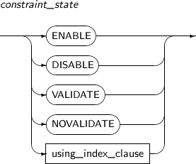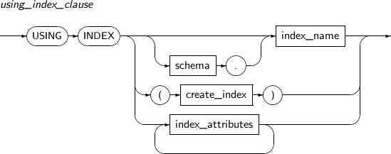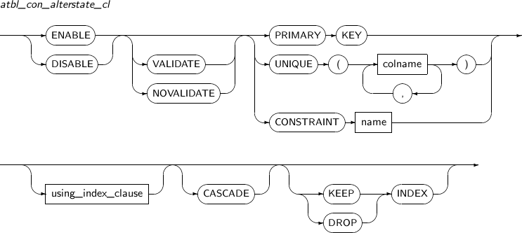 -
구성요소
-
constraint_state
구성요소 설명 ENABLE 새로 삽입될 데이터에 제약조건을 적용한다.
처음 제약조건이 생성될 때 ENABLE이나 DISABLE을 지정하지 않으면 ENABLE이 디폴트로 설정된다.
DISABLE 상태여서 적용되지 않은 제약조건에 ENABLE을 적용한다면, 앞으로 삽입될 데이터에 제약조건을 다시 적용시킬 수 있다.
만약 UNIQUE나 PRIMARY KEY 제약조건에 ENABLE이 적용되면, 이미 존재하는 UNIQUE 인덱스를 사용한다. 만약 UNIQUE 인덱스가 존재하지 않는 상태라면 새로 UNIQUE 인덱스를 생성한다.
FOREIGN KEY 제약조건의 경우 비유일 인덱스에 대해 같은 동작을 한다.
DISABLE 새로 삽입될 데이터에 제약조건을 적용하지 않는다.
만약 UNIQUE나 PRIMARY KEY 제약조건, FOREIGN KEY 제약조건을 DISABLE로 설정하면, 관련 인덱스를 삭제한다.
DISABLE로 설정된 UNIQUE나 PRIMARY KEY를 참조하는 FOREIGN KEY는 ENABLE로 설정할 수 없다. 만약 제약조건을 생성할 때 같이 만들어진 인덱스가 아닌, 제약조건이 생성되면서 원래 존재하던 인덱스를 사용한 경우라면 인덱스가 삭제되지는 않는다.
VALIDATE 이미 테이블에 삽입된 데이터가 제약조건을 만족하는지 체크하고 보장한다.
만약 VALIDATE로 설정했지만, 데이터가 이 제약조건을 만족하지 못하는 경우에는 에러를 반환하고 VALIDATE가 들어간 DDL 문장은 실패한다.
DISABLE VALIDATE 상태로 만든다면, 이미 삽입된 데이터의 제약조건에 대한 완전성을 보장하면서 앞으로 삽입될 데이터에 대해서는 보장하지 않겠다는 의미가 되기 때문에 이 상태의 제약조건이 존재하는 테이블에 대해서는 데이터의 삽입, 삭제, 갱신을 할 수 없게 된다.
NOVALIDATE 이미 테이블에 삽입된 데이터에 대해 제약조건을 만족하는지 검사하지 않는다. using_index_clause UNIQUE나 PRIMARY KEY를 설정할 때 사용할 인덱스를 지정하거나 생성하여 사용할 수 있다. schema.index_name을 지정하면 해당 인덱스를 찾아서 사용하고, create_index를 사용하면 인덱스를 생성하여 사용한다.
create_index와 index_attributes는 “7.30. CREATE INDEX”를 참고한다.
-
using_index_clause
구성요소 설명 schema 사용할 인덱스가 속해 있는 스키마를 명시한다. 생략할 경우 현재 사용자의 스키마로 인식된다. index_name 사용할 인덱스의 이름을 명시한다. create_index 인덱스를 새로 생성하여 사용하려고 할 때 명시한다. 자세한 내용은 “7.30. CREATE INDEX”를 참고한다. index_attributes 인덱스의 속성을 설정할 때 사용한다. 자세한 내용은 “7.30. CREATE INDEX”를 참고한다. -
atbl_con_alterstate_cl
구성요소 설명 ENABLE 구성요소 설명 중 constraint_state를 참고한다. DISABLE 구성요소 설명 중 constraint_state를 참고한다. VALIDATE 구성요소 설명 중 constraint_state를 참고한다. NOVALIDATE 구성요소 설명 중 constraint_state를 참고한다. PRIMARY KEY PRIMARY KEY 제약조건을 설정한다. UNIQUE column_name UNIQUE 제약조건을 설정한다. column_name에는 UNIQUE 제약조건을 지정할 컬럼의 이름을 명시한다. CONSTRAINT constraint_name 상태를 변경할 제약조건의 이름을 명시한다. using_index_clause 구성요소 설명 중 constraint_state를 참고한다. CASCADE 참조된 UNIQUE나 PRIMARY KEY 제약조건을 비활성화할 때 관련된 FOREIGN KEY까지 함께 비활성화를 하기 위해 사용한다. FOREIGN KEY가 존재하는 제약조건을 비활성화하는 경우에는 반드시 포함되어야 한다. KEEP INDEX 제약조건을 비활성화하면서 제약조건에서 사용한 인덱스를 제거하지 않고 그냥 유지하고자 할 때 명시한다. 기본값이므로 생략할 수 있다. DROP INDEX 제약조건을 제거하려고 할 때 그 제약조건에서 사용한 인덱스도 함께 제거하고자 할 때 명시한다.
-
제약 조건을 매 DML의 경우 체크하는 것이 아니라, 커밋 시점에 마지막 커밋된 시점 이후에 DML이 된 데이터에 대하여 제약 조건을 확인하도록 하는 기능이다. 커밋 시점에 수행하는 제약 조건을 통과 하지 못했을 경우 마지막 커밋 시점으로 데이터가 전부 rollback된다.
Deferrable_option의 세부 내용은 다음과 같다.
-
문법
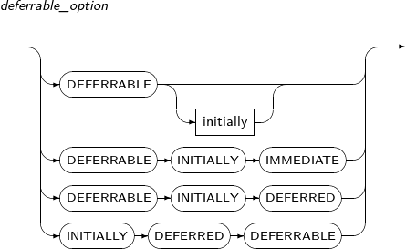 -
구성요소
-
deferrable_option
구성요소 설명 DEFERRABLE (INITIALLY (IMMEDIATE)) Deferrable constraint 기능을 사용하는 제약 조건 생성문이다.
Deferrable constraint 기능은 사용하지만, 일반 제약조건과 마찬가지로 DML의 경우에 매번 바로바로 조건을 체크할 경우에 사용된다. INITIALLY 또는 IMMEDIATE가 생략되어도 의미는 같다.
DEFERRABLE INITIALLY DEFERRED Deferrable constraint 기능을 사용하며, 제약 조건을 commit 시점에만 체크하도록 할 경우에 사용된다. INITIALLY DEFERRED DEFERRABLE Deferrable constraint 기능을 사용하며, 제약 조건을 commit 시점에만 체크하도록 할 경우에 사용된다.
-
저장 공간의 물리적인 성질과 테이블 스페이스 등을 지정하기 위한 문장이다.
Sgmt_attr의 세부 내용은 다음과 같다.
-
문법
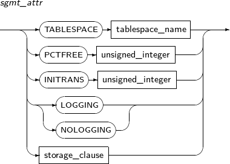 -
구성요소
구성요소 설명 TABLESPACE tablespace_name 데이터가 저장되는 테이블 스페이스를 지정할 수 있다. 지정하지 않으면 사용자의 디폴트 테이블 스페이스를 사용하게 된다.
임시 테이블의 경우 디폴트로 지정된 임시 테이블 스페이스를 사용한다. tablespace_name에 테이블 스페이스의 이름을 명시한다.
PCTFREE unsigned_integer 데이터를 디스크 블록에 저장할 때 데이터가 변경되어 크기가 증가할 것에 대비하여 얼마만큼의 영역을 예비로 남겨둘지를 설정하는 값이다.
1 ~ 99 사이의 값을 설정할 수 있으며, 지정하지 않으면 기본값은 10이다. unsigned_integer에 해당 값을 명시한다.
INITRANS unsigned_integer 디스크 블록마다 트랜잭션 엔트리(Transaction Entry)를 위한 공간을 몇 개를 확보할 것인가를 나타낸다. 트랜잭션 엔트리는 블록에 공간이 남아있다면 필요할 때 확장된다. 따라서 미리 큰 값을 설정할 필요는 없다.
최솟값은 1이며, 최댓값은 디스크 블록의 크기에 따라 다르다. 지정하지 않으면 기본값은 2이다. unsigned_integer에 해당 값을 명시한다.
LOGGING / NOLOGGING Direct-Path Loading을 이용하는 경우 Redo 로그를 남기지 않는다. 단, Archive Mode를 사용할 경우엔 로그를 남긴다. 지정하지 않으면 기본값은 LOGGING이다. 현재 파티션 테이블별로 LOGGING 옵션을 설정하는 것은 지원하지 않는다. storage_clause 세그먼트의 세부적인 속성을 정의한다. 자세한 내용은 “7.1.5. Storage_clause”를 참고한다.
세그먼트의 세부적인 속성을 정의하기 위한 문장이다.
Storage_clause의 세부 내용은 다음과 같다.
-
문법
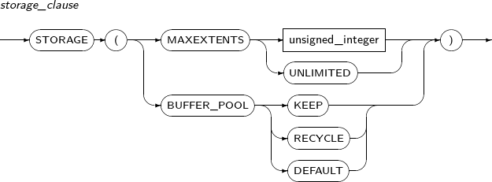 -
구성요소
구성요소 설명 MAXEXTENTS 세그먼트에 할당되는 최대 익스텐트의 개수를 지정한다. ALTER TABLE 문에서는 예외적으로 MAXEXTENTS 값 조정이 불가능하다. unsigned_integer 제한할 익스텐트의 개수를 명시한다. UNLIMITED 익스텐트의 개수를 제한하지 않는다.
지정하지 않으면, 기본값은 UNLIMITED이다.
BUFFER_POOL 해당 세그먼트의 데이터 블록을 어떤 Buffer Pool에 넣을 것인지를 지정한다. KEEP 세그먼트의 블록을 KEEP Buffer Pool에 넣어 메모리에 보존하도록 한다. 이로써 I/O 연산을 하는 시간을 줄일 수 있다.
$TB_SID.tip 파일에 DB_KEEP_CACHE_SIZE 파라미터가 설정되어 있어야 버퍼 캐시에 KEEP Buffer Pool이 설정된다.
DB_KEEP_CACHE_SIZE 파라미터가 설정되어 있지 않으면 BUFFER_POOL KEEP 지정은 의미가 없다.
RECYCLE 세그먼트의 블록을 RECYCLE Buffer Pool에 넣어 DEFAULT Buffer Pool이 불필요한 버퍼 캐시를 저장하지 않도록 한다.
$TB_SID.tip 파일에 DB_RECYCLE_CACHE_SIZE 파라미터가 설정되어 있어야 버퍼 캐시에 RECYCLE Buffer Pool이 설정된다.
DB_KEEP_CACHE_SIZE 파라미터가 설정되어 있지 않으면 BUFFER_POOL RECYCLE 지정은 의미가 없다.
DEFAULT DEFAULT로 지정하거나 BUFFER_POOL 옵션을 지정하지 않으면, DEFAULT Buffer Pool을 사용한다.
데이터베이스의 상태나 구성파일을 변경한다. 또한 데이터베이스를 복구하는 데에도 사용된다.
ALTER DATABASE의 세부 내용은 다음과 같다.
-
문법
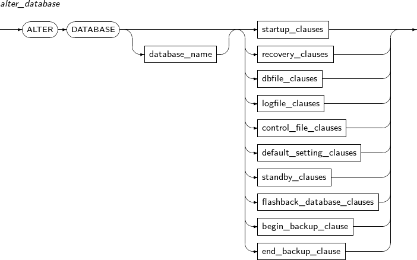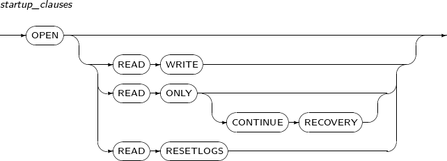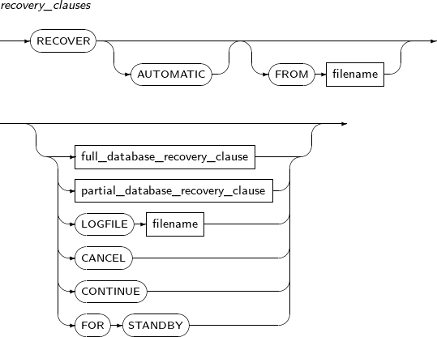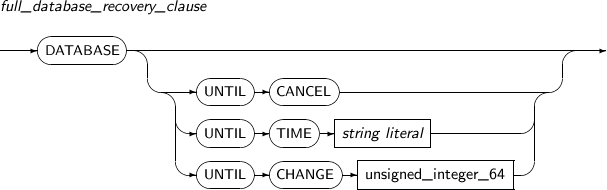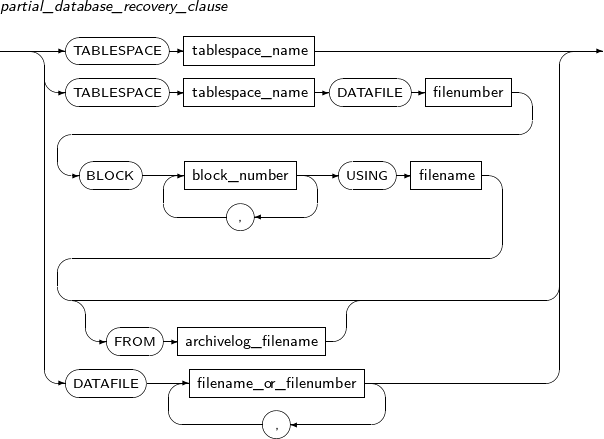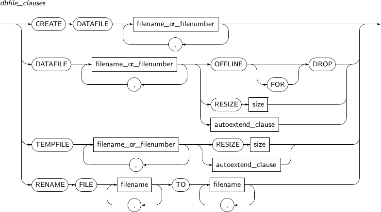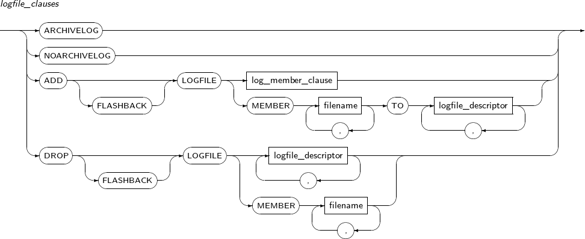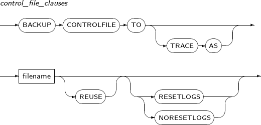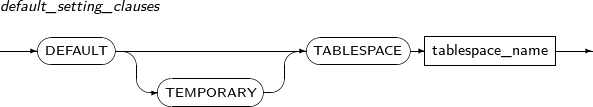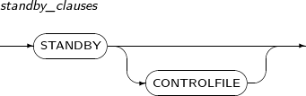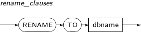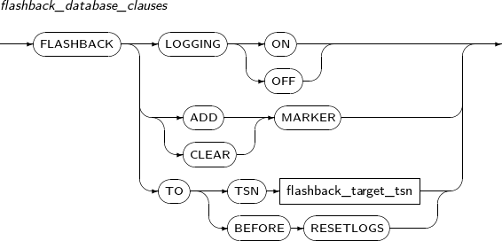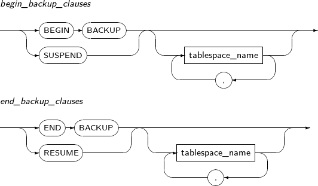 -
특권
SYSDBA 특권이 있어야 ALTER DATABASE를 실행할 수 있다.
-
구성요소
-
alter_database
구성요소 설명 database_name 변경할 데이터베이스를 명시한다. database_name은 생략할 수 있다.
$TB_SID.tip 파일에 설정된
DB_NAME파라미터의 값과 같아야 한다.startup_clauses startup_clauses는 데이터베이스를 정상적으로 사용할 수 있도록 기동할 때 사용하는 절이다. MOUNT 모드에서만 사용할 수 있다. recovery_clauses recovery_clauses는 미디어 복구(Media Recovery)를 위해 사용하는 절이다. MOUNT 모드에서만 사용할 수 있다. dbfile_clauses dbfile_clauses는 데이터 파일의 추가, 재생성 등의 작업을 하기 위해 사용하는 절이다. 파일을 복구하는 문장과 데이터 파일이나 임시 파일의 속성을 수정하는 문장으로 나뉜다. 파일의 지정은 파일의 전체 경로나 파일 번호를 명시하여 지정할 수 있다.
데이터 파일과 임시파일의 파일 번호는 다음의 뷰를 통해 알 수 있다.
-
V$DATAFILE
-
V$TEMPFILE
-
V$RECOVER_FILE
-
DBA_DATA_FILES
-
DBA_TEMP_FILES
logfile_clauses logfile_clauses는 ARCHIVELOG 모드를 설정하거나 로그 파일을 추가, 제거하기 위한 절이다. MOUNT 모드에서만 사용할 수 있다. control_file_clauses control_file_clauses는 컨트롤 파일을 물리적으로 복사하여 명시한 파일로 백업 본을 만들기 위한 절과 컨트롤 파일을 새로 생성하는 문장을 명시한 파일에 저장하기 위한 절로 나뉜다.
후자의 경우에는 다음과 같은 여러 옵션을 함께 사용할 수 있다. 파일이 이미 존재하는 경우 REUSE 옵션을 사용해야 한다. 컨트롤 파일을 생성하는 문장은 RESETLOGS를 사용할 경우와 그렇지 않은 경우로 나눌 수 있다.
default_setting_clauses default_setting_clauses는 데이터베이스의 디폴트 테이블 스페이스를 변경하기 위한 절이다. TEMPORARY 테이블 스페이스와 일반 테이블 스페이스를 변경할 수 있다. standby_clauses standby_clauses는 Standby 데이터베이스와 관련된 작업을 할 수 있다. flashback_database_clauses 플래시백 데이터베이스와 관련된 작업을 할 수 있다. begin_backup_clause 데이터베이스 운영 중 백업을 시작할 때 사용된다. 백업 대상 테이블 스페이스들을 별도로 지정하지 않은 경우 데이터베이스 전체에 대해 실행된다. end_backup_clause 데이터베이스 백업을 끝낼 때 사용된다. -
-
startup_clauses
구성요소 설명 READ WRITE 데이터베이스를 READ WRITE 모드로 기동시킨다.
사용자가 읽기와 쓰기를 모두 할 수 있고, Redo 로그를 저장한다.
기본값이므로 생략할 수 있다.
READ ONLY 사용자가 읽기만을 할 수 있다. 따라서 Redo 로그를 저장하지 못한다. READ ONLY CONTINUE RECOVERY Standby 데이터베이스를 읽기 전용으로 전환한 상태에서 동시에 Primary 데이터베이스로부터 전송받은 Redo 로그를 적용하는 모드로 전환한다.
Standby 상태에서만 사용할 수 있다. 자세한 내용은 "Tibero 관리자 안내서"를 참고한다.
READ RESETLOGS 로그의 시퀀스를 1로 초기화하고, 아카이브되지 않은 로그를 아카이브한다. 남아 있는 Redo 로그 정보는 적용될 일이 없어서 삭제된다. -
recovery_clauses
구성요소 설명 AUTOMATIC AUTOMATIC을 사용해 복구 과정을 자동화하면, 필요한 로그 파일을 일일이 지정하지 않고 원하는 조건까지 자동 복구를 할 수 있다.
자동 복구를 위해서는 컨트롤 파일에 온라인 로그 파일과 아카이브 로그 파일이 제대로 명시되어 있어야 한다.
FROM 절을 통해 사용할 아카이브 로그 파일이 있는 디렉터리를 지정할 수 있다. FROM 절로 지정하지 않으면
LOG_ARCHIVE_DEST파라미터에 설정된 디렉터리를 사용한다.full_database_recovery_clause 데이터베이스 전체에 대한 미디어 복구를 시작할 때 사용하는 절이다.
완전 복구 또는 불완전 복구를 지정할 수 있다.
full_database_recovery_clause를 생략하면 데이터베이스 전체에 대한 완전 복구를 시작한다.
partial_database_recovery_clause 데이터베이스 전체가 아닌 특정 테이블 스페이스나 데이터 파일에 미디어 복구를 시작할 때 사용한다. LOGFILE 적용할 로그 파일을 지정하고, 복구를 진행할 수 있다. filename 지정할 파일의 이름을 명시한다. CANCEL 복구를 마칠 때 사용한다. FOR STANDBY Primary의 Hot Backup으로 Standby를 구축할 때 사용한다. 복구는 다음과 같이 3단계로 진행된다.
단계 명칭 설명 1 시작 복구를 시작하는 단계이다. 2 진행 로그 파일을 사용하여 복구를 순차적으로 진행하는 단계이다. 3 종료 복구를 종료하는 단계이다. 복구는 다음과 같이 두 가지 종류로 구분된다.
-
full_database_recovery_clause
구성요소 설명 UNTIL CANCEL 불완전 복구를 할 때 사용한다.
UNTIL CANCEL을 사용한 뒤에 복구할 로그 파일을 명시한다.
UNTIL TIME 특정 시간까지 불완전 복구를 진행할 때 사용한다.
명시할 시간은 날짜형 리터럴을 사용한다.
string literal UNTIL TIME을 사용할 때 날짜형 리터럴을 명시한다. UNTIL CHANGE 데이터베이스의 TSN 값을 기준으로 복구를 할 때 사용한다.
TSN 값은 V$LOG 뷰를 이용하여 조회할 수 있다.
unsigned_integer_64 UNTIL CHANGE를 사용할 때 TSN 값을 명시한다. -
partial_database_recovery_clause
구성요소 설명 TABLESPACE 특정 테이블 스페이스만 복구할 때 사용한다. 주로 OFFLINE IMMEDIATE로 오프라인된 테이블 스페이스를 온라인으로 전환할 때 사용한다. tablespace_name 미디어 복구 대상이 되는 테이블 스페이스의 이름을 명시한다. filename_or_filenumber 미디어 복구 대상이 되는 데이터 파일의 이름을 명시하거나 데이터 파일의 번호를 명시한다. block_number 복구할 데이터 파일의 블록 번호를 명시한다. archivelog_filename 복구에 사용할 아카이브 로그를 지정한다. -
dbfile_clauses
구성요소 설명 CREATE 데이터 파일이 없는 경우 빈 데이터 파일을 만드는 데 사용된다.
생성 후 미디어 복구를 통해 데이터 파일을 복구할 수 있다.
MOUNT 모드에서만 사용할 수 있다.
DATAFILE 데이터 파일을 명시하는 부분이다.
파일의 이름을 명시할 수도 있고, 파일의 번호를 명시할 수도 있다.
여러 개의 파일을 동시에 명시할 수 있으며, 각각의 파일은 콤마(,)를 사용해 구분한다.
filename_or_filenumber 파일의 이름 또는 파일의 번호를 명시하는 부분이다. OFFLINE FOR DROP 데이터 파일을 복구할 수 없을 때 해당 데이터 파일이 속한 테이블 스페이스를 제거하는 조건으로 데이터베이스를 운영할 때 사용한다.
MOUNT 모드에서만 사용할 수 있다.
RESIZE size 파일의 크기를 증가시키거나 감소 시킬 때 사용한다.
size 부분에 파일의 크기를 명시한다. 파일의 크기는 (BLOCK 개수 * DB_BLOCK_SIZE)이다. 단, 파일의 크기를 줄이는 경우 현재 사용하고 있는 크기와 입력받은 크기 중 큰 값이 파일 사이즈로 지정된다.
autoextend_clause AUTOEXTEND 속성을 변경할 수 있다. 자세한 내용은 “7.25. CREATE DATABASE”를 참고한다. TEMPFILE 임시 파일을 명시하는 부분이다.
파일의 이름을 명시할 수도 있고, 파일의 번호를 명시할 수도 있다. 여러 개의 파일을 동시에 명시할 수 있으며, 각각의 파일은 콤마(,)를 사용해 구분한다.
RENAME FILE 파일의 이름을 변경할 때 사용한다. filename TO filename TO의 앞부분에 변경할 파일의 이름을 명시하고, TO 뒷부분에 변경 뒤의 파일의 이름을 명시한다.
여러 개의 파일을 동시에 변경할 수 있으며, 여러 개의 파일을 동시에 변경할 경우 각각의 파일은 콤마(,)를 사용해 구분한다.
-
logfile_clauses
구성요소 설명 ARCHIVELOG ARCHIVELOG 모드를 설정할 수 있다. NOARCHIVELOG NOARCHIVELOG 모드를 설정할 수 있다.
NOARCHIVELOG 모드로 운영되는 데이터베이스는 복구가 매우 제한적이다.
ADD LOGFILE 온라인 로그 파일을 추가할 수 있다.
로그 그룹 전체를 추가하거나 로그 그룹에 멤버를 추가할 수 있다. 추가할 로그 파일은 절대경로로 명시해야 한다. 현재 로그 그룹에 대해서는 수행할 수 없다.
MOUNT 모드에서뿐만 아니라 데이터베이스 운영 중에도 가능하다.
log_member_clause log_member_clause는 GUOUP 절을 사용해 로그 그룹의 번호를 지정하기 위한 절이다. 자세한 내용은 “7.25. CREATE DATABASE”를 참고한다. MEMBER 로그 그룹 내의 특정 로그 멤버 파일을 지정할 때 사용한다. filename 파일의 이름을 명시한다. logfile_descriptor 로그 그룹이나 로그 파일을 명시한다. DROP LOGFILE 온라인 로그 파일을 제거할 수 있다.
로그 파일을 추가할 때처럼 제거할 때도 그룹 전체를 제거하거나 그룹의 멤버만 제거할 수 있다. 로그 그룹은 반드시 2개 이상 있어야 하며, 제거할 로그 파일은 절대경로로 명시해야 한다. 현재 로그 그룹에 대해서는 수행할 수 없다.
MOUNT 모드에서뿐만 아니라 데이터베이스 운영 중에도 가능하다.
-
logfile_descriptor
구성요소 설명 GROUP group 로그 그룹 단위로 로그 파일을 추가하거나 제거할 때 해당 로그 그룹을 명시한다. filename 로그 멤버 단위로 로그 파일을 추가하거나 제거할 때 해당 파일의 이름을 명시한다. -
control_file_clauses
구성요소 설명 BACKUP CONTROLFILE TO 컨트롤 파일의 물리적 복사본을 백업할 때 사용한다. BACKUP CONTROLFILE TO TRACE AS 컨트롤 파일의 생성 문장을 백업할 때 사용한다. filename 컨트롤 파일의 물리적 복사본 또는 생성 문장을 저장할 파일을 지정한다. REUSE 컨트롤 파일의 생성 문장을 백업할 때 이미 존재하는 파일을 재사용하려면 REUSE 옵션을 사용해야 한다. RESETLOGS 기존의 로그 파일은 무시하고, 로그를 초기화한다. NORESETLOGS 기존의 유효한 로그 파일을 계속 사용한다. -
default_setting_clauses
구성요소 설명 DEFAULT DEFAULT 테이블 스페이스를 변경할 때 사용하는 예약어이다. TEMP TEMPORARY 테이블 스페이스임을 지정한다.
TEMPORARY 테이블 스페이스를 쓰지 않으면 일반 테이블 스페이스를 의미한다.
TABLESPACE 테이블 스페이스의 이름을 지정할 때 사용하는 예약어이다. tablespace_name 테이블 스페이스의 이름을 명시한다. -
standby_clauses
구성요소 설명 STANDBY 데이터베이스를 Standby 모드로 전환한다.
MOUNT, READ ONLY 모드에서만 사용할 수 있다.
STANDBY CONTROLFILE 초기화 파라미터 중
STANDBY_FILE_NAME_CONVERT에 지정된 경로에 따라 컨트롤 파일에 저장된 데이터베이스 파일의 경로를 변환하여 Primary 데이터베이스에서 복사한 컨트롤 파일을 Standby 데이터베이스용으로 사용할 수 있게 해준다.MOUNT 모드에서만 사용할 수 있다. 자세한 내용은 "Tibero 관리자 안내서"를 참고한다.
-
rename_clauses
구성요소 설명 RENAME TO DBNAME 데이터베이스 이름을 변경한다. MOUNT 모드에서만 사용할 수 있다. -
flashback_database_clauses
구성요소 설명 FLASHBACK LOGGING ON 플래시백 로깅을 활성화한다.
MOUNT 모드에서 FLASHBACK_LOG_BUFFER 초기화 파라미터가 설정되어있어야 수행 가능하다. 플래시백 로그는 데이터베이스 복구 또는 NORMAL 모드로 부팅하면서부터 플래시백 로그 파일에 기록된다.
FLASHBACK LOGGING OFF 플래시백 로깅을 비활성화한다. MOUNT 모드에서만 수행 가능하다.
플래시백 로그는 더 이상 기록되지 않는다.
FLASHBACK ADD MARKER 플래시백 로그를 남기는 기준인 MARKER를 추가한다.
MARKER의 시점 이후에 처음 변경되는 데이터 파일의 블록들만 플래시백 로그에 기록된다.
FLASHBACK CLEAR MARKER Marker의 기록들을 모두 삭제한다. FLASHBACK TO TSN flashback_target_tsn TSN 기준 원하는 시점으로 데이터베이스의 컨트롤 파일과 데이터 파일을 플래시백한다. FLASHBACK TO BEFORE RESETLOGS 현 데이터베이스의 Resetlogs 부팅 직전의 시점으로 데이터베이스의 컨트롤 파일과 데이터 파일을 플래시백한다.
-
-
예제
-
recovery_clauses
다음은 복구를 시작하고 로그 파일을 하나씩 적용해 완전 복구를 진행하는 예이다.
SQL> ALTER DATABASE RECOVER; Database altered. SQL> ALTER DATABASE RECOVER LOGFILE '/database/archive/arc-d1141964974-s3-r0.arc'; Database altered. SQL> ALTER DATABASE RECOVER LOGFILE '/database/archive/arc-d1141964974-s4-r0.arc'; Database altered. SQL> ALTER DATABASE RECOVER LOGFILE '/database/logfile002.log'; Database altered. SQL> ALTER DATABASE RECOVER CANCEL; Database altered.위의 예를 보면, 마지막 부분에서 CANCEL을 사용해 복구를 종료하는 것을 알 수 있다.
다음은 AUTOMATIC 옵션을 사용해 자동으로 완전 복구를 진행하는 예이다.
SQL> ALTER DATABASE RECOVER AUTOMATIC; Database altered.
-
full_database_recovery_clause
다음은 UNTIL CANCEL을 명시하여, 불완전 복구를 진행하는 예이다.
SQL> ALTER DATABASE RECOVER DATABASE UNTIL CANCEL; Database altered. SQL> ALTER DATABASE RECOVER LOGFILE '/database/archive/arc-d1141964974-s3-r0.arc'; Database altered. SQL> ALTER DATABASE RECOVER LOGFILE '/database/archive/arc-d1141964974-s4-r0.arc'; Database altered. SQL> ALTER DATABASE RECOVER LOGFILE '/database/logfile002.log'; Database altered. SQL> ALTER DATABASE RECOVER CANCEL; Database altered.위의 예는 로그 파일 3개를 복구한 뒤에 CANCEL을 사용해 복구를 마치고 있다.
다음은 UNTIL TIME을 이용해 불완전 복구를 진행하는 예이다.
SQL> ALTER DATABASE RECOVER AUTOMATIC DATABASE UNTIL TIME '2006-11-15 13:59:00'; Database altered.위의 예에서는 사용자가 2006년 11월 15일 14시경 실수로 테이블을 제거하였다고 가정한다. 사용자가 테이블을 제거하기 이전의 데이터베이스로 되돌리기 위해서는 불완전 복구를 해야 한다.
먼저 되돌리려는 시점 이전에 백업한 데이터 파일을 복사한 후 제거가 일어나기 전까지의 로그 파일을 적용하여 복구를 한다. 따라서 위의 예에서와 같이 2006년 11월 15일 13시 59분까지 자동복구를 하면 된다.
다음은 UNTIL CHANGE를 이용하여 데이터베이스의 TSN 값을 기준으로 복구를 진행하는 예이다.
SELECT * FROM v$log; GROUP# SEQUENCE# BYTES MEMBERS ARC STATUS FIRST_CHAN FIRST_TIME ------ --------- ---------- ------- --- -------- ---------- ---------- 0 3 2147483648 2 NO CURRENT 3250 2006-11-15 1 1 2147483648 2 NO INACTIVE 1319 2006-11-15 2 2 2147483648 2 NO INACTIVE 2074 2006-11-15 3 rows selected. SQL> ALTER DATABASE RECOVER AUTOMATIC DATABASE UNTIL CHANGE 2074; Database altered.위의 예에서는 먼저 V$LOG를 입력하여 로그를 조회하고, '로그 그룹 2'가 시작하는 지점까지 복구를 진행하기 위해 TSN 값 '2074'를 입력하여 복구를 진행하는 것을 볼 수 있다. V$LOG를 사용하면 TSN 값을 조회하거나 문제가 생긴 로그를 알아낼 수 있다.
-
dbfile_clauses
다음은 CREATE DATAFILE을 사용하는 예이다.
SQL> SELECT file#, error FROM v$recover_file; FILE# ERROR ---------- ----------------------- 2 FILE MISSING 1 row selected. SQL> ALTER DATABASE CREATE DATAFILE 2; Database altered.위의 예는 FILE# 2번 데이터 파일이 존재하지 않을 경우 빈 파일을 만들어 복구할 수 있도록 준비한다.
다음은 OFFLINE FOR DROP을 사용해 데이터 파일에 속한 테이블 스페이스를 제거하는 예이다.
SQL> SELECT file#, error FROM v$recover_file; FILE# ERROR ---------- ----------------------- 2 FILE MISSING 1 row selected. SQL> ALTER DATABASE DATAFILE 2 OFFLINE FOR DROP; Database altered.OFFLINE FOR DROP은 데이터 파일을 복구할 수 없을 때 해당 데이터 파일이 속한 테이블 스페이스를 제거하는 조건으로 데이터베이스를 운영할 때 사용한다.
다음은 RESIZE를 사용해 파일의 크기를 증가시키는 예이다.
SQL> SELECT file_name, blocks, autoextensible FROM dba_data_files WHERE file_name LIKE '%ts1.dbf'; FILE_NAME BLOCKS AUTOEXTENSIBLE -------------------- ---------- --------------- /tmp/ts1.dbf 2576 NO 1 row selected. SQL> ALTER DATABASE DATAFILE '/tmp/ts1.dbf' RESIZE 20M; Database altered. SQL> SELECT file_name, blocks, autoextensible FROM dba_data_files WHERE file_name LIKE '%ts1.dbf'; FILE_NAME BLOCKS AUTOEXTENSIBLE -------------------- ---------- --------------- /tmp/ts1.dbf 5120 NO 1 row selected.다음은 autoextend_clause를 명시하여 AUTOEXTEND 속성을 활성화시키는 예이다.
SQL> SELECT file_name, blocks, autoextensible FROM dba_data_files WHERE file_name LIKE '%ts1.dbf'; FILE_NAME BLOCKS AUTOEXTENSIBLE -------------------- ---------- --------------- /tmp/ts1.dbf 5120 NO 1 row selected. SQL> ALTER DATABASE DATAFILE '/tmp/ts1.dbf' AUTOEXTEND ON NEXT 5M; Database altered. SQL> SELECT file_name, blocks, autoextensible, increment_by FROM dba_data_files WHERE file_name LIKE '%ts1.dbf'; FILE_NAME BLOCKS AUTOEXTENSIBLE INCREMENT_ -------------------- ---------- --------------- ---------- /tmp/ts1.dbf 5120 YES 1296 1 row selected. -
logfile_clauses
다음은 데이터베이스를 ARCHIVELOG 모드로 설정하는 예이다.
SQL> ALTER DATABASE ARCHIVELOG;
다음은 ADD LOGFILE을 사용해 온라인 로그 파일을 추가하는 예이다.
SQL> SELECT group#, member FROM v$logfile; GROUP# MEMBER ---------- ------------------------------------- 0 /database/log001.log 0 /database/log002.log 1 /database/log003.log 1 /database/log004.log 2 /database/log005.log 2 /database/log006.log 6 rows selected. SQL> ALTER DATABASE ADD LOGFILE GROUP 3 2 ('/database/log010.log', '/database/log011.log'); Database altered. SQL> SELECT group#, member FROM v$logfile; GROUP# MEMBER ---------- ------------------------------------- 0 /database/log001.log 0 /database/log002.log 1 /database/log003.log 1 /database/log004.log 2 /database/log005.log 2 /database/log006.log 3 /database/log010.log 3 /database/log011.log 8 rows selected.위의 예에서는 두 온라인 로그 파일, '/database/log010.log', '/database/log011.log'을 멤버로 갖는 로그 그룹을 추가하고 있다. 온라인 로그 파일을 추가할 때는 그룹 전체를 추가하거나 그룹에 로그 멤버를 추가할 수 있으며, 로그 파일의 절대경로를 명시해야 한다.
다음은 로그 그룹에 로그 멤버 하나를 추가하는 예이다.
SQL> SELECT * FROM v$log; GROUP# SEQUENCE# BYTES MEMBERS ARC STATUS FIRST_CHAN FIRST_TIME ------ --------- ---------- ------- --- -------- ---------- ---------- 0 3 2147483648 2 NO CURRENT 3260 2006/12/20 1 1 2147483648 2 NO INACTIVE 1325 2006/12/20 2 2 2147483648 2 NO INACTIVE 2065 2006/12/20 3 -1 2147483648 3 NO UNUSED 0 2006/12/20 4 rows selected. SQL> SELECT group#, member FROM v$logfile; GROUP# MEMBER ---------- ------------------------------------- 0 /database/log001.log 0 /database/log002.log 1 /database/log003.log 1 /database/log004.log 2 /database/log005.log 2 /database/log006.log 3 /database/log010.log 3 /database/log011.log 8 rows selected. SQL> ALTER DATABASE ADD LOGFILE MEMBER '/tmp/log012.log' TO GROUP 3; Database altered. SQL> SELECT group#, member FROM v$logfile; GROUP# MEMBER ---------- ------------------------------------- 0 /database/log001.log 0 /database/log002.log 1 /database/log003.log 1 /database/log004.log 2 /database/log005.log 2 /database/log006.log 3 /database/log010.log 3 /database/log011.log 3 /database/log012.log 9 rows selected.위의 예는 '로그 그룹 3'에 로그 파일을 추가하는 예이다. V$LOG를 사용해 현재 로그 그룹을 확인할 수 있다. 또한 로그 전환(Log Switch)를 활용해 현재 로그 그룹을 변경할 수도 있다.
위의 예에서는 V$LOG를 통해 로그 그룹이 0번인 것을 알 수 있다. '로그 그룹 3'에 로그 멤버의 추가가 가능하다는 것을 알 수 있으며, '로그 그룹 3'에 로그 멤버 'log12'를 추가하고 그 결과를 보여주고 있다.
다음은 DROP LOGFILE을 사용해 온라인 로그 파일을 제거하는 예이다.
SQL> SELECT group#, member FROM v$logfile; GROUP# MEMBER ---------- ------------------------------------- 0 /database/log001.log 0 /database/log002.log 1 /database/log003.log 1 /database/log004.log 2 /database/log005.log 2 /database/log006.log 3 /database/log010.log 3 /database/log011.log 3 /database/log012.log 9 rows selected. SQL> ALTER DATABASE DROP LOGFILE MEMBER '/database/log012.log'; Database altered. SQL> SELECT group#, member FROM v$logfile; GROUP# MEMBER ---------- ------------------------------------- 0 /database/log001.log 0 /database/log002.log 1 /database/log003.log 1 /database/log004.log 2 /database/log005.log 2 /database/log006.log 3 /database/log010.log 3 /database/log011.log 8 rows selected. SQL> ALTER DATABASE DROP LOGFILE GROUP 3; Database altered. SQL> SELECT group#, member FROM v$logfile; GROUP# MEMBER ---------- ------------------------------------- 0 /database/log001.log 0 /database/log002.log 1 /database/log003.log 1 /database/log004.log 2 /database/log005.log 2 /database/log006.log 6 rows selected.위의 예에서는 '로그 그룹 3'의 로그 멤버인 'log012.log'만 제거하는 경우와 '로그 그룹 3' 전체를 제거하는 경우를 보여주고 있다.
-
control_file_clauses
다음은 control_file_clauses를 사용해 컨트롤 파일의 생성 문장을 백업하는 예이다.
SQL> ALTER DATABASE BACKUP CONTROLFILE TO TRACE AS '/backup/create_ctr.sql';위의 예는 컨트롤 파일의 생성 문장을 '/backup/create_ctr.sql'이라는 파일에 저장한다.
다음은 RESETLOGS로 지정한 상태에서 컨트롤 파일의 생성 문장을 백업하는 예이다.
SQL> ALTER DATABASE BACKUP CONTROLFILE TO TRACE AS '/backup/create_ctr.sql' REUSE RESETLOGS;위의 예에서는 이미 생성된 파일에 REUSE 옵션을 사용해서 컨트롤 파일의 생성 문장을 백업하는 것을 보여준다. REUSE 옵션은 이미 존재하는 파일에 컨트롤 파일의 생성 문장을 저장하려고 할 때 사용한다. 만약 RESETLOGS를 지정하지 않으면, NORESETLOGS로 간주된다.
-
디스크스페이스와 디스크스페이스에 속한 디스크의 속성과 상태를 변경한다.
ALTER DISKSPACE의 세부 내용은 다음과 같다.
-
문법
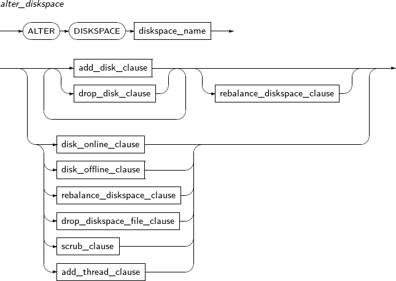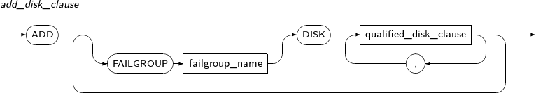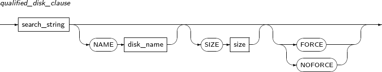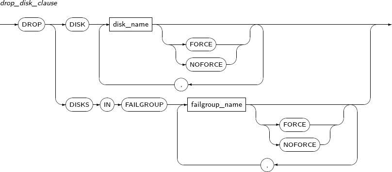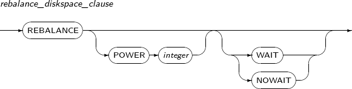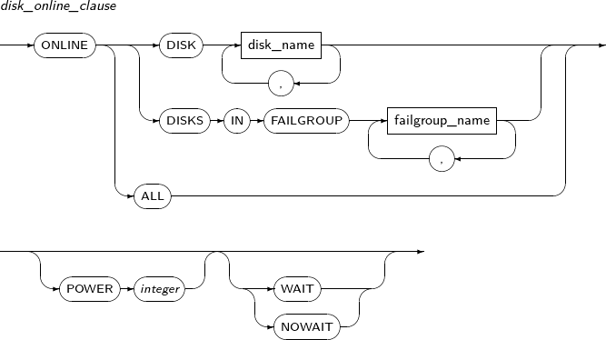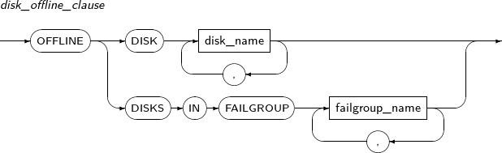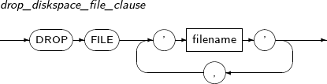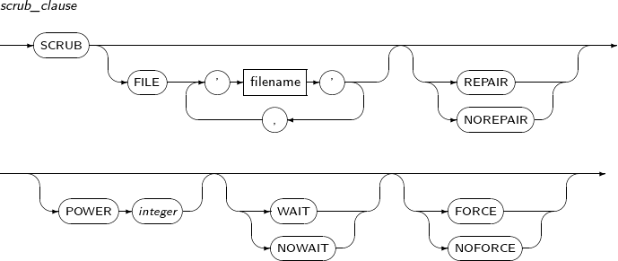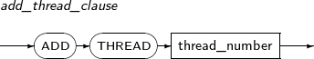 -
구성요소
-
create_diskspace
구성요소 설명 diskspace_name 변경할 디스크스페이스의 이름을 명시한다. add_disk_clause 디스크스페이스에 디스크 추가를 선언할 때 사용한다. 리밸런스를 수행하기 전까지 디스크가 사용되지 않는다. drop_disk_clause 디스크스페이스에서 디스크 제거를 선언할 때 사용한다. 리밸런스를 수행하기 전까지 디스크가 제거되지 않는다. rebalance_diskspace_clause 디스크스페이스에 저장된 데이터를 이동시켜서 실제 디스크의 추가 또는 제거를 수행한다. disk_online_clause 오프라인 상태인 디스크를 온라인 상태로 바꿀 때 사용한다.
오프라인 상태였던 디스크는 데이터 동기화 과정을 거쳐 온라인 상태가 된다.
disk_offline_clause 온라인 상태인 디스크를 오프라인 상태로 바꿀 때 사용한다.
오프라인 상태로 바뀐 디스크는 그 즉시 읽기와 쓰기가 중단된다.
drop_diskspace_file_clause 디스크스페이스에 저장된 사용자 파일을 제거할 때 사용한다. scrub_clause 디스크스페이스에 저장된 사용자 데이터를 클리닝할 때 사용한다.
NORMAL 또는 HIGH의 중복 레벨로 생성된 디스크스페이스에 대해, 자동으로 데이터 커럽션을 확인하고 복구할 수 있다.
add_thread_clause 디스크스페이스에 클러스터 구성을 위한 스레드를 추가할 때 사용한다. -
add_disk_clause
구성요소 설명 FAILGROUP failgroup_name 디스크가 속할 failgroup 이름을 명시한다.
디스크스페이스의 중복 레벨이 NORMAL 또는 HIGH인 경우에만 유효하며, 알파벳과 숫자 등으로 최대 48자를 사용할 수 있다.
명시하지 않은 경우에는 모든 디스크가 각각 하나의 failgroup으로 구성되며 디스크 이름이 failgroup 이름으로 사용된다.
DISK qualified_disk_clause 디스크스페이스에 추가할 디스크를 정의한다. -
qualified_disk_clause
구성요소 설명 search_string 디스크스페이스를 구성할 디스크의 경로를 명시한다.
와일드카드를 사용해 여러 디스크를 나타낼 수 있으며, TAS_DISKSTRING 초기화 파라미터로 찾을 수 있는 경로이어야 한다.
NAME disk_name search_string으로 찾은 디스크의 이름을 명시한다.
search_string으로 찾은 디스크가 한 개인 경우에만 지정할 수 있으며, 알파벳과 숫자 등으로 최대 48자를 사용할 수 있다. 디스크의 이름은 TAS 내부에서만 사용되며 디스크 경로와는 무관하다. 명시하지 않은 경우 임의로 생성된 이름이 사용된다.
SIZE search_string으로 찾은 디스크의 크기를 byte 단위로 명시한다. search_string으로 찾은 디스크가 여러 개인 경우 모든 디스크가 같은 크기로 지정된다.
명시하지 않은 경우 TAS에서 파악한 실제 디스크의 크기가 지정된다. TAS에서 실제 디스크를 크기를 알 수 없는 경우 오류가 발생하며, 이 때는 반드시 디스크 크기를 명시해 주어야 한다.
FORCE search_string으로 찾은 디스크가 이미 다른 디스크스페이스에 사용 중이더라도 이를 무시하고 새로운 디스크스페이스 구성에 사용한다. 기존 디스크스페이스를 파기하는 경우에 명시한다. NOFORCE search_string으로 찾은 디스크가 이미 다른 디스크스페이스에 사용 중인 경우 오류가 발생한다. FORCE 또는 NOFORCE가 명시되지 않은 경우의 기본 동작이다. -
drop_disk_clause
구성요소 설명 DISK disk_name 제거할 디스크 이름을 명시한다. FORCE 리밸런스를 기다리지 않고 디스크스페이스에서 즉시 디스크를 제거한다.
이후 리밸런스는 중복 저장된 다른 복제본으로 수행된다. 디스크 장애로 인해 읽기가 불가능한 디스크를 제거할 때 사용한다.
NOFORCE 리밸런스 완료 후 디스크가 완전히 제거된다. FORCE/NOFORCE를 명시하지 않은 경우의 기본 동작이다. DISKS IN FAILGROUP failgroup_name 지정된 failgroup에 속한 모든 디스크를 제거할 때 사용한다. -
rebalance_diskspace_clause
구성요소 설명 POWER integer 리밸런스의 수행 속도를 0에서 11 사이의 값으로 지정한다.
지정된 숫자가 클수록 리밸런스가 빨리 끝나지만, 저장된 데이터의 동시성이 떨어진다. 명시하지 않은 경우의 자동으로 결정된다.
WAIT 리밸런스가 완전히 끝날 때까지 대기한다. NOWAIT 리밸런스를 시작하고 대기하지 않는다. 명령이 성공했더라도 리밸런스가 진행 중일 수 있다. -
disk_online_clause
구성요소 설명 DISK disk_name 온라인 상태로 변경할 디스크의 이름을 명시한다. DISKS IN FAILGROUP failgroup_name 지정된 failgroup에 속한 모든 디스크를 온라인 상태로 변경할 때 사용한다. ALL 오프라인 상태인 모든 디스크를 온라인 상태로 변경할 때 사용한다. POWER integer 오프라인 상태였던 디스크에 대해 데이터 동기화 속도를 1에서 11 사이의 값으로 지정한다. 지정된 숫자가 클수록 동기화가 빨리 끝나지만, 저장된 데이터의 동시성이 떨어진다. WAIT 동기화가 완전히 끝날 때까지 대기한다. NOWAIT 동기화를 시작하고 대기하지 않는다. WAIT를 명시하지 않은 경우의 기본 동작이다. 명령이 성공했더라도 동기화가 진행 중일 수 있다. -
disk_offline_clause
구성요소 설명 DISK disk_name 오프라인 상태로 변경할 디스크의 이름을 명시한다. DISKS IN FAILGROUP failgroup_name 지정된 failgroup에 속한 모든 디스크를 오프라인 상태로 변경할 때 사용한다. -
drop_diskspace_file_clause
구성요소 설명 FILE 'filename' 삭제할 파일의 이름을 명시한다. -
scrub_clause
구성요소 설명 FILE 'filename' 클리닝을 수행할 파일의 이름을 명시한다. 명시하지 않으면 디스크스페이스의 모든 파일에 대해 클리닝을 수행한다. REPAIR 복제본과 같지 않은 데이터가 발견될 경우 데이터를 동기화한다. NOREPAIR 복제본과 같지 않은 데이터가 발견되면 Dump만 출력하고 데이터를 동기화하지 않는다. REPAIR를 명시하지 않은 경우의 기본 동작이다.
TRACE_DUMP_DEST 초기화 파라미터에 지정된 경로에 Dump가 출력된다.
POWER integer 데이터 클리닝 속도를 1에서 11 사이의 값으로 지정한다. 지정된 숫자가 클수록 클리닝이 빨리 끝나지만, 저장된 데이터의 동시성이 떨어진다. WAIT 클리닝이 완전히 끝날 때까지 대기한다. NOWAIT 클리닝을 시작하고 대기하지 않는다. WAIT를 명시하지 않은 경우의 기본 동작이다. 명령이 성공했더라도 클리닝이 진행 중일 수 있다. FORCE 전체 시스템의 IO 부하에 관계 없이 클리닝을 수행한다. NOFORCE 전체 시스템의 IO 부하가 큰 경우 클리닝을 수행하지 않는다. FORCE를 명시하지 않은 경우의 기본 동작이다. -
add_thread_clause
구성요소 설명 thread_number 추가할 Thread 번호를 명시한다. Thread는 TAS 인스턴스를 클러스터로 구성할 때 사용되며, THREAD 초기화 파라미터로 지정해 사용한다.
-
-
예제
다음은 ALTER DISKSPACE를 사용해 여러 개의 디스크를 추가, 제거하고 리밸런스를 수행하는 예이다.
ALTER DISKSPACE ds ADD DISK '/tas/dev/path30' NAME disk30 SIZE 512G, '/tas/dev/path31' NAME disk31 SIZE 256G; ALTER DISKSPACE ds DROP DISK disk20, disk21; ALTER DISKSPACE ds REBALANCE POWER 8 WAIT;다음은 앞의 디스크 추가, 제거 작업을 하나의 문장으로 수행하는 예이다.
ALTER DISKSPACE ds ADD DISK '/tas/dev/path30' NAME disk30 SIZE 512G, '/tas/dev/path31' NAME disk31 SIZE 256G DROP DISK disk20, disk21 REBALANCE POWER 8 WAIT;다음은 ALTER DISKSPACE를 사용해 디스크를 온라인 상태로 변경하는 예이다.
ALTER DISKSPACE ds ONLINE DISK disk00, disk01 POWER 5 NOWAIT;다음은 ALTER DISKSPACE를 사용해 디스크를 오프라인 상태로 변경하는 예이다.
ALTER DISKSPACE ds OFFLINE DISKS IN FAILGROUP fg1, fg2;다음은 ALTER DISKSPACE를 사용해 디스크스페이스의 사용자 파일을 삭제하는 예이다.
ALTER DISKSPACE ds DROP FILE '+ds/data00.dtf', '+ds/data01.dtf';다음은 ALTER DISKSPACE를 사용해 스레드를 추가하는 예이다.
ALTER DISKSPACE ds ADD THREAD 1;
지정된 tbPSM 함수를 재컴파일한다. ALTER PROCEDURE 문과 유사하다. 일반적으로 SQL 문장에 포함된 tbPSM 함수가 유효하지 않으면, SQL 문장을 실행할 때 자동으로 재컴파일된다. tbPSM 함수 또는 프러시저의 유효성에 대해서는 "Tibero tbPSM 안내서"를 참고한다.
ALTER FUNCTION은 객체의 유효성 여부에 상관없이 재컴파일을 시도한다. 이 과정에서 직간접적으로 종속 관계를 가지는 모든 부모 객체를 재귀적으로 검사하여 유효하지 않을 경우 재컴파일을 시도한다. 또한 직간접적으로 종속된 모든 자식 객체를 무효화한다. 자세한 내용은 “7.9. ALTER PROCEDURE”를 참고한다.
ALTER FUNCTION의 세부 내용은 다음과 같다.
-
문법
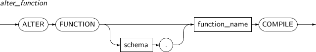 -
특권
tbPSM 함수를 재컴파일하는 사용자가 대상 함수를 소유하고 있거나, ALTER ANY PROCEDURE 시스템 특권을 부여 받아야 한다.
-
구성요소
구성요소 설명 schema 해당 함수가 속해 있는 스키마의 이름을 명시한다. function_name 해당 함수의 이름을 명시한다. -
예제
다음은 ALTER FUNCTION을 사용해 tbPSM 함수를 컴파일하는 예이다.
ALTER FUNCTION tibero.get_square COMPILE;
인덱스의 속성을 변경한다. 인덱스를 다시 만들거나, 인덱스의 이름을 변경할 때도 사용된다.
ALTER INDEX의 세부 내용은 다음과 같다.
-
문법
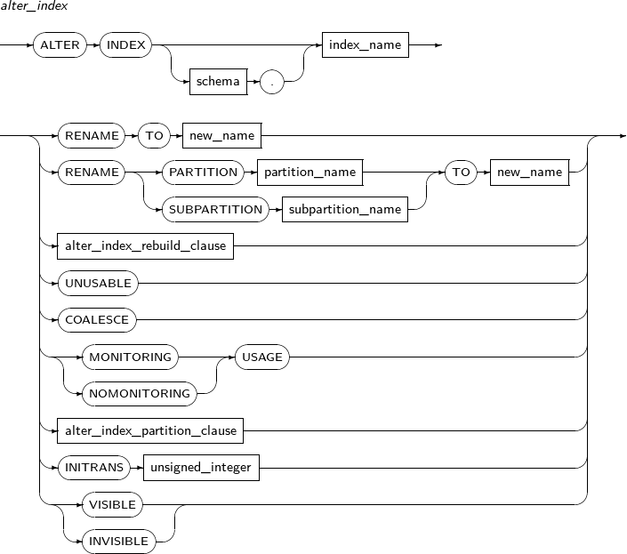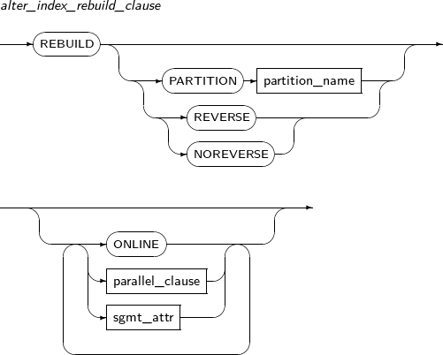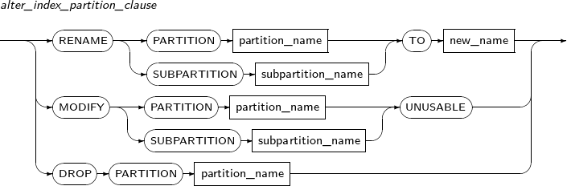 -
특권
다음 중 하나를 만족해야 ALTER INDEX 문을 실행할 수 있다.
-
인덱스가 ALTER INDEX 문을 실행하는 사용자의 스키마에 포함되어 있다.
-
ALTER ANY INDEX 시스템 특권이 있다.
-
-
구성요소
구성요소 설명 schema 인덱스나 테이블의 스키마의 이름이다. 생략하면 현재 사용자의 스키마로 인식된다. index_name 변경할 인덱스의 이름을 명시한다. RENAME 인덱스를 다시 만들지 않고, 이름을 변경한다. 인덱스의 파티션(PARTITION) 또는 서브 파티션(SUBPARTITION)의 이름도 변경할 수 있다. new_name 인덱스의 새로운 이름이다. 스키마의 이름을 지정할 수 없으므로, 스키마를 이동할 수 없다. PARTITION 파티션의 이름을 변경하고자 할 때 사용한다. partition_name 변경할 파티션의 이름을 명시한다. SUBPARTITION 서브 파티션의 이름을 변경하고자 할 때 사용한다. subpartition_name 변경할 서브 파티션의 이름을 명시한다. REBUILD 인덱스를 다시 생성한다.
인덱스 효율이 좋지 않거나, 비활성화되어 있던 인덱스를 다시 사용하고자 할 때 사용한다. 인덱스 생성이 완료되면 비활성화되어 있던 인덱스는 다시 활성화된다.
REVERSE REBUILD의 옵션이다. 인덱스 블록의 바이트 순서를 순차에서 역차순으로 다시 배정한다. 지정하지 않으면 인덱스의 기존 바이트 순서와 동일하게 재생성된다. NOREVERSE REBUILD의 옵션이다. 인덱스 블록의 바이트 순서를 기존 순서와 동일하게 재생성한다. ONLINE REBUILD의 옵션이다. 인덱스를 재생성하는 동안 해당 테이블에 DML을 수행할 수 있도록 한다. COALESCE 인덱스의 비어 있는 블록을 재사용하기 위해 인덱스 블록의 내용을 모아서 저장한다. MONITORING USAGE 인덱스 사용 여부를 모니터링한다. 모니터링 결과는 V$OBJECT_USAGE를 조회하여 확인할 수 있다. NOMONITORING USAGE 인덱스 사용 여부 모니터링을 중지한다. INITRANS unsigned_integer 인덱스 블록의 트랜잭션 엔트리(Transaction Entry)를 위한 공간을 최초 몇 개 확보할지 설정한다. 트랜잭션 엔트리는 필요할 때마다 확장된다. 따라서 미리 큰 값을 반드시 설정할 필요는 없다. INVISIBLE 인덱스의 상태 옵션이다.
인덱스의 VISIBLE과 INVISIBLE 여부는 OPTIMIZER가 해당 인덱스를 고려하는지 여부와 관련이 있다. INVISIBLE 상태인 인덱스는 DML 과정에 일반 인덱스처럼 형태를 계속 유지한다. 하지만 Optimizer에서 고려할 대상으로 여기지 않는다.
-
제약 사항
ALTER INDEX 문의 수행에는 다음과 같은 제약사항이 있다.
-
Functional Index에 대한 REBUILD ONLINE REVERSE는 수행할 수 없다.
-
REBUILD ONLINE 수행 도중 실패하거나 중단되었을 경우 반드시 DBMS_REPAIR 패키지의 ONLINE_INDEX_CLEAN 함수를 통해 인덱스 online-rebuild에 대한 클린업을 수행해야 한다.
-
-
예제
다음은 RENAME을 사용해 생성된 인덱스의 이름을 변경하는 예이다.
SQL> CONN u1/u1 Connected. SQL> CREATE TABLE t (a NUMBER); Table created. SQL> CREATE INDEX i ON t (a); Index created. SQL> ALTER INDEX i RENAME TO j; Index altered. SQL> SELECT index_name FROM user_indexes; INDEX_NAME --------------------------- J 1 row selected. SQL> ALTER INDEX u1.j RENAME TO k; Index altered. SQL> SELECT index_name FROM user_indexes; INDEX_NAME --------------------------- K 1 row selected.
다음은 REBUILD를 사용해 인덱스를 재생성하는 예이다.
SQL> ALTER INDEX i REBUILD; Index altered.
다음은 NOREVERSE 옵션과 ONLINE 옵션을 지정하여 인덱스를 재생성하는 예이다.
SQL> ALTER INDEX i REBUILD NOREVERSE ONLINE; Index altered.
다음은 COALESCE를 사용하는 예이다.
SQL> ALTER INDEX i COALESCE; Index altered.
다음은 MONITORING USAGE를 사용하는 예이다.
SQL> ALTER INDEX i MONITORING USAGE; Index altered.
이미 생성된 실체화 뷰를 변경한다.
ALTER MATERIALIZED VIEW의 세부 내용은 다음과 같다.
-
문법
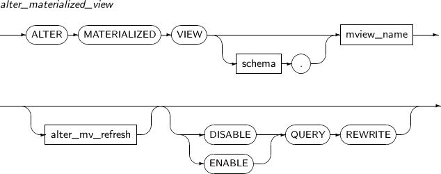 -
특권
-
사용자가 소유한 스키마의 실체화 뷰를 변경하기 위해서는 별다른 특권이 필요하지 않다.
-
다른 사용자가 소유한 스키마의 실체화 뷰를 변경하기 위해서는 ALTER ANY MATERIALIZED 시스템 특권이 있어야 한다.
-
-
구성요소
-
alter_materialized_view
구성요소 설명 alter_mv_refresh 실체화 뷰에 대한 리프레시(Refresh) 방법, 모드, 시간 등을 지정한다.
실체화 뷰가 참조하는 테이블에 변경이 발생하면, 테이블의 현재 데이터를 반영하기 위해 실체화 뷰를 리프레시한다. 이 문장을 이용하여 데이터베이스가 실체화 뷰를 리프레시하는 스케줄, 모드, 방법 등을 조절할 수 있다.
ENABLE 실체화 뷰를 질의 다시 쓰기에 사용될 수 있는 상태로 설정한다. (기본값) DISABLE 실체화 뷰를 질의 다시 쓰기에 사용될 수 없는 상태로 설정한다. QUERY REWRITE 실체화 뷰가 질의 다시 쓰기에 사용될 지의 여부를 설정한다. -
alter_mv_refresh
구성요소 설명 FAST 빠른 리프레시를 수행하려고 할 때 사용한다. COMPLETE 실체화 뷰를 정의하는 질의를 재수행하여 완전 리프레시를 사용한다.
COMPLETE가 명시되면 빠른 리프레시가 가능하더라도 완전 리프레시를 사용한다. (기본값)
FORCE 빠른 리프레시가 가능하면 빠른 리프레시를 수행하고, 그렇지 않으면 완전 리프레시를 수행한다. ON DEMAND 사용자가 DBMS_MVIEW 패키지의 REFRESH 프러시저를 호출하는 경우에만 리프레시를 수행한다. (기본값) ON COMMIT ON COMMIT이 명시된 경우 마스터 테이블에 커밋이 일어날 때마다 리프레시를 수행한다. 하지만, START WITH와 NEXT는 명시할 수 없다.
ON COMMIT과 ON DEMAND는 동시에 명시할 수 없다.
START WITH 처음으로 자동 리프레시가 시작될 날짜형 표현식을 명시한다.
START WITH는 미래의 시간을 나타내는 값이어야 한다.
NEXT 없이 START WITH만을 명시할 경우 데이터베이스는 한 번만 리프레시를 수행한다.
NEXT 자동 리프레시의 간격을 계산하기 위한 날짜형 표현식을 명시한다.
NEXT는 미래의 시간을 나타내는 값이어야 한다.
START WITH 없이 NEXT만 명시한 경우 데이터베이스는 NEXT 표현식을 평가하여 첫 리프레시의 시간을 정한다.
date START WITH와 NEXT에 지정할 날짜형 리터럴을 명시한다. WITH PRIMARY KEY PRIMARY KEY를 사용하여 리프레시를 수행한다. WITH ROWID ROWID를 사용하여 리프레시를 수행한다. NEVER REFRESH 자동 리프레시를 하지 않는다.
-
-
예제
다음은 ALTER MATERIALIZED VIEW를 사용해 실체화 뷰를 변경하는 예이다.
ALTER MATERIALIZED VIEW MV REFRESH START WITH SYSDATE NEXT SYSDATE + 10/1440;
위의 예에서는 START WITH와 NEXT 절을 이용하여 기존의 실체화 뷰를 10분마다 자동으로 리프레시하는 실체화 뷰로 변경하였다. 단위가 날짜이기 때문에 분 단위로 설정하기 위해 1440(24X60 = 1440)으로 나누었다.
지정된 마스터 테이블의 실체화 뷰 로그를 변경한다.
ALTER MATERIALIZED VIEW LOG의 세부 내용은 다음과 같다.
-
문법
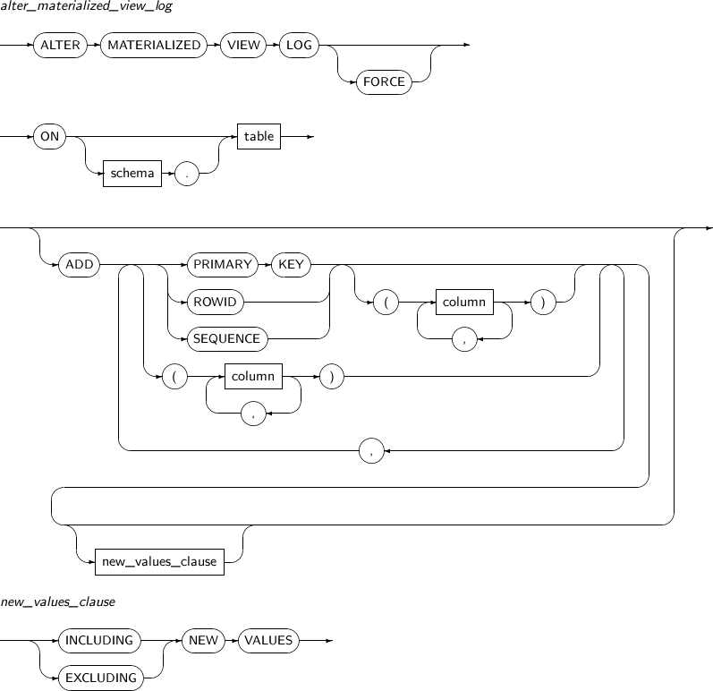 -
특권
다음 중 하나를 만족해야 ALTER MATERIALIZED VIEW LOG 문을 실행할 수 있다.
-
마스터 테이블을 사용자가 소유하고 있어야 한다.
-
마스터 테이블에 SELECT 권한과 ALTER 권한이 모두 있어야 한다.
-
-
구성요소
-
alter_materialized_view_log
구성요소 설명 FORCE 실체화 뷰 로그에 이미 존재하는 속성의 추가를 명시하여도 에러를 발생시키지 않고 존재하지 않는 속성만을 추가한다. schema 변경할 실체화 뷰 로그에 마스터 테이블의 스키마를 명시한다. 생략하면 현재 사용자의 스키마로 인식된다. table 변경할 실체화 뷰 로그의 마스터 테이블의 이름을 명시한다. PRIMARY KEY 실체화 뷰 로그에 마스터 테이블의 변경된 로우의 PRIMARY KEY를 기록한다. ROWID 실체화 뷰 로그에 마스터 테이블의 변경된 로우의 ROWID를 기록한다. SEQUENCE 실체화 뷰 로그에 마스터 테이블의 변경된 로우의 SEQUENCE를 기록한다. column 실체화 뷰 로그에 기록할 마스터 테이블의 컬럼을 지정한다. -
new_values_clause
구성요소 설명 INCLUDING NEW VALUES 실체화 뷰 로그에 컬럼의 변경 전/후의 값을 모두 기록한다. EXCLUDING NEW VALUES 실체화 뷰 로그에 컬럼의 변경 전의 값만을 기록한다. (기본값)
-
-
예제
다음은 ALTER MATERIALIZED VIEW LOG를 사용해 실체화 뷰 로그를 변경하는 예이다.
ALTER MATERIALIZED VIEW LOG FORCE ON DEPT ADD PRIMARY KEY, SEQUENCE (DNAME, LOC) INCLUDING NEW VALUES;
ALTER PACKAGE를 사용해 명시적으로 PACKAGE의 SPECIFICATION과 BODY 또는 둘 다를 재컴파일할 수 있다. 명시적으로 재컴파일을 수행하면 런타임 때 발생할 수 있는 암묵적인 재컴파일을 막을 수 있다. 따라서 오버헤드와 컴파일 에러를 미연에 방지할 수가 있다.
하나의 PACKAGE는 전체가 하나의 단위로 취급되기 때문에, ALTER PACKAGE 문은 PACKAGE 안에 포함된 프러시저나 함수 모두를 재컴파일한다. ALTER PROCEDURE나 ALTER FUNCTION을 사용해 PACKAGE 안에 포함된 PROCEDURE와 FUNCTION을 개별적으로 재컴파일하는 방법은 없다.
부모 객체에 대한 재컴파일과 자식 객체에 대한 무효화에 대한 자세한 내용은 “7.9. ALTER PROCEDURE”를 참고한다.
ALTER PACKAGE의 세부 내용은 다음과 같다.
-
문법
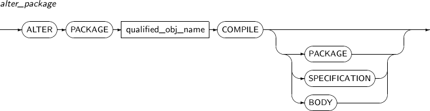 -
특권
PACKAGE가 자신의 스키마에 포함되어 있거나, ALTER ANY PROCEDURE 시스템 특권이 있어야 한다.
-
구성요소
구성요소 설명 qualified_obj_name 재컴파일할 PACKAGE의 이름을 명시한다. PACKAGE 디폴트로 생략할 수 있으며, PACKAGE SPECIFICATION과 PACKAGE BODY가 모두 재컴파일된다.
PACKAGE가 직간접적으로 종속 관계를 맺는 부모 객체를 모두 재귀적으로 검사하여 필요하면 재컴파일을 실행해 유효화 과정을 거친다. PACKAGE에 직간접적으로 종속되는 모든 자식 객체를 무효화한다(PACKAGE BODY는 다른 객체 그리고 명세에 종속된다).
SPECIFICATION 명세(PACKAGE SPECIFICATION)만 재컴파일된다.
PACKAGE SPECIFICATION은 다른 객체에 종속되는 자식 객체가 될 수 없으므로, 오직 명세에 대한 컴파일만 일어난다. PACKAGE SPECIFICATION에 직간접적으로 종속되는 자식 객체를 모두 무효로 한다. PACKAGE BODY 또한 이런 자식 객체에 포함된다. 무효화된 PACKAGE BODY는 다음에 사용될 때 자동으로 재컴파일된다.
BODY PACKAGE BODY이 직간접적으로 종속 관계를 가지는 모든 무효화된 부모 객체를 재컴파일한다. 명세가 무효화되어 있다면 재컴파일된다.
PACKAGE 옵션과 다른 점은 BODY 옵션은 명세가 무효화 상태일 때만 재컴파일이 일어난다는 것이다. 본문에 직간접적으로 종속되는 모든 자식 객체를 무효화한다. BODY 옵션은 PACKAGE BODY를 다시 작성했거나, PACKAGE BODY만 무효화되었을 때 유용하다.
-
예제
다음은 ALTER PACKAGE를 사용해 PACKAGE를 재컴파일하는 예이다.
ALTER PACKAGE tibero.emp_pkg COMPILE;
지정된 tbPSM 프러시저를 재컴파일한다. 일반적으로 SQL 문장에 포함된 tbPSM 프러시저가 유효하지 않으면, SQL 문장을 실행할 때 재컴파일된다.
프러시저의 재컴파일은 DDL에 준하는 작업이 수행되는 것이므로 수행하려고 했던 SQL의 처리 속도에 영향을 줄 수 있다. 또한, 자동으로 재컴파일을 하는 도중에 다른 무효화된 스키마 객체에 의해 컴파일의 수행이 실패할 수도 있다. 이럴 때 SQL 문장의 처리도 당연히 실패한다. 때문에 SQL 문장을 실행할 때 재컴파일이 되는 것을 원하지 않을 수 있다. 이럴 때 DBA나 사용자는 ALTER PROCEDURE 문을 미리 호출하여 무효화된 객체를 다시 유효하게 만들 수 있다.
ALTER PROCEDURE 문을 호출했을 때 재컴파일하는 단계는 다음과 같다.
| 단계 | 설명 |
|---|---|
| 1 | 프러시저가 종속성을 갖는 모든 부모 객체를 찾은 다음 상태가 무효화(INVALID)이면 재컴파일을 시도한다. 각각의 객체는 다시 상태가 유효화(VALID)되어 데이터 사전의 관련 정보가 갱신되고 커밋된다. 부모 객체를 재컴파일하는 과정에서 그 객체의 부모 객체는 각각 재귀적으로 컴파일된다. 이 중 하나라도 실패하면 ALTER PROCEDURE 문의 대상인 객체의 컴파일은 실패한다. |
| 2 | 재컴파일된 모든 객체에 종속되는 자식 객체는 모두 상태가 무효화(INVALID)가 된다. 상태가 무효화된 객체는 다음번에 사용될 때 자동으로 재컴파일 되어 상태가 유효화(VALID)하게 변경될 수 있다. |
| 3 | ALTER PROCEDURE 문장의 대상 객체는 상태의 유효여부에 상관없이 재컴파일되며, 그 자식 객체는 재귀적으로 모두 상태가 무효화(INVALID)가 된다. |
참고
ALTER PROCEDURE 문의 재컴파일 과정과 유효화, 무효화 과정은 ALTER FUNCTION 문과 ALTER PACKAGE 문과 ALTER TYPE 문에서도 동일하게 적용된다.
ALTER PROCEDURE의 세부 내용은 다음과 같다.
-
문법
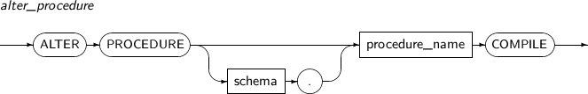 -
특권
사용자가 소유한 프러시저이거나 ALTER ANY PROCEDURE 시스템 특권을 부여받아야 한다.
-
구성요소
구성요소 설명 schema 프러시저가 속해 있는 스키마의 이름을 명시한다. procedure_name 재컴파일을 진행할 프러시저의 이름을 명시한다. -
예제
ALTER PROCEDURE tibero.raise_salary COMPILE;
프로파일의 속성을 변경한다.
참고
프로파일을 생성, 제거하기 위해서는 “7.37. CREATE PROFILE”와 “7.58. DROP PROFILE”의 내용을 참고한다.
ALTER PROFILE의 세부 내용은 다음과 같다.
-
문법
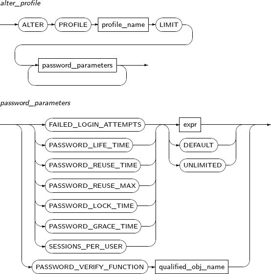 -
특권
ALTER PROFILE 시스템 특권이 있어야 한다.
-
구성요소
구성요소 설명 profile_name 변경할 프로파일의 이름을 명시한다. password_paramenters 변경할 프로파일 속성을 지정한다.
ROLE의 패스워드를 변경한다. ROLE에 포함된 특권 등은 GRANT나 REVOKE를 사용하여 부여하거나 회수하고, ALTER ROLE로는 단순히 ROLE의 패스워드만을 변경한다.
참고
ROLE의 추가와 제거에 대해서는 “7.38. CREATE ROLE”, “7.59. DROP ROLE”을 참고한다.
ALTER ROLE의 세부 내용은 다음과 같다.
-
문법
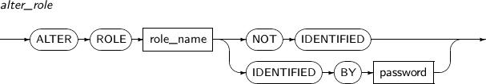 -
특권
-
ALTER ROLE로 ROLE의 패스워드를 변경하는 것은 해당 ROLE을 생성한 사용자이거나, WITH ADMIN OPTION으로 관리 특권을 부여 받은 사용자에 한해 가능하다.
-
ALTER ANY ROLE 시스템 특권이 있는 사용자는 자신이 생성하지도 않고, 관리 특권을 부여받지 않은 ROLE의 패스워드도 변경할 수 있다.
-
-
구성요소
구성요소 설명 role_name 패스워드를 변경할 ROLE의 이름이다. 해당 ROLE은 이미 CREATE ROLE을 통해 만들어져 있어야 한다. NOT IDENTIFIED ROLE의 패스워드를 제거한다. IDENTIFIED BY ROLE의 패스워드를 변경한다. password 변경할 패스워드를 입력한다. -
예제
다음은 ALTER ROLE을 사용해 ROLE의 패스워드를 변경하는 예이다.
SQL> CONN sys/tibero Connected SQL> CREATE ROLE a; Role created. SQL> SELECT role, password_required FROM dba_roles WHERE role='A'; ROLE PAS ------------------------------ --- A NO 1 row selected. SQL> ALTER ROLE a IDENTIFIED BY 'xxx'; Role altered. SQL> SELECT role, password_required FROM dba_roles WHERE role='A'; ROLE PAS ------------------------------ --- A YES 1 row selected. SQL> ALTER ROLE a NOT IDENTIFIED; Role altered. SQL> SELECT role, password_required FROM dba_roles WHERE role='A'; ROLE PAS ------------------------------ --- A NO 1 row selected.위의 예를 보면 우선 CREATE ROLE을 사용하여 패스워드를 지정하지 않고 ROLE을 생성한다. 그 다음 생성된 ROLE을 ALTER ROLE을 사용하여, 패스워드를 'xxx'로 지정했다가 다시 제거하고 있다.
참고
패스워드 사용과 관련된 예는 “7.38. CREATE ROLE”이나 “9.7. SET ROLE”을 참고한다.
Undo segment를 최소 크기 또는 지정한 크기만큼 줄인다. 단, undo segment에 undo retention 시간이 지난 재사용 가능 공간이 없거나 실행 중인 트랜잭션이 많은 경우 해당 undo segment의 공간을 줄이지 못할 수도 있다.
ALTER ROLLBACK SEGMENT의 세부 내용은 다음과 같다.
-
문법
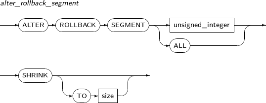 -
특권
ALTER ROLLBACK SEGMENT 시스템 특권이 있어야 한다.
-
구성요소
구성요소 설명 unsigned_integer undo segment 번호를 명시한다. size undo segment의 크기를 지정한다. (단위: byte)
지정된 시퀀스의 정의를 변경한다.
참고
시퀀스의 생성과 제거에 대해서는 “7.39. CREATE SEQUENCE”와 “7.60. DROP SEQUENCE”를 참고한다.
ALTER SEQUENCE의 세부 내용은 다음과 같다.
-
문법
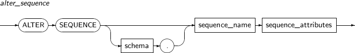 -
특권
시퀀스가 사용자가 소유한 스키마에 있거나, ALTER_ANY_SEQUENCE 시스템 특권을 부여받아야 한다.
-
구성요소
구성요소 설명 schema 생성할 시퀀스를 포함하는 스키마의 이름이다. 생략하면 현재 사용자의 스키마로 인식된다. sequence_name 생성할 시퀀스의 이름이다.
시퀀스의 이름은 VARCHAR 타입으로 저장되고 길이는 최대 30자까지 가능하다. 시퀀스의 이름은 테이블과 같은 네임스페이스를 사용한다. 따라서 스키마의 다른 시퀀스, 테이블, 동의어, PSM의 이름과 중복되어서는 안 된다.
sequence_attributes ALTER SEQUENCE를 사용해 이미 존재하는 시퀀스의 증가값, 최솟값, 최댓값, 저장해 놓은 시퀀스 번호의 개수 등을 변경할 수 있고, 시퀀스의 속성을 변경할 수 있다. 이러한 변경 사항은 앞으로 생성될 시퀀스 번호에만 적용된다.
sequence_attributes에 캐시를 사용하는 경우 ALTER SEQUENCE에 의해 몇 개의 값이 누락될 수 있다. ALTER SEQUENCE를 사용하면 이미 시퀀스 캐시에 존재하던 값을 모두 무효화시켜 버리기 때문이다. START WITH는 변경할 수 없다. 자세한 내용은 “7.39. CREATE SEQUENCE”의 sequence_attributes를 참고한다.
-
예제
다음은 “7.39. CREATE SEQUENCE”의 예제에서 생성한 test_seq라는 시퀀스의 속성을 변경하는 예이다.
SQL> ALTER SEQUENCE test_seq MINVALUE 10 INCREMENT BY 3; Altered. SQL> SELECT test_seq.nextval FROM dual; NEXTVAL ---------- 105 1 row selected. SQL> SELECT test_seq.nextval FROM dual; NEXTVAL ---------- 108 1 row selected.
현재 존재하는 SYNONYM의 상태를 수정할 때 사용한다.
ALTER SYNONYM의 세부 내용은 다음과 같다.
-
문법

-
특권
-
자신의 SCHEMA 내에 있는 SYNONYM에 대해서는 특권이 필요 없으며, 다른 SCHEMA의 SYNONYM을 수정하기 위해서는 CREATE ANY SYNONYM과 DROP ANY SYNONYM 특권이 있어야 한다.
-
PUBLIC SYNONYM을 수정하기 위해서는 CREATGE PUBLIC SYNONYM과 DROP PUBLIC SYNONYM 특권이 있어야 한다.
-
-
구성요소
-
alter_synonym
구성요소 설명 PUBLIC PUBLIC SYNONYM에 대한 수정을 한다. COMPILE SYNONYM을 revalidate 한다. SYNONYM의 target object의 status가 invalid일 경우 해당 object의 recompile 로직을 수행하고, 그 외의 경우에는 SYNONYM의 status는 target object의 status를 그대로 취한다.
-
-
예제
다음은 ALTER SYNONYM COMPILE을 사용하여 SYNONYM을 컴파일하는 예이다.
ALTER SYNONYM SYN_1 COMPILE; ALTER SYNONYM USER2.SYN_2 COMPILE; ALTER PUBLIC SYNONYM SYN_3 COMPILE;
다음은 ALTER PUBLIC SYNONYM COMPILE을 사용했을 때 권한이 없는 경우 에러가 발생하는 예이다.
SQL> ALTER PUBLIC SYNONYM PUB_SYN COMPILE; TBR-17004: Permission denied.
생성된 테이블을 변경한다.
ALTER TABLE의 세부 내용은 다음과 같다.
-
문법
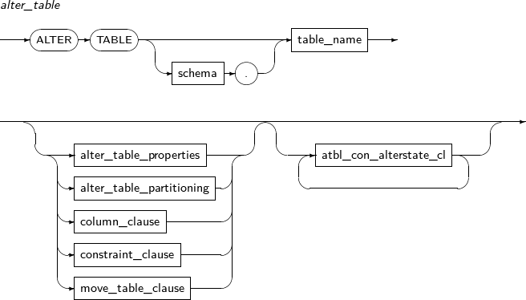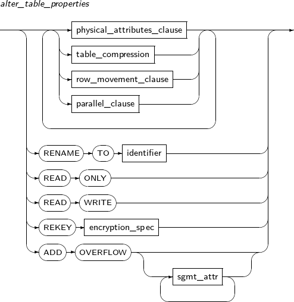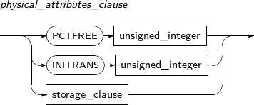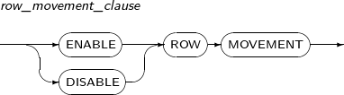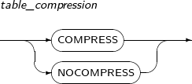 -
특권
사용자가 소유한 스키마의 테이블을 변경하기 위해서는 별다른 특권은 필요하지 않다. 다만, 다른 사용자의 스키마의 테이블을 변경하기 위해서는 ALTER ANY TABLE 시스템 특권이 있어야 한다.
-
구성요소
-
alter_table
구성요소 설명 schema 변경할 테이블이 속해 있는 스키마의 이름을 명시한다. 생략하면 현재 사용자의 스키마로 인식된다. table_name 변경할 테이블의 이름을 명시한다. alter_table_properties PCTFREE, INITRANS, storage_clause 등 물리적인 속성을 변경한다. atbl_con_alterstate_cl 제약조건의 상태를 변경할 때 사용한다. alter_table_partitioning 파티션 테이블에만 사용할 수 있다. 파티션 테이블에 관련된 설명은 “7.41. CREATE TABLE”을 참고한다. column_clause 테이블의 컬럼을 추가, 수정, 제거한다. constraint_clause 테이블의 제약조건을 추가, 수정, 제거한다. move_table_clause 테이블에 대해 물리적인 속성을 새로 지정하여 세그먼트를 생성한 후 기존 테이블을 새 세그먼트로 이동시킨다. -
alter_table_properties
구성요소 설명 physical_attributes_clause PCTFREE, INITRANS, storage_clause 등 물리적인 속성을 변경한다. table_compression 테이블의 압축을 여부를 지정한다. parallel_clause 테이블에 대한 DML을 수행할 때 참조할 기본 DOP(Degree of Parallelism)을 설정한다. RENAME 테이블의 이름을 변경한다. TO identifier 변경할 테이블의 새 이름을 지정한다. READ ONLY 테이블을 READ ONLY 모드로 지정한다. READ WRITE 테이블을 READ WRITE 모드로 지정한다. REKEY encryption_spec REKEY는 데이터베이스가 새로운 암호화 키를 생성하도록 한다.
ALTER TABLE에서 다른 문장과 혼용될 수 없다. 테이블의 모든 암호화된 컬럼이 새로운 키로 암호화되고, encryption_spec에 USING을 사용할 경우 새로운 암호화 알고리즘으로 암호화된다.
ADD OVERFLOW IOT 테이블에 Overflow Segment를 추가한다. -
physical_attributes_clause
구성요소 설명 PCTFREE unsigned_integer 데이터를 디스크 블록에 저장할 때 데이터가 변경되어 크기가 증가할 것에 대비하여 얼마만큼의 영역을 예비로 남겨둘지를 설정하는 값이다.
1 ~ 99 사이의 값을 설정할 수 있으며, 지정하지 않으면 기본값은 10이다. unsigned_integer에 해당 값을 명시한다.
INITRANS unsigned_integer 디스크 블록마다 트랜잭션 엔트리를 위한 공간을 몇 개를 확보할 것인가를 나타낸다. 트랜잭션 엔트리는 블록에 공간이 남아있다면 필요할 때 확장된다. 따라서 미리 큰 값을 설정할 필요는 없다.
최솟값은 1이며, 최댓값은 디스크 블록의 크기에 따라 다르다. 지정하지 않으면 기본값은 2이다. unsigned_integer에 해당 값을 명시한다.
storage_clause 세그먼트의 세부적인 속성을 정의한다. 자세한 내용은 “7.1.5. Storage_clause”를 참고한다. -
table_compression
구성요소 설명 COMPRESS 테이블을 압축한다. NOCOMPRESS 테이블을 압축하지 않는다. -
row_movement_clause
구성요소 설명 ENABLE ROW MOVEMENT 데이터베이스가 ROW를 이동하도록 허용한다. 따라서 ROWID가 변경될 수 있다. DISABLE ROW MOVEMENT 데이터베이스가 ROW를 이동하도록 허용하지 않는다. -
alter_table_partitioning
-
add_table_partition
구성요소 설명 partition_name 추가할 파티션의 이름을 명시한다. range_partition_desc RANGE 파티션의 세부적인 설정을 지정한다. list_partition_desc LIST 파티션의 세부적인 설정을 지정한다. hash_partition_desc HASH 파티션의 세부적인 설정을 지정한다. -
drop_partition_subpart
구성요소 설명 PARTITION 파티션을 제거할 때 명시한다. partition_name 제거할 파티션의 이름을 명시한다. SUBPARTITION 서브 파티션을 제거할 때 명시한다. subpartition_name 제거할 서브 파티션의 이름을 명시한다. UPDATE GLOBAL INDEXES GLOBAL INDEX들을 업데이트한다. INVALIDATE GLOBAL INDEXES GLOBAL INDEX들을 Invalid 상태로 변경한다. UPDATE INDEXES 지정한 INDEX들을 업데이트한다. -
modify_table_partition
구성요소 설명 partition_name 변경할 파티션의 이름을 명시한다. ADD 서브 파티션을 추가한다. (현재 LIST-HASH나 RANGE-HASH와 같이 서브 파티셔닝 방법이 HASH인 경우 지원 안함) range_subpartition_desc RANGE 파티션의 세부적인 설정을 지정한다. list_subpartition_desc LIST 파티션의 세부적인 설정을 지정한다. hash_subpartition_desc HASH 파티션의 세부적인 설정을 지정한다. table_partition_desc 파티션의 물리적인 속성을 지정한다. 문법은 테이블의 속성을 지정할 때와 유사하며, 파티션의 속성을 지정한다는 것만 다르다. -
move_partition_subpart
구성요소 설명 PARTITION 파티션을 이동할 때 명시한다. partition_name 이동할 파티션의 이름을 명시한다. SUBPARTITION 서브 파티션을 이동할 때 명시한다. subpartition_name 이동할 서브 파티션을 명시한다. table_partition_desc 파티션의 물리적인 속성을 지정한다. 지정하는 방법은 테이블의 속성을 지정할 때와 유사하며, 파티션의 속성을 지정한다는 것만 다르다. -
rename_partition_subpart
구성요소 설명 PARTITION partition_name 변경할 대상 파티션의 이름을 명시한다. subpartition_name 변경할 대상 서브 파티션의 이름을 명시한다. TO new_name 변경할 파티션의 새로운 이름을 명시한다. -
split_table_partition
구성요소 설명 partition_name 분할할 파티션의 이름을 명시한다. AT literal RANGE 파티션의 경우 AT을 사용하여 파티셔닝 키의 경계 값을 지정한다. literal에 지정하는 값을 기준으로 파티션이 두 개로 분할된다. INTO range_partition_desc 분할할 파티션의 이름과 속성을 지정한다. VALUES literal LIST 파티션의 경우 VALUES를 사용하여 파티셔닝 키 값을 지정하며, 지정한 값을 포함하는 파티션과 그 이외의 값을 갖는 파티션으로 분할된다. literal에 지정하는 값은 파티션의 기존 키 값으로 존재해야 하며, 기본 파티셔닝 키 값 전부를 지정할 수는 없다. INTO list_partition_desc 분할할 파티션의 이름과 속성을 지정한다. -
split_table_subpartition
구성요소 설명 partition_name 분할할 서브 파티션의 이름을 명시한다. AT literal RANGE 파티션의 경우 AT을 사용하여 파티셔닝 키의 경계 값을 지정한다. literal에 지정하는 값을 기준으로 파티션이 두 개로 분할된다. INTO range_subpartition_desc 분할할 서브 파티션의 이름과 속성을 지정한다. VALUES literal LIST 서브 파티션의 경우 VALUES를 사용하여 파티셔닝 키 값을 지정하며, 지정한 값을 포함하는 서브 파티션과 그 이외의 값을 갖는 서브 파티션으로 분할된다. literal에 지정하는 값은 서브 파티션의 기존 키 값으로 존재해야 하며, 기본 파티셔닝 키 값 전부를 지정할 수는 없다. INTO list_subpartition_desc 분할할 서브 파티션의 이름과 속성을 지정한다. -
exchange_table_partition
구성요소 설명 partition_name 파티션 혹은 서브 파티션의 이름을 명시한다. table_name 파티션과 세그먼트를 교환할 테이블의 이름을 명시한다. INCLUDING INDEXES 로컬 인덱스 파티션 또는 서브 파티션을 해당 테이블 인덱스(파티션되지 않은 테이블의 경우) 또는 로컬 인덱스(해시 파티션된 테이블의 경우)와 교환하도록 하려면 지정한다. EXCLUDING INDEXES 파티션에 해당하는 모든 인덱스 파티션 또는 서브 파티션과 표시할 교환 테이블의 모든 일반 인덱스 및 인덱스 파티션을 원하는지 여부를 지정한다. INCLUDING INDEXES, EXCLUDING INDEXES를 명시하지 않으면 기본으로 EXCLUDING INDEXES로 수행한다. WITH VALIDATION 테이블의 Row들이 파티션 조건, 제약 조건 등에 맞는지 체크를 한 후 맞지 않는다면, 에러를 발생시킨다. WITH VALIDATION, WITHOUT VALIDATION을 명시하지 않으면 기본으로 VALIDATION을 수행한다. WITHOUT VALIDATION 테이블의 Row들이 파티션 조건, 제약 조건등과 맞지 않아도 세그먼트 교환을 수행한다. -
modify_table_default_attrs
구성요소 설명 partition_name 파티션 혹은 서브 파티션의 이름을 명시한다. sgmt_attr sgmt_attr 관련 문법은 “7.1.4. Sgmt_attr”을 참고한다. -
merge_table_partition
구성요소 설명 first_partition_name 합병될 첫 번째 파티션의 이름을 명시한다. second_partition_name 합병될 두 번째 파티션의 이름을 명시한다. range partition의 경우 첫 번째 partition의 바로 다음 파티션이 지정되어야 한다. INTO partition_desc 합병으로 만들어질 파티션의 이름과 속성을 지정한다. -
truncate_table_partition
구성요소 설명 PARTITION partition_name 분할할 파티션의 이름을 명시한다. SUBPARTITION subpartition_name 분할할 서브 파티션의 이름을 명시한다. DROP STORAGE 파티션이 사용하고 있는 공간을 회수한다. 즉, 할당받은 EXTENTS들을 모두 회수한다. 별도로 지정하지 않으면 기본적으로 DROP STORAGE로 동작한다. REUSE STORAGE 파티션이 사용하고 있는 공간을 회수하지 않고, 그대로 사용한다. -
column_clause
구성요소 설명 add_column_clause 테이블에 새로운 컬럼을 추가한다. 이전에 존재하던 다른 로우의 컬럼은 디폴트로 설정한 값이 삽입된다. 만약 디폴트가 설정되어 있지 않으면 NULL 값이 삽입된다.
Inline 제약조건으로 설정하면 이전에 이미 삽입된 컬럼을 대상으로 검증을 하게 되므로, 만족하지 않는 경우 컬럼 추가 자체가 실패할 수도 있다. 만약 LONG 타입의 컬럼이 존재하는 테이블이라면 새로운 컬럼을 추가 할 수 없다.
modify_column_clause 테이블에 이미 존재하는 컬럼의 속성을 변경한다.
데이터 타입, 기본값, Inline 제약조건, Inline 참조 제약조건(Inline Referential Constraint)를 변경한다.
rename_column_clause 컬럼의 이름을 변경한다. drop_column_clause 테이블에 이미 존재하는 컬럼을 제거한다.
컬럼만 제거되는 것이 아니라 제거되는 컬럼과 관련된 인덱스, 트리거, 주석 등도 같이 제거된다.
REKEY encryption_spec REKEY는 데이터베이스가 새로운 암호화 키를 생성하도록 한다.
ALTER TABLE에서 다른 문장과 혼용될 수 없다. 테이블의 모든 암호화된 컬럼이 새로운 키로 암호화되고, encryption_spec에 USING을 사용할 경우 새로운 암호화 알고리즘으로 암호화된다.
-
add_column_clause
구성요소 설명 coldef 컬럼의 데이터 타입과 제약조건 등을 설정한다. coldef 관련 문법은 “7.41. CREATE TABLE”을 참고한다. colprop 컬럼별로 대용량 객체형 데이터 타입이 저장되는 방식을 설정한다. colprop 관련 문법은 “7.41. CREATE TABLE”을 참고한다. -
modify_column_clause
구성요소 설명 datatype 컬럼의 데이터 타입을 변경한다.
NUMBER 타입을 CLOB 타입으로 바꾸는 등의 변경은 허락되지 않는다. NUMBER 타입에서 정밀도나 스케일을 늘리거나, VARCHAR 타입에서 컬럼의 길이를 늘리는 것은 항상 허용된다. 하지만, NUMBER 타입의 정밀도나 스케일을 줄이기 위해서는 해당 컬럼의 데이터가 전부 NULL이거나 값이 없어야 하고, CHAR, VARCHAR 타입의 컬럼의 길이를 줄이기 위해서는 줄이고자 하는 길이보다 더 큰 컬럼 값이 존재하지 않아야 한다.
DEFAULT 컬럼의 기본값을 변경한다. inline_constraint Inline 제약조건을 추가 또는 변경할 수 있다. -
rename_column_clause
구성요소 설명 old_colname RENAME COLUMN은 기존 컬럼의 이름을 변경할 때 사용한다.
old_colname에는 이름을 변경하고 싶은 컬럼의 기존 이름을 명시한다.
TO new_colname new_colname에는 이름을 변경하고 싶은 컬럼의 새로운 이름을 명시한다. -
drop_column_clause
구성요소 설명 column_name 제거할 컬럼의 이름을 명시한다. CONSTRANTS 제약조건이 있는 컬럼을 제거하기 위해서 사용한다. 단, 파티션 테이블에서 파티셔닝 키로 사용되고 있는 컬럼은 제거할 수 없다. INVALIDATE INVALIDATE은 지정하지 않아도 된다. 제거한 컬럼이 있는 테이블과 관련된 뷰, 트리거 등이 자동으로 무효화되기 때문이다. 무효화된 객체는 다음번에 사용될 때 다시 검증된다. -
constraint_clause
구성요소 설명 ADD outofline constraint 새로운 outofline 제약조건을 추가한다. outofline 제약조건과 관련된 문법은 “7.1.1. 제약조건”을 참고한다. RENAME CONSTRAINT 기존 제약조건의 이름을 변경한다. old_name old_name에는 이름을 변경하고 싶은 제약조건의 기존 이름을 명시한다. TO new_name new_name에는 이름을 변경하고 싶은 제약조건의 새로운 이름을 명시한다. MODIFY 기존 제약조건의 상태를 변경한다. DROP 기존의 제약조건을 제거한다. constraint_state constraint_state 등의 관련 문법은 “7.1.1. 제약조건”을 참고한다. PRIMARY KEY 변경되거나 제거될 기본 키를 의미한다. UNIQUE column_name 변경되거나 제거될 유일 키를 의미한다. CONSTRAINT name 변경되거나 제거될 제약조건을 의미한다. CASCADE 다른 테이블이나 같은 테이블의 컬럼으로부터 FOREIGN KEY 제약조건으로 참조되는 기본 키나 유일 키 제약조건을 제거하기 위해서는 반드시 CASCADE를 설정하여 관련된 FOREIGN KEY까지 함께 제거해야만 한다. FOREIGN KEY로 참조되는 상태에서 기본 키나 유일 키만 단독으로 제거할 수는 없다. KEEP INDEX 기본 키, 유일 키, FOREIGN KEY와 같은 인덱스를 사용하는 제약조건을 제거하려 할 때 제약조건만 제거하고 해당 제약조건이 사용했던 인덱스는 그대로 유지하고자 할 때 사용한다. DROP INDEX 기본 키, 유일 키, FOREIGN KEY와 같은 인덱스를 사용하는 제약조건을 제거하려 할 때 인덱스도 함께 제거하기 위해서 사용한다.
KEEP INDEX나 DROP INDEX를 설정하지 않으면, DROP INDEX가 기본값이다.
-
-
예제
-
physical_attributes_clause
다음은 테이블을 생성한 뒤에 PCTFREE와 INITRANS를 사용하는 예이다.
CREATE TABLE atbl_exmp ( col1 NUMBER(10, 5), col2 VARCHAR(10), CONSTRAINT atbl_exm_pri_con PRIMARY KEY(COL1), CONSTRAINT atbl_exm_unq_con UNIQUE (COL2) ); CREATE TABLE atbl_exmp_foreign_key ( col1 REFERENCES atbl_exmp (col1) ); ALTER TABLE atbl_exmp PCTFREE 15 INITRANS 3;다음은 atbl_con_alterstate_cl를 사용하는 예이다.
ALTER TABLE atbl_exmp PCTFREE 10 DISABLE PRIMARY KEY; ALTER TABLE atbl_exmp ENABLE NOVALIDATE PRIMARY KEY;
-
column_clause
다음은 column_clause를 사용하는 예이다.
ALTER TABLE atbl_exmp ADD ( col3 VARCHAR(20), col4 CLOB ) LOB (col4) STORE AS lob_sgmt_100 (DISABLE STORAGE IN ROW) ; ALTER TABLE atbl_exmp RENAME COLUMN col2 TO column2; ALTER TABLE atbl_exmp MODIFY ( col1 NUMBER(15, 7), col3 VARCHAR(15) );위의 예에서는 차례대로 add_column_clause, rename_column_cluase, modify_column_clause를 사용하는 것을 보여준다.
다음은 add_column_clause와 modify_column_clause를 사용하는 예이다.
ALTER TABLE atbl_exmp ADD CONSTRAINT unq_con2 UNIQUE (col1, col3); ALTER TABLE atbl_exmp MODIFY UNIQUE(col1, col3) DISABLE NOVALIDATE; ALTER TABLE atbl_exmp RENAME CONSTRAINT unq_con2 TO atbl_exm_2; ALTER TABLE atbl_exmp DROP PRIMARY KEY CASCADE; ALTER TABLE atbl_exmp DROP CONSTRAINT alter_exm_unq_con KEEP INDEX;
다음은 rename_column_clause를 사용하는 예이다.
ALTER TABLE atbl_exmp RENAME TO atbl_exmp_2;
-
alter_table_partitioning
다음은 alter_table_partitioning을 사용하는 예이다.
CREATE TABLE atbl_part_exmp ( col1 NUMBER, col2 CLOB, col3 NUMBER ) PARTITION BY RANGE (col1, col3) ( PARTITION atbl_part_1 VALUES LESS THAN (30, 40), PARTITION atbl_part_2 VALUES LESS THAN (50, 60) ); ALTER TABLE atbl_part_exmp ADD PARTITION atbl_part_3 VALUES LESS THAN (60, 80); ALTER TABLE atbl_part_exmp DROP PARTITION atbl_part_3; ALTER TABLE atbl_part_exmp MOVE PARTITION atbl_part_2 TABLESPACE ts PCTFREE 14; ALTER TABLE atbl_part_exmp RENAME PARTITION atbl_part_2 TO p2; ALTER TABLE atbl_part_exmp SPLIT PARTITION p2 AT (40, 50) INTO (PARTITION atbl_part_2, PARTITION atbl_part_3);
-
테이블 스페이스 또는 데이터 파일의 특성을 변경한다.
ALTER TABLESPACE의 세부 내용은 다음과 같다.
-
문법
-
특권
SYSDBA 특권이 있어야 한다.
-
구성요소
-
alter_tablespace
구성요소 설명 alter_ts_datafile_clause 테이블 스페이스에 속해 있는 파일의 특성을 변경한다. alter_ts_state_clause 테이블 스페이스의 특성을 변경한다. alter_ts_logging_clause 테이블 스페이스의 logging에 대한 설정을 변경한다. SHRINK SPACE 임시 테이블 스페이스의 임시 파일들의 사용하지 않은 공간을 버려 전체 파일들의 크기를 축소시킨다. 임시 테이블 스페이스(Temporary Tablespace)일 때 사용한다. KEEP을 지정하면 최소 지정한 KEEP 크기 만큼 남기고 전체 파일을 축소시킨다. -
alter_ts_datafile_clause
구성요소 설명 ADD DATAFILE 데이터 파일을 추가할 때 사용한다.
영속 테이블 스페이스(Permanent Tablespace) 또는 Undo 테이블 스페이스일 때 사용한다. 추가할 데이터 파일의 이름을 하나라도 지정하지 않으면, Tibero 시스템이 자동으로 데이터 파일을 생성하여 추가한다.
ADD TEMPFILE 임시 파일을 추가할 때 사용한다.
임시 테이블 스페이스(Temporary Tablespace)일 때 사용한다. 추가할 임시 파일의 이름을 하나도 지정하지 않으면 Tibero 시스템이 자동으로 임시 파일을 생성하여 추가한다.
dfspec 데이터 파일의 이름, 크기 등과 관련된 설정을 할 수 있다. 자세한 내용은 “7.25. CREATE DATABASE”를 참고한다. RENAME DATAFILE 미디어 복구 중 데이터 파일의 경로를 바꾸고자 할 때 사용한다. 영속 테이블 스페이스 또는 Undo 테이블 스페이스일 때 사용한다. RENAME TEMPFILE 미디어 복구 중 임시 파일의 경로를 바꾸고자 할 때 사용한다. 임시 테이블 스페이스일 때 사용한다. DROP DATAFILE 데이터 파일을 삭제할 때 사용한다. 삭제할 파일은 내용이 비어있는 상태여야 한다. SHRINK TEMPFILE 임시 파일의 크기를 축소시킨다. 임시 테이블 스페이스(Temporary Tablespace)일 때 사용한다. [KEEP size]는 축소시킬 수 있는 파일 크기의 하한을 나타낸다. 지정해주지 않으면 0으로 설정된다. -
alter_ts_state_clause
구성요소 설명 BEGIN BACKUP 데이터베이스 운영 중 백업을 시작할 때 사용된다. 자세한 내용은 "Tibero 관리자 안내서"를 참고한다. END BACKUP 데이터베이스 백업을 끝낼 때 사용된다. 자세한 내용은 "Tibero 관리자 안내서"를 참고한다. OFFLINE 테이블 스페이스를 오프라인 상태로 변경한다.
테이블 스페이스가 오프라인 상태가 되면 테이블 스페이스에 속한 세그먼트로의 접근은 모두 차단된다. 또한, 테이블 스페이스가 가진 모든 데이타 파일도 오프라인 상태가 된다.
-
OFFLINE NORMAL: 해당 테이블 스페이스에 체크포인트를 수행한 후 오프라인 상태로 변경한다. 온라인 상태로 다시 전환할 때 복구 과정을 거치지 않는다. NORMAL이나 IMMEDIATE를 지정하지 않으면 NORMAL로 동작한다.
-
OFFLINE IMMEDIATE: NORMAL과 달리 체크포인트를 수행하지 않고 바로 오프라인 상태로 변경하기 때문에 온라인 상태로 전환하기 전에 미디어 복구를 해야 한다.
ONLINE 테이블 스페이스를 온라인 상태로 변경한다.
테이블 스페이스 복구가 필요하면 바로 온라인 상태로 변경할 수 없다. 미디어 복구를 해야만 온라인 상태로 변경할 수 있다.
WAIT 테이블 스페이스 변경을 위한 lock 획득을 기다린다.
테이블 스페이스 변경을 위해서는 테이블 스페이스 lock을 획득해야 한다. 기본 세팅의 경우 현재 다른 작업이 lock을 획득한 상태라면 lock 획득 실패라고 인지하고 DDL 구문 역시 실패 처리된다. WAIT 옵션을 주면 lock을 획득할 때까지 기다린 뒤에 구문을 수행한다.
-
-
alter_ts_logging_clause
구성요소 설명 LOGGING / NOLOGGING 테이블 스페이스 내에 있는 오브젝트들에 대한 logging 설정을 하는 데 사용한다.
-
LOGGING: 오브젝트들에 대한 작업이 redo log로 남는다.
-
NOLOGGING: 오브젝트들에 대한 작업이 redo log로 남지 않는다.
ALTER TABLESPACE로 logging 설정이 변경된 이후의 시점부터 해당 logging에 대한 설정이 적용된다.
FORCE LOGGING / NO FORCE LOGGING -
FORCE LOGGING: 테이블 스페이스 내에 있는 오브젝트들에 대한 작업이 logging이 되며, 기존에 nologging으로 설정이 되어있었어도 logging이 된다.
-
NO FORCE LOGGING: FORCE LOGGING 설정을 제거하는 기능이다. 단, 무조건 LOGGING을 하는 UNDO 테이블 스페이스와 LOGGING을 하지 않는 TEMP 테이블 스페이스에 대해서는 force logging 설정이 불가능하다.
-
-
-
예제
다음은 테이블 스페이스에 데이터 파일을 추가하는 예이다. 본 예제에서는 DBA_TABLESPACES를 통해 테이블 스페이스가 사용하는 데이터 파일의 개수를 알 수 있다.
SQL> SELECT tablespace_name, ts_id, datafile_count FROM dba_tablespaces WHERE tablespace_name = 'T1'; TABLESPACE_NAME TS_ID DATAFILE_C ------------------------------ ---------- ---------- T1 3 1 1 row selected. SQL> ALTER TABLESPACE t1 ADD DATAFILE 'ts2.dbf'; Tablespace altered. SQL> SELECT tablespace_name, ts_id, datafile_count FROM dba_tablespaces WHERE tablespace_name = 'T1'; TABLESPACE_NAME TS_ID DATAFILE_C ------------------------------ ---------- ---------- T1 3 2 1 row selected.
데이터베이스 트리거를 컴파일하거나 트리거의 이름을 바꾼다. 또한, 해당 트리거를 활성화하거나 비활성화한다.
ALTER TRIGGER의 세부 내용은 다음과 같다.
-
문법
-
특권
사용자의 스키마에 포함되어 있거나, 사용자가 ALTER ANY TRIGGER 시스템 특권을 가지고 있을 때에만 실행할 수 있다.
-
구성요소
-
alter_trigger
구성요소 설명 RENAME 트리거의 이름을 변경한다. 변경된 트리거는 이전의 상태를 계속 유지하게 된다. COMPILE 트리거를 명시적으로 재컴파일한다.
명시적으로 재컴파일을 하면 런타임을 수행할 때 발생할 수 있는 암묵적인 재컴파일을 막을 수 있고, 오버헤드와 컴파일 에러를 미리 방지할 수가 있다.
Tibero는 트리거가 참조하는 객체가 무효화된 상태이면 재컴파일을 한 뒤, 트리거를 컴파일한다. 트리거가 성공적으로 컴파일되면 그 트리거는 유효하다.
-
enable_option
구성요소 설명 ENABLE 트리거를 활성화한다. DISABLE 트리거를 비활성화한다.
-
-
예제
다음은 트리거를 비활성화하는 예이다.
ALTER TRIGGER update_emp_sal DISABLE;
ALTER TYPE를 사용해 명시적으로 사용자 정의 타입을 재컴파일할 수 있다.
명시적으로 재컴파일을 수행하면 런타임 때 발생할 수 있는 암묵적인 재컴파일을 막을 수 있다. 따라서 오버헤드와 컴파일 에러를 미연에 방지할 수가 있다. 부모 객체에 대한 재컴파일과 자식 객체에 대한 무효화의 자세한 내용은 “7.9. ALTER PROCEDURE”를 참고한다.
ALTER TYPE의 세부 내용은 다음과 같다.
-
문법
-
특권
사용자가 소유한 사용자 정의 타입이거나, ALTER ANY TYPE 시스템 특권을 부여받아야 한다.
-
구성요소
구성요소 설명 schema 사용자 정의 타입이 속해 있는 스키마의 이름을 명시한다. type_name 재컴파일을 진행할 사용자 타입의 이름을 명시한다. SPECIFICATION/BODY 스펙과 바디 모두를 재컴파일할지 바디만 재컴파일할지를 지정한다.
옵션을 주지 않으면 스펙과 바디 모두를 재컴파일한다.
-
예제
CREATE TYPE tibero.two_dimensional_array AS VARRAY (100) OF one_dimensional_array; / CREATE TYPE tibero.one_dimensional_array AS VARRAY (100) OF NUMBER; / ALTER TYPE tibero.two_dimensional_array COMPILE; CREATE TYPE object_type AS OBJECT(c1 NUMBER, c2 NUMBER, MEMBER procedure print_attribute); / CREATE TYPE BODY object_type AS MEMBER PROCEDURE print_attribute AS BEGIN dbms_output.put_line( 'C1:' || c1 ); dbms_output.put_line( 'C2:' || c2 ); END; END; / ALTER TYPE object_type COMPILE; ALTER TYPE object_type COMPILE SPECIFICATION; ALTER TYPE object_type COMPILE BODY;
사용자의 정보를 변경한다.
참고
사용자를 생성, 제거하기 위해서는 “7.46. CREATE USER”와 “7.67. DROP USER”의 내용을 참고한다.
ALTER USER의 세부 내용은 다음과 같다.
-
문법
-
특권
ALTER USER 시스템 특권이 있어야 한다. 단, 사용자가 자신의 패스워드를 변경할 때는 제외다.
-
구성요소
-
alter_user
구성요소 설명 username 변경할 사용자의 이름이다. 변경할 사용자는 CREATE USER로 미리 만들어져 있어야 한다. alter_user_clause 변경할 사용자의 정보이다.
CREATE USER와는 다르게 생략할 수 없고, 반드시 하나 이상은 있어야 한다.
proxy_user_clause Proxy user를 사용하기 위해 설정하는 정보이다.
CREATE USER 이후에 추가적으로 해당 사용자에 대한 proxy 접근 설증을 원할 때 있어야 한다.
-
alter_user_clause
구성요소 설명 IDENTIFIED BY 사용자의 인증 패스워드를 변경한다. ALTER USER 시스템 특권이 있는 경우에만 다른 사용자의 패스워드를 변경할 수 있다. REPLACE 절은 무시된다. VALUES 'password_hash_value' Hash value로 encrypt된 password로 user의 비밀번호를 변경한다. Sys권한에서만 변경이 가능하다. new_password 변경될 새로운 패스워드를 입력한다. 패스워드는 문자열로 지정하며, 길이는 63bytes까지 가능하다. REPLACE 사용자가 자신의 인증 패스워드를 변경할 때 IDENTIFIED BY와 함께 사용한다. ALTER USER 시스템 특권이 없는 경우라도 자신의 패스워드는 변경할 수 있다. 이 경우에는 REPLACE를 생략할 수 없고, old_password를 기존 패스워드와 비교하여 같은 경우에만 변경을 허용한다. old_password 변경 전의 기존 패스워드를 입력한다. 패스워드는 문자열로 지정하며, 길이는 63bytes까지 가능하다. DEFAULT TABLESPACE 사용자가 사용할 디폴트 테이블 스페이스를 변경한다.
CREATE TABLE을 사용하여 테이블을 생성할 때 테이블 스페이스를 명시하지 않으면 디폴트 테이블 스페이스를 사용하게 된다.
DEFAULT ROLE 사용자가 접속했을 때 사용할 디폴트 역할을 결정한다.
사용할 수 있는 역할은 GRANT를 이용하여 명시적으로 부여받은 역할에 한정된다. 즉, 부여받지 않은 역할이나 다른 역할에 의해 부여된 역할은 사용할 수 없다. 역할에 대한 자세한 내용은 “7.38. CREATE ROLE”, “7.71. GRANT”를 참고한다.
PASSWORD EXPIRE 사용자의 패스워드를 사용기간 만료 상태로 변경한다.
패스워드가 사용기간 만료 상태가 되면 해당 사용자가 다음에 접속했을 때 패스워드 사용기간이 만료되었다는 메시지가 출력되고 패스워드를 변경해야 한다.
ACCOUNT LOCK 사용자를 잠금 상태로 변경한다. 사용자가 잠금 상태로 변경되면 해당 사용자는 데이터베이스를 사용할 수 없다. ACCOUNT UNLOCK 사용자를 잠금 해제 상태로 변경한다. 디폴트 역할을 지정하는 방법은 다음과 같이 3가지가 있다.
번호 옵션 설명 1 role_name 부여받은 역할 중에 디폴트 역할로 지정할 역할을 나열하는 방식이다. 이는 몇 가지 역할만을 사용하고자 할 때 유용하다. 2 ALL (EXCEPT) ALL은 거의 대부분의 역할을 디폴트 역할로 사용하고자 할 때 유용하다. 몇몇 역할을 제외한 나머지 역할 모두를 디폴트 역할로 하고자 한다면, ALL 뒤에 EXCEPT를 사용하여 제외하고자 하는 역할을 명시할 수 있다. 3 NONE NONE은 디폴트 역할을 모두 끄고 필요한 역할만 활성화시켜서 사용하고자 할 때 유용하다. 부여받은 역할 중 디폴트 역할에서 제외된 역할은 SET ROLE 문을 사용하여 동적으로 켜거나 끌 수 있다. 자세한 내용은 “9.7. SET ROLE”을 참고한다. -
tsquota_clause
구성요소 설명 QUOTA size ON tablespace_name 사용자가 사용할 테이블 스페이스의 크기를 지정 값 만큼 제한한다. QUOTA UNLIMITED ON tablespace_name 사용자가 사용할 테이블 스페이스의 크기를 제한하지 않는다. -
proxy_user_clause
구성요소 설명 GRANT 사용자에 proxy 접속 권한을 줄 때 사용한다. 해당 권한을 받은 proxy user에 대해서만 사용자로 접속 가능하다. REVOKE 사용자에 proxy 접속 권한을 철회할 때 사용한다. 해당 권한이 철회된 proxy user는 사용자로 접속이 불가능하게된다. CONNECT THROUGH Proxy 접속 기능을 사용할 때 사용하는 구문이다. CONNECT THROUGH 구문 다음에 나오는 username이 proxy user가 된다.
-
-
예제
다음은 IDENTIFIED BY를 사용해 사용자의 패스워드를 변경하는 예이다.
SQL> CONN sys/tibero Connected. SQL> ALTER USER u1 IDENTIFIED BY 'p1'; User altered. SQL> CONN u1/p1 Connected. SQL> ALTER USER u1 IDENTIFIED BY 'p2'; TBR-7053: Invalid old password. SQL> ALTER USER u1 IDENTIFIED BY 'p2' REPLACE 'p1'; User altered.위의 예에서, 처음에는 ALTER USER 시스템 특권이 있는 사용자이기 때문에, 사용자 u1의 패스워드를 REPLACE 절 없이 변경할 수 있었다. 하지만, 사용자 u1의 경우에는 ALTER USER 시스템 특권이 없기 때문에 자기 자신의 패스워드만 변경할 수 있고, 그 경우에도 REPLACE가 반드시 있어야만 변경할 수 있다.
다음은 DEFAULT TABLESPACE를 사용해 디폴트 테이블 스페이스를 변경하는 예이다.
SQL> SELECT username, default_tablespace FROM dba_users WHERE username='U1'; USERNAME DEFAULT_TABLESPACE ------------------------------ ------------------------------ U1 SYSTEM 1 row selected. SQL> ALTER USER u1 DEFAULT TABLESPACE t1; Altered. SQL> SELECT username, default_tablespace FROM dba_users WHERE username='U1'; USERNAME DEFAULT_TABLESPACE ------------------------------ ------------------------------ U1 T1 1 row selected.다음은 DEFAULT ROLE을 사용해 디폴트 역할을 변경하는 예이다.
SQL> CREATE ROLE a; Role created. SQL> CREATE ROLE b; Role created. SQL> CREATE ROLE c; Role created. SQL> GRANT CREATE SESSION TO a; Granted. SQL> GRANT a TO b; Granted. SQL> GRANT b, c TO u1; Granted. SQL> SELECT grantee, granted_role, default_role FROM dba_role_privs WHERE grantee='U1'; GRANTEE GRANTED_ROLE DEF ------- ------------ --- U1 B YES U1 C YES 2 rows selected. SQL> ALTER USER u1 DEFAULT ROLE a; TBR-7172: cannot enable role 'a' you have not been granted SQL> GRANT a TO u1; granted. SQL> ALTER USER u1 DEFAULT ROLE NONE; User altered. SQL> SELECT grantee, granted_role, default_role FROM dba_role_privs WHERE grantee='U1'; GRANTEE GRANTED_ROLE DEF ------- ------------ --- U1 B NO U1 C NO U1 A NO 3 rows selected. SQL> ALTER USER u1 DEFAULT ROLE ALL EXCEPT a, c; User altered. SQL> SELECT grantee, granted_role, default_role FROM dba_role_privs WHERE grantee='U1'; GRANTEE GRANTED_ROLE DEF ------- ------------ --- U1 B YES U1 C NO U1 A NO 3 rows selected.위의 예를 보면, 처음에 CREATE ROLE 문을 사용하여 A, B, C 이렇게 3개의 역할을 만든다. 그리고 GRANT 문을 사용하여 역할 B에게 역할 A의 특권을 부여한 뒤, 역할 B와 C를 사용자 u1에게 부여한다. 그 상태에서 사용자 U1에게 부여된 역할을 조회한다. 그리고 사용자 u1의 디폴트 역할을 역할 B에 부여된 역할 A로 지정하려 하면 사용자 u1이 역할 A를 직접 부여받은 적이 없기 때문에 에러가 발생하게 된다.
사용자 u1에게 역할 A까지 부여한 뒤 DEFAULT ROLE NONE을 사용해 디폴트 역할을 모두 제거한다. 그리고 다시 사용자 u1에게 부여된 역할을 조회하면 모든 디폴트 역할이 꺼져있음을 확인할 수 있다. 마지막으로 DEFAULT ROLE ALL을 사용해 보유한 역할을 모두 디폴트 역할로 설정한다. EXCEPT를 같이 사용하여 역할 A, C를 제외한 나머지 모든 역할을 디폴트 역할로 지정하고 있다.
다음은 PASSWORD EXPIRE를 사용해 사용자의 패스워드를 만료시키는 예이다.
SQL> ALTER USER u1 PASSWORD EXPIRE; User altered. SQL> CONN u1/p1 TBR-17002 : password expired. New password : *** Retype new password : *** Password changed. Connected.
다음은 ACCOUNT를 사용해 사용자를 잠금 상태와 잠금 해제 상태로 변경하는 예이다.
SQL> ALTER USER u1 ACCOUNT LOCK; User altered. SQL> SELECT username, account_status FROM dba_users WHERE username='U1'; USERNAME ACCOUNT_STATUS ------------------------------ ---------------- U1 LOCKED 1 row selected. SQL> CONN u1/p1; TBR-17006: account is locked. SQL> CONN sys/tibero Connected. SQL> ALTER USER u1 ACCOUNT UNLOCK; User altered. SQL> SELECT username, account_status FROM dba_users WHERE username='U1'; USERNAME ACCOUNT_STATUS ------------------------------ ---------------- U1 OPEN 1 row selected. SQL> CONN U1/p1; Connected.
무효화된 뷰를 다시 컴파일한다. 이 명령어를 사용하기 위하여 자신의 스키마에 포함된 뷰이거나 ALTER ANY TABLE 시스템 특권을 부여 받고 있어야 한다.
ALTER TABLE 명령을 이용하여 테이블을 변경한 경우 그 테이블에 기반한 모든 뷰는 무효화된다. 무효화된 뷰는 SQL 문장 내에서 사용될 때에 자동으로 다시 컴파일된다. ALTER VIEW 명령어는 SQL 문장 내에서 사용되기 전에 미리 다시 컴파일하여 성능 저하를 막고 가능한 문제를 미리 발견하기 위하여 사용한다.
ALTER VIEW의 세부 내용은 다음과 같다.
-
문법
-
특권
ALTER VIEW로 뷰를 갱신하기 위해서는 자기 스키마에 속한 뷰거나 ALTER ANY VIEW 시스템 특권이 필요하다.
-
구성요소
구성요소 설명 schema 다시 컴파일할 뷰를 포함하는 스키마의 이름이다. 만약 생략하면 현재 사용자의 스키마를 가정한다. view_name 뷰의 이름을 설정한다. COMPILE 다시 컴파일하도록 한다. 유효하지 않은 뷰를 다시 유효하게 만들어 주거나, 참조하는 뷰나 테이블의 정의가 바뀌었을 경우 알맞게 뷰의 정의를 변경한다. -
예제
ALTER VIEW tibero.MANAGER COMPILE;
사용자가 시스템 특권 또는 스키마 객체 특권을 사용하는 것을 감사한다. 감사하고 있는 특권을 해제하기 위해서는 “7.72. NOAUDIT”의 내용을 참고한다. 특권에 대한 자세한 내용은 "Tibero 관리자 안내서"를 참고한다.
AUDIT의 세부 내용은 다음과 같다.
-
문법
-
특권
-
시스템 특권을 감사하기 위해서는 AUDIT SYSTEM 시스템 특권을 부여받아야 한다.
-
다른 사용자가 소유한 스키마의 객체 또는 디렉터리 객체를 감사하기 위해서는 AUDIT ANY 시스템 특권을 부여받아야 한다.
-
감사한 내용을 기록하기 위해서는 $TB_SID.tip 파일에
AUDIT_TRAIL파라미터가 NONE이 아닌 다른 옵션으로 설정해야 한다. NONE이 설정되어 있으면, 감사를 하더라도 기록은 하지 않는다. -
SYS 사용자는 기본으로 감사되지 않는다. SYS 사용자를 감사하기 위해서는 $TB_SID.tip 파일의
AUDIT_SYS_OPERATIONS파라미터를 Y로 설정한다. 그러면 SYS 사용자가 수행한 동작이 모두 기록된다.
-
-
구성요소
-
audit
구성요소 설명 audit_operation_clause 시스템 특권을 감사한다. audit_schema_object_clause 특정 객체에 대한 스키마 객체 특권을 감사한다. 감사할 수 있는 객체의 종류는 테이블, 뷰, 시퀀스, 프러시저, 디렉터리 등이다. BY SESSION 감사 대상이 되는 권한을 사용했을 경우 이를 어떻게 기록할 것인지를 지정한다. BY SESSION은 같은 위반을 세션 당 한 번만 기록한다. BY ACCESS BY ACCESS는 같은 위반이라도 매번 기록한다.
$TB_SID.tip 파일의
AUDIT_TRAIL파라미터의 값이 OS이면 BY SESSION은 무시되고 항상 BY ACCESS로 동작한다. 생략하면 기본값은 BY ACCESS이다.WHENEVER SUCCESSFUL 감사 대상이 되는 권한을 사용했을 경우 해당 명령의 성공이나 실패 여부에 따라 어떻게 기록할 것인지를 지정한다. WHENEVER SUCCESSFUL은 명령이 성공했을 때만 기록한다. 지정하지 않으면 성공이나 실패에 관계없이 모두 기록한다. WHENEVER NOT SUCCESSFUL WHENEVER NOT SUCCESSFUL은 명령이 실패했을 때만 기록을 저장한다. -
audit_operation_clause
구성요소 설명 system_privilege 감사할 시스템 특권을 지정한다. 시스템 특권의 종류는 “7.71. GRANT”의 시스템 특권을 참고한다. ALL PRIVILEGES 모든 시스템 특권을 감사한다. BY user_name 감사할 사용자를 지정한다. 지정하지 않으면 모든 사용자에 적용한다. -
audit_schema_object_clause
구성요소 설명 object_privilege 감사할 스키마 객체 특권을 지정한다. 스키마 객체 특권의 종류는 “7.71. GRANT”의 시스템 특권을 참고한다. ALL 해당 객체에 사용할 수 있는 모든 스키마 객체 특권을 감사한다.
대상 객체의 종류에 따라 사용할 수 있는 스키마 객체 특권은 “7.71. GRANT”의 시스템 특권을 참고한다.
ON 스키마 객체 특권을 감사할 대상이 되는 객체를 지정한다. schema 객체가 속해 있는 스키마의 이름을 지정한다. 스키마 이름을 지정하지 않으면, 자신의 스키마 객체에서 해당 이름을 찾는다. object_name 디렉터리가 아닌 객체의 이름을 지정한다. DIRECTORY dir_name 디렉터리 객체의 이름을 지정한다.
-
-
예제
-
audit
다음은 BY SESSION을 사용해 감사 기록 여부를 설정하는 예이다.
SQL> AUDIT delete ON t BY SESSION WHENEVER SUCCESSFUL; Audited.
-
audit_operation_clause
다음은 BY user_name을 사용해 감사할 사용자를 지정하는 예이다.
SQL> AUDIT create table BY tibero; Audited. -
audit_schema_object_clause
다음은 ON을 사용해 스키마 객체 특권을 감사할 대상 객체를 지정하는 예이다.
SQL> AUDIT insert ON t; Audited.
-
테이블, 뷰 또는 이에 속한 특정 컬럼에 주석을 삽입한다.
COMMENT의 세부 내용은 다음과 같다.
-
문법
-
특권
사용자가 소유한 스키마 객체에 COMMENT 문을 실행하는 경우 별다른 특권이 필요하지 않다. 하지만, 다른 사용자에게 속한 스키마 객체라면 COMMENT ANY TABLE 시스템 특권이 필요하다.
-
구성요소
구성요소 설명 TABLE 테이블이나 뷰에 주석을 삽입할 때 사용한다.
삽입된 주석의 내용은 나중에 DBA_TAB_COMMENTS, USER_TAB_COMMENTS, ALL_TAB_COMMENTS 정적 뷰로 확인할 수 있다.
COLUMN 테이블, 뷰에 속한 컬럼에 주석을 삽입하고 싶을 때 사용한다.
삽입한 주석의 내용은 나중에 DBA_COL_COMMENTS, USER_COL_COMMENTS, ALL_COL_COMMENTS 정적 뷰로 확인할 수 있다.
comment_string 주석의 내용이다. 주석은 VARCHAR 타입으로 저장되므로, 최대 4000자까지 입력할 수 있다. -
예제
다음은 COMMENT를 사용해 주석을 삽입하는 예이다.
SQL> CREATE TABLE t1 (col1 NUMBER, col2 NUMBER); Table created. SQL> COMMENT ON TABLE t1 IS '이것은 예제 테이블이다.'; Commented. SQL> SELECT * FROM user_tab_comments WHERE table_name = 'T1'; TABLE_NAME TABLE_TYP COMMENTS ------------------------------ --------- ------------------------- T1 TABLE 이것은 예제 테이블이다. 1 row selected. SQL> COMMENT ON COLUMN t1.col1 IS '이것은 첫 번째 컬럼이다.'; Commented. SQL> SELECT * FROM user_col_comments WHERE table_name = 'T1'; TABLE_NAME COLUMN_NAME COMMENTS ------------------------------ ---------------------- ------------------------- T1 COL1 이것은 첫 번째 컬럼이다. 1 row selected.
문맥 네임스페이스를 생성(혹은 수정)하고 해당 네임스페이스의 문맥을 조작할 수 있는 패키지를 지정한다. 지정된 패키지에서 DBMS_SESSION.SET_CONTEXT 프로시져를 사용해 해당 네임스페이스의 속성 값들을 설정할 수 있다.
CREATE CONTEXT의 세부 내용은 다음과 같다.
-
문법
-
특권
문맥 네임스페이스를 생성하기 위해서는 CREATE ANY CONTEXT 시스템 특권이 있어야만 한다.
-
구성요소
-
create_context_clause
구성요소 설명 namespace 생성(하거나 수정)할 문맥 네임스페이스의 이름을 명시한다. schema 문맥을 조작할 패키지의 스키마를 명시한다. 스키마를 생략하면 현재 스키마를 가정한다. package_name 문맥을 조작할 패키지의 이름을 명시한다. 패키지가 현재 존재하지 않더라도 해당 DDL 은 정상 수행된다. ACCESSED GLOBALLY 이것을 명시하면 데이터베이스 인스턴스가 살아 있는 한 모든 세션에서 해당 문맥에 접근하여 내용을 읽을 수가 있다.
-
-
예제
다음은 CREATE CONTEXT를 사용해 문맥을 생성하는 예이다. 보안 정책을 구현한 패키지는 pol_pkg 이며, 문맥 네임스페이스의 이름은 sec_ctx 이다.
CREATE CONTEXT sec_ctx USING pol_pkg;
기존에 존재하는 데이터 파일과 로그 파일의 정보를 바탕으로 컨트롤 파일을 새로 생성한다. 최대 데이터 파일의 개수를 변경하는 경우나 컨트롤 파일이 손상된 경우에 사용하며, NOMOUNT 모드에서만 사용할 수 있다. 일반적으로 ALTER DATABASE BACKUP CONTROLFILE TO TRACE를 이용하여 컨트롤 파일의 생성문을 백업한다.
CREATE CONTROLFILE의 세부 내용은 다음과 같다.
-
문법
-
특권
Tibero를 NOMOUNT 모드로 기동하면, SYS 사용자만 CREATE CONTROLFILE 문을 실행할 수 있다.
-
구성요소
-
create_controlfile
구성요소 설명 REUSE 기존에 존재하는 컨트롤 파일에 덮어쓰고자 할 경우에 사용한다. DATABASE 컨트롤 파일을 생성하고자 하는 대상 데이터베이스를 명시한다. database_name 대상 데이터베이스의 이름을 명시한다. create_ctrlf_clasuse 컨트롤 파일의 다양한 속성을 설정한다. -
create_ctrlf_clasuse
구성요소 설명 LOGFILE 온라인 로그 파일을 지정한다.
온라인 로그 파일은 두 개 이상의 로그 그룹을 정의하고, 그룹별로 하나 이상의 멤버를 지정해야 한다.
log_member_clause 로그 그룹에 번호를 지정할 수 있다. 지정하지 않으면 0부터 차례대로 지정된다. RESETLOGS RESETLOGS를 명시하면 기존 로그 파일을 무시하고 로그를 초기화한다.
RESETLOGS를 명시하지 않으면 NORESETLOGS로 간주한다.
NORESETLOGS NORESETLOGS를 명시하면 기존의 유효한 로그 파일을 계속 사용한다.
로그 파일이 반드시 존재해야 하고, 계속 사용하는 Redo 로그 파일이어야 한다.
MAXDATAFILES 데이터베이스에서 사용할 최대 데이터 파일의 개수를 제한한다.
MAXDATAFILES에 지정된 값만큼 컨트롤 파일에 데이터 파일의 공간을 만든다. 따라서 MAXDATAFILES의 값을 초과하는 데이터 파일의 개수를 정의할 수 없다. MAXDATAFILES의 값을 변경하려면 컨트롤 파일을 재생성해야 한다.
MAXDATAFILES의 값이 클수록 많은 메모리가 요구되므로, 이 점을 고려해서 값을 설정해야 한다. (기본값: 100, 최솟값: 10, 최댓값: 65533)
MAXLOGGROUPS 로그 그룹의 최댓값을 제한한다. 컨트롤 파일에 로그 그룹을 위한 공간을 확보하기 위해 필요한 값이다.
MAXLOGGROUPS의 값을 변경하려면 컨트롤 파일을 재생성해야 한다.
(기본값: 255, 최댓값: 255)
MAXLOGFILES MAXLOGGROUPS과 같은 의미이며, 사용자의 편의를 위해 제공된다.
MAXLOGGROUPS와 MAXLOGFILES 중 하나만 사용해야 한다.
MAXLOGMEMBERS 로그 그룹 내의 로그 파일의 최대 개수를 제한한다. (기본값: 8, 최댓값: 8)
MAXLOGMEMBERS의 값을 변경하려면 컨트롤 파일을 재생성해야 한다.
MAXARCHIVELOG 컨트롤 파일에 기록될 수 있는 최대 아카이브 로그의 갯수를 지정한다.
이 갯수를 넘어가는 아카이브 로그 파일이 생성되면 가장 오래된 아카이브 로그의 기록부터 덮어쓴다. (기본값: 500, 최댓값: 64000)
MAXBACKUPSET 컨트롤 파일에 기록될 수 있는 최대 백업셋의 갯수를 지정한다.
MAXBACKUPSET의 값을 변경하려면 컨트롤 파일을 재생성해야 한다.
(기본값: 500, 최댓값: 5000)
MAXLOGHISTORY 컨트롤 파일에 기록될 수 있는 로그 파일 스위치 내역의 최대 갯수를 지정한다. 이 이상으로 로그 파일 스위치가 발생되면 가장 오래된 기록부터 덮어쓴다. (기본값: 500, 최댓값: 64000) ARCHIVELOG ARCHIVELOG 모드로 설정한다.
로그 그룹은 순환적으로 재사용된다. 로그 그룹이 한 번 사용되고 나서 재사용되기 전에 시스템에 의해 아카이브될 수 있다.
NOARCHIVELOG NOARCHIVELOG 모드로 설정한다.
-
-
예제
다음은 CREATE CONTROLFILE을 사용해 컨트롤 파일을 생성하는 예이다.
CREATE CONTROLFILE REUSE DATABASE "t7db" LOGFILE GROUP 0 ( '/disk2/log101.log', '/disk3/log102.log' ) SIZE 1M, GROUP 1 ( '/disk1/log103.log', '/disk2/log104.log', '/disk3/log105.log' ) SIZE 2M NORESETLOGS DATAFILE '/disk1/system01.dbf', '/disk2/undo004.dbf' ARCHIVELOG MAXLOGFILES 30 MAXLOGMEMBERS 8 MAXARCHIVELOG 500 MAXBACKUPSET 500 MAXDATAFILES 200;
데이터베이스를 생성한다.
CREATE DATABASE의 세부 내용은 다음과 같다.
-
문법
-
특권
Tibero를 NOMOUNT 모드로 기동하면, SYS 사용자만 CREATE DATABASE 문을 실행할 수 있다.
-
구성요소
-
create_database
구성요소 설명 database_name $TB_SID.tip 파일의
DB_NAME파라미터 값과 같아야 하며 생략할 수 있다.$TB_SID.tip 파일에 지정된 컨트롤 파일이 이미 존재하면 에러가 발생한다.
지정하지 않으면, 기본값은 환경설정 파일의 TB_SID와 동일하다.
create_database_clause 새로운 데이터베이스를 생성할 때 사용한다. NOMOUNT 모드에서만 사용할 수 있다. -
create_database_clause
구성요소 설명 USER SYS IDENTIFIED BY SYS 사용자의 패스워드를 설정하는 데 사용된다. (기본값: tibero)
설정된 패스워드는 ALTER USER 문을 통해 변경할 수 있다. 자세한 내용은 “7.19. ALTER USER”를 참고한다.
MAXDATAFILES 데이터베이스에서 사용할 최대 데이터 파일의 개수를 제한한다.
MAXDATAFILES에 지정된 값만큼 컨트롤 파일에 데이터 파일의 공간을 만든다. 따라서 MAXDATAFILES의 값을 초과하는 데이터 파일의 개수를 정의할 수 없다. MAXDATAFILES의 값을 변경하려면 컨트롤 파일을 재생성해야 한다. MAXDATAFILES의 값이 클수록 많은 메모리가 요구되므로, 이점을 고려해서 값을 설정해야 한다. (기본값: 100, 최솟값: 10, 최댓값: 65533)
CHARACTER SET 데이터베이스에 디폴트로 사용할 문자 집합을 지정할 수 있다.
지정할 수 있는 문자 집합은 다음과 같다.
-
ASCII: ASCII 7-bit 영어
-
EUCKR: EUC 16-bit 한국어
-
MSWIN949: MS Windows 코드 페이지 949 한국어 (기본값)
-
UTF8: 24-bit 국제 표준 다국어
-
SJIS: Shift-JIS 16-bit 일본어
-
JA16SJIS: MS Windows 코드 페이지 932 일본어
-
JA16SJISTILDE: 전각물결문자를 포함하는 MS Windows 코드 페이지 932 일본어
-
JA16EUC: EUC 24-bit 일본어
-
JA16EUCTILDE: 전각물결문자를 포함하는 EUC 24-bit 일본어
-
VN8VN3: VN3 8-bit 베트남어
-
GBK: MS Windows 코드 페이지 936 중국어
-
WE8MSWIN1252: MS Windows 코드 페이지 1252 서유럽어
-
EL8MSWIN1253: MS Windows 코드 페이지 1253 그리스어
-
AR8MSWIN1256: MS Windows 코드 페이지 1256 아랍어
-
ZHT16HKSCS: HKSCS2001 홍콩어와 MS Windows 코드 페이지 950 중국어
-
WE8ISO8859P1: ISO8859-1 서유럽어
-
EE8ISO8859P2: ISO8859-2 동유럽어
-
AR8ISO8859P6: ISO8859-6 아랍어
-
EL8ISO8859P7: ISO8859-7 그리스어
-
WE8ISO8859P9: ISO8859-9 서유럽어(터키어)
-
WE8ISO8859P15: ISO8859-15 서유럽어
-
CL8MSWIN1251: MS Windows 코드 페이지 1251 키릴문자(러시아어, 불가리아어)
-
CL8KOI8R: KOI8-R 키릴문자(러시아어, 불가리아어)
-
CL8ISO8859P5: ISO8859-5 키릴문자(러시아어, 불가리아어)
-
EUCTW: EUC 중국어 번체
-
GB18030: 중국 정부 표준 중국어
-
IW8ISO8859P8: ISO 8859-8 라틴어, 히브리어
-
RU8PC866: IBM-PC 코드 페이지 866 8-bit 키릴문자 (러시아어)
-
SJISTILDE: 전각물결문자를 포함하는 SHIFT-JIS 16-bit 일본어
-
TH8TISASCII: 태국 산업 표준 620-2533-ASCII 8-bit 태국어
-
UTF16: 16/32-bit 가변 길이 국제 표준 다국어
-
ZHT16BIG5: BIG5 16-bit 중국어
-
ZHT16MSWIN950: MS Windows 코드 페이지 950 중국어
NATIONAL CHARACTER SET NCHAR, NCLOB, NVARCHAR2로 정의된 컬럼을 저장할 때 사용할 국가별 문자 집합을 지정한다. 지정할 수 있는 문자 집합에는 UTF8, UTF16 등이 있다.
- UTF16: 16-bit 국제 표준 다국어 (기본값)
DATAFILE 시스템 테이블 스페이스의 데이터 파일을 정의한다. 하나 이상의 데이터 파일이 정의되어야 한다.
지정하지 않으면 '$TB_HOME/instance/$TB_SID/database/system001.dbf' 파일 하나가 테이블 스페이스에 추가된다.
'system001.dbf' 파일이 이미 존재하는 경우 'system002.dbf, system003.dbf, ...' 순으로 존재하지 않는 파일의 이름으로 생성된다($TB_HOME, $TB_SID는 각각 환경변수 TB_HOME, TB_SID이다).
DEFAULT TABLESPACE 사용자의 디폴트 테이블 스페이스를 정의할 때 지정한다.
지정하지 않으면 일반 사용자도 SYSTEM 테이블 스페이스를 디폴트 테이블 스페이스로 사용한다.
DEFAULT TEMPORARY 디폴트 임시 테이블 스페이스를 정의한다.
지정하지 않으면 'TEMP'라는 이름의 테이블 스페이스가 생성되고, '$TB_HOME/instance/$TB_SID/database/temp001.dbf' 파일이 추가된다.
'temp001.dbf' 파일이 이미 존재할 경우 'temp002.dbf, temp003.dbf, ...' 순으로 존재하지 않는 파일의 이름으로 생성된다.
UNDO TABLESPACE Undo 테이블 스페이스를 정의한다. Undo 테이블 스페이스는 반드시 정의되어야 하며 하나만 정의할 수 있다.
지정하지 않으면 'UNDO'라는 이름의 테이블 스페이스가 생성되고, '$TB_HOME/instance/$TB_SID/database/undo001.dbf' 파일이 추가된다.
'undo001.dbf ' 파일이 이미 존재할 경우 'undo002.dbf, undo003.dbf, ...' 순으로 존재하지 않는 파일의 이름으로 생성된다.
-
-
create_database_logging_clause
구성요소 설명 LOGFILE 온라인 로그 파일을 지정한다.
온라인 로그 파일은 두 개 이상의 로그 그룹을 정의하고, 그룹별로 하나 이상의 멤버를 지정해야 한다.
MAXLOGGROUPS 로그 그룹의 최댓값을 제한한다.
컨트롤 파일의 로그 그룹을 위한 공간을 확보하기 위해 필요한 값이다. 해당 항목의 값을 변경하기 위해서는 컨트롤 파일을 재생성해야 한다.
(기본값: 255, 최댓값: 255) (LOGGROUP_CNTMAX_PER_DATABASE)
MAXLOGFILES MAXLOGGROUPS과 같은 의미이며, 사용자의 편의를 위해 제공된다.
MAXLOGGROUPS과 MAXLOGFILES 중 하나만 사용해야 한다.
MAXLOGMEMBERS 로그 그룹 내의 로그 파일의 최대 개수를 제한한다. 해당 항목의 값을 변경하려면 컨트롤 파일을 재생성해야 한다.
(기본값: 8, 최댓값: 8) (LOGMEMBER_CNTMAX_PER_LGGGROUP)
ARCHIVELOG ARCHIVELOG 모드로 설정한다.
로그 그룹은 순환적으로 재사용된다. 로그 그룹이 한 번 사용되고 나서 재사용되기 전에 시스템에 의해 아카이브 될 수 있다.
MAXARCHIVELOG 컨트롤 파일에 기록될 수 있는 최대 아카이브 로그의 갯수를 지정한다. 이 갯수를 넘어가는 아카이브 로그 파일이 생성되면 가장 오래된 아카이브 로그의 기록부터 덮어쓰게 된다. (기본값: 500, 최댓값: 64000) MAXBACKUPSET 컨트롤 파일에 기록될 수 있는 최대 백업셋의 갯수를 지정한다. MAXBACKUPSET의 값을 변경하려면 컨트롤 파일을 재생성해야 한다. (기본값: 500, 최댓값: 5000) MAXLOGHISTORY 컨트롤 파일에 기록될 수 있는 로그 파일 스위치 내역의 최대 갯수를 지정한다. 이 이상으로 로그 파일 스위치가 발생되면 가장 오래된 기록부터 덮어쓰게 된다.
(기본값: 500, 최댓값: 64000)
NOARCHIVELOG NOARCHIVELOG 모드로 설정한다. -
dfspec
구성요소 설명 filename filename은 절대경로와 상대경로로 지정할 수 있다.
상대경로는 '$TB_HOME/database/$TB_SID/'로 지정된다.
SIZE byte 단위로 파일 크기를 정의한다. M(megabyte), K(kilobyte), G(gigabyte) 등의 기호를 사용하여 보다 큰 크기의 파일을 쉽게 정의할 수 있다. REUSE 기존의 파일이 있을 때 덮어쓸지의 여부를 지정한다.
REUSE가 없으면 같은 이름의 파일이 존재하면 에러가 발생한다.
autoextend_clause 저장할 데이터가 파일 크기를 초과할 경우 파일 크기의 확장 여부를 결정한다. -
tablespace_spec_clause
구성요소 설명 tablespace_name 테이블 스페이스의 이름을 지정한다. dfspec 파일의 이름, 파일의 크기 등과 관련된 여러 가지 설정을 할 수 있다. 자세한 내용은 'dfspec' 항목 설명을 참고한다. extspec_clause 테이블 스페이스의 익스텐트가 어떻게 관리될 것인지 명시한다. -
autoextend_clause
구성요소 설명 AUTOEXTEND OFF 저장할 데이터가 파일 크기를 초과할 경우 더는 저장하지 못하도록 한다. 이러한 경우 ALTER DATABASE의 RESIZE를 통해 수동으로 파일 크기를 늘려주거나 해당 테이블 스페이스에 파일을 추가하여 해결할 수 있다.
테이블 스페이스에 파일을 추가하는 방법은 “7.2. ALTER DATABASE”를 참고한다.
AUTOEXTEND ON 저장할 데이터가 파일 크기를 초과할 경우 자동으로 파일을 늘려준다. NEXT 파일의 크기를 확장할 때 늘어나는 크기를 지정할 수 있다. 너무 작은 값을 지정하면 파일 확장이 빈번히 일어나고, 너무 큰 값을 지정하면 저장 공간을 낭비할 수 있으므로 이를 주의한다. MAXSIZE 파일 크기의 최댓값을 지정할 수 있다. -
log_member_clause
구성요소 설명 GROUP 로그 그룹의 번호를 지정할 수 있다. 지정하지 않으면 0부터 차례대로 지정된다. REUSE 기존에 존재하는 파일에 덮어쓰고자 할 경우에 사용한다.
-
-
예제
다음은 CREATE DATABASE를 사용해 데이터베이스를 생성하는 예이다.
create database "tibero" user sys identified by tibero maxinstances 8 maxdatafiles 100 character set MSWIN949 national character set UTF16 logfile group 1 'log001.log' size 100M, group 2 'log002.log' size 100M, group 3 'log003.log' size 100M maxloggroups 255 maxlogmembers 8 maxarchivelog 500 maxbackupset 500 noarchivelog datafile 'system001.dtf' size 100M autoextend on next 100M maxsize unlimited default temporary tablespace TEMP tempfile 'temp001.dtf' size 100M autoextend on next 100M maxsize unlimited extent management local autoallocate undo tablespace UNDO datafile 'undo001.dtf' size 100M autoextend on next 100M maxsize unlimited extent management local autoallocate;
데이터베이스 링크를 생성한다. 데이터베이스 링크는 다른 데이터베이스의 객체에 접근할 수 있도록 해준다. 객체의 이름 뒤에 '@ 데이터베이스 링크 이름'을 붙여줌으로써 가능하다.
접근할 데이터베이스는 반드시 Tibero일 필요는 없다. 기능의 제약이 있기는 하지만, 다른 종류의 데이터베이스의 객체에 접근할 수 있다. 데이터베이스를 생성하고 나면, 테이블, 뷰 등과 같은 연결된 데이터베이스의 객체에 접근하여 DML 문을 수행할 수 있다.
참고
데이터베이스 링크에 대한 자세한 내용은 "Tibero 관리자 안내서"를 참고한다.
CREATE DATABASE LINK의 세부 내용은 다음과 같다.
-
문법
-
특권
-
사용자가 자신만 사용할 수 있는 데이터베이스 링크를 생성하기 위해서는 CREATE DATABASE LINK 시스템 특권이 있어야 한다.
-
공유 데이터베이스 링크를 생성하기 위해서는 CREATE PUBLIC DATABASE LINK 시스템 특권이 있어야 한다.
-
원격 데이터베이스 링크를 생성하기 위해서는 CREATE SESSION 시스템 특권이 있어야 한다.
-
-
구성요소
구성요소 설명 PUBLIC 모든 사용자가 사용할 수 있는 공유 데이터베이스 링크를 생성하기 위해 사용한다. 생략하면 생성한 사용자만이 사용할 수 있는 데이터베이스 링크가 생성된다. dblink_name 생성할 데이터베이스 링크의 이름이다.
데이터베이스 링크의 이름을 지정할 때 스키마를 지정할 수 없다. 즉, 다른 사용자의 스키마에 데이터베이스 링크를 생성할 수 없다. 데이터베이스 링크에서는 점(.) 기호도 이름에 포함되는 문자로 인식한다.
공유 데이터베이스 링크가 아니면 생성한 사용자 이외의 다른 사용자는 그 데이터베이스 링크를 사용할 수 없다. 여러 사용자가 데이터베이스 링크를 사용하기 위해서는 반드시 공유 데이터베이스 링크로 생성해야 한다.
CONNECT TO user_name IDENTIFIED BY password 데이터베이스 링크를 통해 원격 데이터베이스에 접속할 때 필요한 사용자의 이름과 패스워드를 설정한다. CONNECT TO를 생략하면 현재 접속한 사용자의 이름과 패스워드로 설정된다.
원격 데이터베이스에 접속하기 위해서는 user_name과 password에 지정한 사용자의 이름과 패스워드, 그리고 원격 데이터베이스에 사용자가 생성되어 있어야 한다.
이때, 패스워드는 기호(작은따옴표) 사이에 패스워드가 입력된 경우에만 유효하다. 예를 들어 아래 예제에서 "tmax"로 패스워드가 입력된 경우에는 데이터베이스 링크 생성에 실패하게 된다.
USING connect_string 원격 데이터베이스의 서비스의 이름을 리터럴 형태로 지정한다.
서비스는 tbdsn.tbr 파일에 지정해야 한다. 이 파일에는 서비스 이름, HOST, 포트 번호, 데이터베이스의 이름 등을 설정할 수 있다. tbdsn.tbr 파일에 지정된 서비스의 이름을 connect_string과 동일하게 입력해야 정상으로 연결할 수 있다.
USING connect_string2 tbdsn.tbr 파일을 통하지 않고 직접 connection에 필요한 정보를 string형태로 USING 절에 기입하여 데이터베이스 링크를 생성할 수 있다.
connect_string2에는 HOST, 포트 번호, 데이터베이스 이름 등을 tbdsn .tbr에 적는 형식으로 구성한다. 이 경우 connect_string의 최대 길이는 128byte로 제한된다.
-
예제
다음은 CREATE DATABASE LINK를 사용해 데이터베이스 링크를 생성하는 예이다.
CREATE DATABASE LINK remote USING 'remote_tibero'; CREATE PUBLIC DATABASE LINK public_remote CONNECT TO tibero IDENTIFIED BY 'tmax' USING 'remote_tibero'; CREATE DATABASE LINK remote_string CONNECT TO tibero IDENTIFIED BY 'tmax' USING '(INSTANCE=(HOST=localhost)(PORT=9999)(DB_NAME=tibero))';
디렉터리 객체를 생성한다. 디렉터리를 제거하기 위해서는 “7.49. DROP DIRECTORY”의 내용을 참고한다.
CREATE DIRECTORY의 세부 내용은 다음과 같다.
-
문법
-
특권
-
디렉터리를 생성하기 위해서는 CREATE ANY DIRECTORY 시스템 특권이 있어야 한다.
-
디렉터리를 생성하면 그 디렉터리에 읽기와 쓰기 권한이 자동으로 부여되며, 다른 사용자 또는 역할에 권한을 부여할 수 있다.
-
-
구성요소
구성요소 설명 OR REPLACE 생성할 디렉터리의 이름이 기존 디렉터리와 동일하면 기존 디렉터리를 제거하고 새로 만든다. 기존의 디렉터리를 삭제한 뒤 다시 생성하는 것과의 차이는 대상 디렉터리에 관련된 기존의 특권과 참조가 그대로 유지된다는 점이다. dir_name 생성할 디렉터리 객체의 이름이다. AS dir_path_string 디렉터리 객체가 가리키는 디렉터리 경로를 지정한다.
지정한 디렉터리 경로의 존재 여부나 접근 권한에 대한 검사는 하지 않는다.
잘못된 경로를 지정하면 외부 테이블 등에서 이 디렉터리를 접근하면 에러가 발생한다. 디렉터리 경로는 문자열 리터럴로 표현하며, 대소문자를 구분한다.
-
예제
다음은 CREATE DIRECTORY를 사용해 '/tmp' 경로를 가리키는 tmp라는 디렉터리 객체를 생성하는 예이다.
SQL> CREATE DIRECTORY tmp AS '/tmp'; Directory created.
디스크스페이스를 생성한다.
CREATE DISKSPACE의 세부 내용은 다음과 같다.
-
문법
-
구성요소
-
create_diskspace
구성요소 설명 diskspace_name 생성할 디스크스페이스의 이름을 명시한다. REDUNDANCY 디스크스페이스에 저장되는 사용자 파일의 중복 레벨을 지정한다. 중복 레벨이 높을수록 데이터 유실 위험이 줄어드는 대신 디스크 공간 사용과 디스크 쓰기에 대한 부하가 증가한다.
다음 3가지 중복 레벨 중 하나를 사용할 수 있다.
-
HIGH: 디스크스페이스의 모든 파일을 서로 다른 세 개의 failgroup에 중복해서 저장한다. 세 개 이상의 failgroup이 있는 경우에만 지정할 수 있으며, 최대 두 개의 failgroup에 장애가 발생하더라도 정상적인 서비스가 가능하다.
-
NORMAL: 디스크스페이스의 모든 파일을 서로 다른 두 개의 failgroup에 중복해서 저장한다. 두 개 이상의 failgroup이 있는 경우에만 지정할 수 있으며, 하나의 failgroup에 장애가 발생하더라도 정상적인 서비스가 가능하다. 중복 레벨이 지정되지 않은 경우의 기본값이다.
-
EXTERNAL: 중복 저장 기능을 사용하지 않는다. 디스크 자체의 중복 저장 기능을 사용하거나, 디스크 장애로 인한 데이터 유실을 감수할 수 있는 경우 선택한다.
FAILGROUP failgroup_name 디스크가 속할 failgroup 이름을 명시한다.
디스크스페이스의 중복 레벨이 NORMAL 또는 HIGH인 경우에만 유효하며, 알파벳과 숫자 등으로 최대 48자를 사용할 수 있다.
명시하지 않은 경우에는 모든 디스크가 각각 하나의 failgroup으로 구성되며 디스크 이름이 failgroup 이름으로 사용된다.
DISK qualified_disk_clause 디스크스페이스를 구성할 디스크를 정의한다. ATTRIBUTE 디스크스페이스의 속성을 지정한다. 지정할 수 있는 속성은 다음과 같다.
-
AU_SIZE: 디스크스페이스의 공간 할당 단위를 byte로 지정한다. (기본값: 1MB)
-
SECTOR_SIZE: 디스크스페이스를 구성하는 디스크들의 섹터 사이즈를 지정한다. (기본값: 512)
-
-
qualified_disk_clause
구성요소 설명 search_string 디스크스페이스를 구성할 디스크의 경로를 명시한다.
와일드카드를 사용해 여러 디스크를 나타낼 수 있으며, TAS_DISKSTRING 초기화 파라미터로 찾을 수 있는 경로이어야 한다.
NAME disk_name search_string으로 찾은 디스크의 이름을 명시한다.
search_string으로 찾은 디스크가 한 개인 경우에만 지정할 수 있으며, 알파벳과 숫자 등으로 최대 48자를 사용할 수 있다. 디스크의 이름은 TAS 내부에서만 사용되며 디스크 경로와는 무관하다. 명시하지 않은 경우 임의로 생성된 이름이 사용된다.
SIZE search_string으로 찾은 디스크의 크기를 byte 단위로 명시한다. search_string으로 찾은 디스크가 여러 개인 경우 모든 디스크가 같은 크기로 지정된다.
명시하지 않은 경우 TAS에서 파악한 실제 디스크의 크기가 지정된다. TAS에서 실제 디스크를 크기를 알 수 없는 경우 오류가 발생하며, 이 때는 반드시 디스크 크기를 명시해 주어야 한다.
FORCE search_string으로 찾은 디스크가 이미 다른 디스크스페이스에 사용 중이더라도 이를 무시하고 새로운 디스크스페이스 구성에 사용한다. 기존 디스크스페이스를 파기하는 경우에 명시한다. NOFORCE search_string으로 찾은 디스크가 이미 다른 디스크스페이스에 사용 중인 경우 오류가 발생한다. FORCE 또는 NOFORCE가 명시되지 않은 경우의 기본 동작이다.
-
-
예제
다음은 CREATE DISKSPACE를 사용해 중복 저장을 사용하지 않는 디스크스페이스를 생성하는 예이다.
CREATE DISKSPACE ds EXTERNAL REDUNDANCY DISK '/tas/dev/path0' NAME disk0 SIZE 512G, '/tas/dev/path1' NAME disk1 SIZE 256G;다음은 CREATE DISKSPACE를 사용해 세 개의 failgroup으로 구성된 디스크스페이스를 생성하는 예이다.
CREATE DISKSPACE ds HIGH REDUNDANCY FAILGROUP fg0 DISK '/tas/dev/path00' NAME disk00 SIZE 512G, '/tas/dev/path01' NAME disk01 SIZE 512G FAILGROUP fg1 DISK '/tas/dev/path10' NAME disk10 SIZE 512G, '/tas/dev/path11' NAME disk11 SIZE 512G FAILGROUP fg2 DISK '/tas/dev/path20' NAME disk20 SIZE 512G, '/tas/dev/path21' NAME disk21 SIZE 512G ATTRIBUTE 'AU_SIZE' = '4M';
사용자 함수(User Function)를 새로 정의하거나 기존의 함수를 대체한다. 사용자 함수는 반환 값이 있는 tbPSM 프로그램이며, Tibero 서버에 저장되고 실행된다. 사용자 함수가 사용자 프러시저(User procedure)와 다른 점은 반환 값이 있으며, 질의 문장 또는 DML 문장에 포함될 수 있다는 것이다.
CREATE FUNCTION의 세부 내용은 다음과 같다.
-
문법
-
특권
-
사용자가 자신의 스키마에 함수를 생성하기 위해서는 CREATE PROCEDURE 시스템 특권을 부여받아야 한다.
-
다른 사용자가 소유한 스키마에 함수를 생성하기 위해서는 CREATE ANY PROCEDURE 시스템 특권을 부여받아야 하고, 변경하고자 하면 ALTER ANY PROCEDURE 시스템 특권을 부여받아야 한다.
-
-
구성요소
-
create_function
구성요소 설명 OR REPLACE 이미 존재하는 함수를 다시 정의하고자 할 때 사용한다. OR REPLACE 절이 포함되면 해당 함수를 재컴파일한다.
함수를 제거하고 다시 생성하는 것의 차이는 OR REPLACE 절을 이용하면 해당 함수에 기존의 특권이 그대로 유지된다는 점이다.
qualified_obj_name 함수의 스키마와 이름을 지정한다. argument 함수의 파라미터이다. 함수의 파라미터는 0개 이상이 될 수 있다.
파라미터가 0개이면 파라미터를 감싸는 괄호를 생략한다.
IN 함수의 파라미터의 전달 방향에 따른 구분이다.
IN 파라미터는 외부로부터 값을 입력받는다. 디폴트는 IN 파라미터이다.
함수에서는 현재 트랜잭션에 COMMIT, ROLLBACK, SAVEPOINT를 수행할 수 없고 DDL 문장도 실행할 수 없다. 또한, 현재 액세스 중인 테이블에도 갱신을 수행할 수 없다.
OUT 함수의 파라미터의 전달 방향에 따른 구분이다.
OUT 파라미터는 함수 내부로부터 값을 출력한다.
DML 문장에 포함된 함수는 OUT 파라미터를 가질 수 없다. DML 문장에 포함된 함수로부터 직접 또는 간접적으로 호출되는 함수는 OUT 또는 IN OUT 파라미터를 가질 수 있으나 나머지는 불가능하다.
IN OUT 함수의 파라미터의 전달 방향에 따른 구분이다.
IN OUT 파라미터는 입력과 출력 모두에 사용된다.
DML 문장에 포함된 함수는 IN OUT 파라미터를 가질 수 없다.
NOCOPY 파라미터의 값을 가리키는 포인터(Pointer)를 전달한다.
파라미터의 값을 복사하지 않기 때문에 전달 속도가 빠르다.
datatype 함수 파라미터 또는 반환 값의 데이터 타입이다.
함수의 파라미터 또는 반환 값의 데이터 타입은 tbPSM에서 지원하는 모든 데이터 타입이 가능하다. 반환 값의 데이터 타입을 선언할 때 문자열의 길이, 숫자의 정밀도와 스케일은 지정할 수 없다.
RETURN 함수의 반환 값의 데이터 타입을 설정한다. invoker_right_clause 사용자 함수는 호출자 권한(Invoker-rights) 함수 또는 정의자 권한(Definer-rights) 함수로 구분할 수 있다.
이는 함수를 실행할 때에 어떤 사용자의 특권을 이용하여 실행할 것인지, 액세스하고자 하는 테이블 등의 객체는 어떤 스키마에서 찾을 것인지 등을 결정한다. 디폴트는 정의자 권한 함수이다.
IS IS나 AS는 기호에 맞게 선택해서 사용하고 둘의 차이는 없다.
IS 다음에는 함수의 본문이 온다.
AS IS와 동일하다. AS 다음에는 함수의 본문이 온다. psm_source PSM 소스 코드가 오는 부분이다. 자세한 내용은 "Tibero tbPSM 안내서"를 참고한다. call_spec 외부 함수를 호출하기 위한 명세를 지정한다. 자세한 내용은 "Tibero tbPSM 안내서"를 참고한다. -
invoker_right_clause
구성요소 설명 AUTHID CURRECT_USER 사용자 함수를 호출자 권한 함수로 선언한다. 생략하면 정의자 권한 함수로 선언된다.
호출자 권한 함수로 선언하면, 현재 사용자의 특권을 이용하며 현재 사용자의 스키마에서 액세스할 객체를 찾는다. 따라서, 함수를 호출하는 사용자가 달라지면 가능한 작업의 범위와 액세스하는 스키마 객체도 달라진다. 이러한 함수는 여러 사용자가 공통으로 동일한 작업을 수행하고자 할 때에 유용하다.
AUTHID DEFINER 사용자 함수를 정의자 권한 함수로 선언한다. 디폴트이므로 생략하면 정의자 권한 함수로 선언된다.
정의자 권한 함수로 선언하면, 함수를 정의한 사용자의 특권을 이용하고 그 사용자의 스키마에서 액세스할 객체를 찾는다. 따라서, 호출자에 관계없이 작업의 범위와 액세스하는 스키마 객체가 항상 일정하다. 이러한 함수는 데이터 사전 등의 시스템 데이터의 일부를 일반 사용자가 액세스할 수 있을 때 유용하다.
-
-
예제
다음은 CREATE FUNCTION을 사용해 사용자 함수를 새로 정의하는 예이다.
CREATE OR REPLACE FUNCTION square(origin IN NUMBER) RETURN NUMBER IS origin_square NUMBER; BEGIN origin_square := origin * origin; RETURN origin_square; END;
인덱스를 생성한다. 기반 테이블의 하나 이상의 컬럼에 인덱스를 생성할 수 있다.
CREATE INDEX의 세부 내용은 다음과 같다.
-
문법
-
특권
다음 중 하나를 만족해야 CREATE INDEX 문을 실행할 수 있다.
-
기반 테이블이 사용자 자신의 스키마에 포함되어 있다.
-
기반 테이블에 대한 INDEX 스키마 객체 특권이 있다.
-
CREATE ANY INDEX 시스템 특권이 있다.
-
-
구성요소
-
create_index
구성요소 설명 UNIQUE 지정되면 유일 인덱스를 생성한다. 유일 인덱스에는 중복된 키 값이 저장될 수 없다. BITMAP 지정되면 비트맵 인덱스를 생성한다. schema 인덱스를 생성할 스키마를 명시한다. 생략하면 현재 사용자의 스키마로 인식된다. index_name 생성할 인덱스의 이름을 명시한다. ON table_index_clause 인덱스를 생성할 테이블의 구체적인 내용을 명시한다. UNUSABLE 인덱스를 사용 불가능한 상태로 생성한다. 이 인덱스를 사용하기 위해서는 ALTER INDEX의 REBUILD를 통해 재생성해야 한다. -
table_index_clause
구성요소 설명 schema 인덱스를 생성할 테이블이 속해 있는 스키마를 명시한다. 생략하면 현재 사용자의 스키마로 인식된다. table_name 인덱스를 생성할 테이블의 이름을 명시한다. column_expr 인덱스 키로 사용될 컬럼 이름 또는 표현식을 명시한다.
인덱스 키로는 LONG, LONG RAW 타입, 대용량 객체형 등이 올 수 없다. 표현식의 결과 값도 동일한 제한을 갖는다.
같은 키를 갖는 인덱스가 데이터베이스에 이미 존재한다면 똑같은 인덱스를 생성하는 것이 제한된다. 이는 중복된 인덱스 사용으로 불필요하게 효율이 떨어지는 것을 막기 위함이다. 따라서 같은 인덱스를 만들기보다는 이미 만들어진 인덱스에 대한 권한을 얻어서 사용하는 것이 좋다.
인덱스 키 표현식에서 사용자 정의 함수를 사용하는 경우에는 함수가 반드시 DETERMINISTIC으로 선언되어야 한다. 사용한 함수가 변경되거나 삭제되면 해당 인덱스는 사용할 수 없는 상태가 된다. 또한, 인덱스 키 표현식에서 사용하는 함수는 항상 동일한 결과 값을 가져야 한다. 예를 들어 SYSDATE 등과 같이 결과 값이 변하는 함수는 사용할 수 없다.
ASC 컬럼 값의 정렬 순서를 오름차순으로 지정한다. (기본값) DESC 컬럼 값의 정렬 순서를 내림차순으로 지정한다.
내림차순 정렬순서는 다음과 같은 경우에 사용한다.
-
복합 키로 사용하는 경우: 컬럼 A에 대해서는 오름차순으로 하되, 컬럼 A가 동일한 값을 가질 때 B를 내림차순으로 정렬하고 싶은 경우(A, B DESC)를 지정하면 된다.
-
키가 삽입되는 순서가 내림차순일 경우: Tibero의 인덱스는 주로 오름차순으로 삽입되는 것에 최적화되어 설계되어 있다. 따라서 키가 주로 내림차순으로 삽입되는 경우 내림차순으로 정렬해야 인덱스의 효율이 더 좋아진다.
index_properties 인덱스의 구체적인 속성을 지정한다. tde_range 암호화 테이블의 인덱스를 이용하여 Range 스캔을 할 것인지 여부를 설정한다. -
-
index_properties
구성요소 설명 index_attributes 인덱스의 물리적인 속성을 지정한다. index_local_partition_clause 로컬 파티션 인덱스를 생성한다.
테이블의 파티션과 동일한 개수로 생성되며, 테이블 파티션이 변경되면 인덱스 파티션도 자동으로 같이 변경된다.
index_global_partition_clause 글로벌 파티션 인덱스를 생성한다.
테이블의 파티션 여부와 상관없이 인덱스 고유의 파티셔닝을 지정하여 인덱스를 생성한다.
-
index_attributes
구성요소 설명 sgmt_attr sgmt_attr 관련 문법은 “7.1.4. Sgmt_attr”을 참고한다. index_compression 인덱스의 압축 여부를 지정한다. TABLESPACE (DEFAULT) 인덱스를 생성할 테이블 스페이스를 지정한다. 생략하거나 DEFAULT로 설정하면 기반 테이블이 있는 테이블 스페이스에 인덱스를 생성한다. REVERSE ROWID를 제외한 인덱스 블록의 바이트 순서를 역으로 저장한다.
비슷한 키 값이 집중된 경우 이를 분산하고 싶을 때 사용한다.
ONLINE 인덱스의 생성 도중 DML을 허용하고 싶을 때 사용한다. INVISIBLE 인덱스의 상태 옵션이다. 인덱스의 VISIBLE과 INVISIBLE 여부는 OPTIMIZER가 해당 인덱스를 고려하는지 여부와 관련이 있다. INVISIBLE 상태인 인덱스는 DML 과정에 일반 인덱스처럼 형태를 계속 유지한다. 하지만 Optimizer에서 고려할 대상으로 여기지 않는다. COMPUTE STATISTICS 인덱스 생성 직후에 인덱스 통계 정보를 수집하고자 할 때 사용한다.
B-Tree INDEX 와 IOT Secondary INDEX일 때만 사용할 수 있다.
-
index_local_partition_cluase
구성요소 설명 on_range_partitioned_table RANGE 파티션 테이블에 대한 로컬 파티션 인덱스를 생성할 때 사용한다. PARTITION 절을 사용할 경우 PARTITION 절의 개수는 테이블의 파티션 개수와 동일해야 하며, 맞지 않을 경우 에러가 발생한다. 자세한 내용은 “7.1.4. Sgmt_attr”을 참고한다. on_list_partitioned_table LIST 파티션 테이블에 대한 로컬 파티션 인덱스를 생성할 때 사용한다. 자세한 내용은 on_range_partitioned_table을 참고한다. on_hash_partitioned_table HASH 파티션 테이블에 대한 로컬 파티션 인덱스를 생성할 때 사용한다. 자세한 내용은 on_hash_partitioned_table을 참고한다. on_composite_partitioned_table 복합 파티션 테이블에 대한 로컬 파티션 인덱스를 생성할 때 사용한다. 자세한 내용은 on_range_partitioned_table을 참고한다. -
on_range_partitioned_table
구성요소 설명 partition_name 인덱스 파티션의 이름을 지정할 때 사용하며, 지정하지 않으면 시스템이 자동으로 생성한다. sgmt_attr sgmt_attr는 인덱스 파티션으로 사용될 세그먼트의 속성을 지정한다. sgmt_attr 관련 문법은 “7.1.4. Sgmt_attr”을 참고한다. -
on_list_partitioned_table
구성요소 설명 partition_name 인덱스 파티션의 이름을 지정할 때 사용하며, 지정하지 않으면 시스템이 자동으로 생성한다. sgmt_attr sgmt_attr는 인덱스 파티션으로 사용될 세그먼트의 속성을 지정한다. sgmt_attr 관련 문법은 “7.1.4. Sgmt_attr”을 참고한다. -
on_hash_partitioned_table
구성요소 설명 STORE IN 각 파티션이 위치할 테이블 스페이스를 지정한다.
테이블 스페이스를 지정한 개수가 파티션의 개수와 일치할 필요는 없으며, 개수가 서로 다를 경우 라운드 로빈(round-robin) 방식으로 테이블 스페이스가 차례대로 지정된다.
tablespace 테이블 스페이스를 명시한다. partition_name 인덱스 파티션의 이름을 지정할 때 사용하며, 지정하지 않으면 시스템이 자동으로 생성한다. sgmt_attr sgmt_attr는 인덱스 파티션으로 사용될 세그먼트의 속성을 지정한다. sgmt_attr 관련 문법은 “7.1.4. Sgmt_attr”을 참고한다. -
on_composite_partitioned_table
구성요소 설명 partition_name 인덱스 파티션의 이름을 지정할 때 사용하며, 지정하지 않으면 시스템이 자동으로 생성한다. sgmt_attr sgmt_attr는 인덱스 파티션으로 사용될 세그먼트의 속성을 지정한다. sgmt_attr 관련 문법은 “7.1.4. Sgmt_attr”을 참고한다. index_subpartition_clause 각 서브 파티션의 세부적인 설정을 지정한다. 단, STORE IN은 서브 파티셔닝 방법이 HASH일 경우에만 사용할 수 있다.
서브 파티션이라는 점 외에 다른 문법은 기본 파티셔닝과 동일하다. 자세한 내용은 on_range_partitioned_table을 참고한다.
-
index_subpartition_clause
구성요소 설명 STORE IN 서브 파티셔닝 방법이 HAHS일 경우에만 사용할 수 있다.
STORE IN 절은 각 파티션이 위치할 테이블 스페이스를 지정한다. 테이블 스페이스를 지정한 개수가 파티션의 개수와 일치할 필요는 없으며, 개수가 서로 다를 경우 라운드 로빈 방식으로 테이블 스페이스가 차례대로 지정된다.
tablespace 테이블 스페이스를 명시한다. subpartition_name 인덱스 서브 파티션의 이름을 지정할 때 사용하며, 지정하지 않으면 시스템이 자동으로 생성한다. sgmt_attr 인덱스 서브 파티션으로 사용될 세그먼트의 속성을 지정한다. sgmt_attr 관련 문법은 “7.1.4. Sgmt_attr”을 참고한다. -
index_global_partition_clause
구성요소 설명 RANGE 서브 파티션의 파티셔닝 방법을 RANGE 파티션으로 설정한다. HASH 서브 파티션의 파티셔닝 방법을 HASH 파티션으로 설정한다. column 인덱스 키 컬럼으로 사용된 컬럼 중에서 파티션의 기준이 되는 컬럼을 지정한다. 단, 파티션 키 컬럼이 인덱스 키 컬럼의 앞부분을 반드시 포함해야 한다. 즉, 인덱스의 키가 (a, b, c)라면 (a), (a, b), (a, b, c)를 파티션 키 컬럼으로 지정할 수 있다. 인덱스 키 컬럼의 앞부분을 포함하지 않도록 파티션 키를 정하면 에러가 발생한다.
인덱스를 어떤 기준으로 파티션할지는 테이블이 어떻게 파티션되어 있는 지와는 전혀 관계가 없다. 테이블이 파티션되는 방식과 인덱스가 파티션되는 방식이 다를 수 있다. 또한, 테이블이 파티션되어 있지 않더라도 인덱스는 파티션할 수 있고, 반대로 테이블이 파티션되어 있더라도 인덱스는 파티션되지 않을 수도 있다.
index_partitioning_clause RANGE 파티션 인덱스의 세부적인 속성을 지정한다. hash_partition_desc HASH 파티션의 세부적인 속성을 지정한다. hash_partitions_by_quantity HASH 파티션을 파티션 개수와 테이블 스페이스만 지정함으로써 간단하게 생성할 수 있도록 해 주는 문법이다. -
index_partitioning_clause
구성요소 설명 partition_name 인덱스 파티션의 이름을 지정할 때 사용하며, 지정하지 않으면 시스템이 자동으로 생성한다. value 파티션을 나눌 기준 값을 지정한다.
value로 사용된 값보다 작은 값이 해당 파티션에 포함된다. MAXVALUE로 지정하면 다른 파티션에 속하지 않는 모든 값이 해당 파티션으로 포함된다. column에서 사용된 컬럼 수와 값의 개수가 같아야 한다.
sgmt_attr 인덱스 파티션으로 사용될 세그먼트의 속성을 지정한다. sgmt_attr 관련 문법은 “7.1.4. Sgmt_attr”을 참고한다. -
index_compression
구성요소 설명 COMPRESS unsigned_integer 인덱스를 압축한다.
인덱스 키 컬럼의 상위 unsigned integer 개를 prefix key로 하여 index leaf block에 대해 중복되는 부분을 압축한다. unsigned integer의 default 값은 UNIQUE INDEX일 경우 인덱스 키 컬럼의 - 1, 아닐 경우 인덱스 키 컬럼의 값이다.
COMPERSS ADVANCED LOW 아직 지원하지 않는 기능이다. NOCOMPRESS 인덱스를 압축하지 않는다.
-
-
예제
-
create_index
다음은 UNUSABLE을 명시해 인덱스를 사용 불가능한 상태로 생성하는 예이다.
SQL> CREATE INDEX i ON t (a) UNUSABLE; Index created.
-
table_index_clause
다음은 column_expr을 명시해 인덱스를 생성하는 예이다.
SQL> CONN u1/u1 Connected. SQL> CREATE TABLE t (a NUMBER, b VARCHAR(10)); Table created. SQL> CREATE UNIQUE INDEX i ON t (a); Unique created. SQL> CREATE INDEX i2 ON t (UPPER(b)); Index created.
다음은 column_expr에 명시한 인덱스 키로 LONG 타입, LONG RAW 타입, 대용량 객체형 데이터 타입을 사용한 경우 에러가 발생하는 예이다.
SQL> CREATE TABLE t (a NUMBER, b LONG); Table created. SQL> CREATE UNIQUE INDEX i ON t(a, b); TBR-7086: cannot create an index on columns whose type is LONG, LONG RAW, LOB.
다음은 colume_expr에 명시한 인덱스 키와 같은 키를 갖는 인덱스가 이미 존재할 경우 에러가 발생하는 예이다.
SQL> CREATE UNIQUE INDEX i ON t (a); Unique created. SQL> CREATE UNIQUE INDEX j ON t (a); TBR-7124: such index already exists.
다음은 colume_expr에 사용자 정의 함수를 사용할 때 사용자 정의 함수가 DETERMINISTIC으로 선언되지 않았을 경우 에러가 발생하는 예이다.
SQL> CREATE TABLE t (a NUMBER); Table created. SQL> CREATE FUNCTION plus4 (a NUMBER) RETURN NUMBER AS BEGIN RETURN a + 4; END; Function created. SQL> CREATE INDEX i ON t (plus4(a)); TBR-8082: nondeterministic function, date or system variable not allowed here.SQL> CREATE TABLE t (a NUMBER); Table created. SQL> CREATE INDEX i ON t (SYSDATE); TBR-8082: nondeterministic function, date or system variable not allowed here.
위의 예에서 SYSDATE 함수는 결과 값이 항상 변하기 때문에 사용할 수 없다.
다음은 UNIQUE를 명시하여 유일 인덱스를 생성하는 예이다.
SQL> CREATE UNIQUE INDEX i ON t (a); Unique created. SQL> INSERT INTO t VALUES (1); 1 row inserted. SQL> INSERT INTO t VALUES (1); TBR-10007: unique constraint violated.
다음은 DESC를 명시하여 인덱스를 내림차순으로 생성하는 예이다.
SQL> CREATE TABLE t (a NUMBER, b NUMBER); Table created. SQL> CREATE UNIQUE INDEX i ON t (a, b DESC); Unique created.
-
index_attributes
다음은 TABLESPACE를 명시하여 인덱스를 생성할 테이블 스페이스를 지정하는 예이다.
SQL> CONN sys/tibero Connected. SQL> CREATE TABLESPACE ts DATAFILE '/usr/ts.df' SIZE 10M; Tablespace created. SQL> CONN u1/u1 Connected. SQL> CREATE INDEX i ON t (a) TABLESPACE ts; Index created. -
index_local_partition_clause
다음은 index_local_partition_clause를 명시하여 로컬 파티션 인덱스를 생성하는 예이다.
SQL> CREATE TABLE t (a NUMBER, b NUMBER, c NUMBER) PARTITION BY RANGE (a, b) (PARTITION p1 VALUES LESS THAN (10, 10) TABLESPACE ts1, PARTITION p2 VALUES LESS THAN (MAXVALUE, MAXVALUE) TABLESPACE ts2); Table created. SQL> CREATE INDEX i ON t (a, b) LOCAL (PARTITION p1, PARTITION p2, PARTITION p3); TBR-7159: local index partition count is different with table's SQL> CREATE INDEX i ON t (a, b) LOCAL (PARTITION p1 INITRANS 10, PARTITION p2 STORAGE (MAXEXTENTS 100)); Index created.다음은 index_local_partition_clause를 명시하여 로컬 파티션 인덱스를 생성하는 예이다.
SQL> CONN sys/tibero Connected. SQL> CREATE TABLESPACE ts1 DATAFILE '/usr/ts1.df' SIZE 10M; Tablespace created. SQL> CREATE TABLESPACE ts2 DATAFILE '/usr/ts2.df' SIZE 10M; Tablespace created. SQL> CONN u1/u1 Connected. SQL> CREATE TABLE t (a NUMBER, b NUMBER, c NUMBER) PARTITION BY RANGE (a, b) (PARTITION p1 VALUES LESS THAN (10, 10) TABLESPACE ts1, PARTITION p2 VALUES LESS THAN (MAXVALUE, MAXVALUE) TABLESPACE ts2); Table created. SQL> CREATE INDEX i ON t (a, b) LOCAL; Index created. -
index_global_partition_clause
다음은 index_global_partition_clause를 명시하여 글로벌 파티션 인덱스를 생성하는 예이다.
SQL> CONN sys/tibero Connected. SQL> CREATE TABLESPACE ts1 DATAFILE '/usr/ts1.df' SIZE 10M; Tablespace created. SQL> CREATE TABLESPACE ts2 DATAFILE '/usr/ts2.df' SIZE 10M; Tablespace created. SQL> CONN u1/u1 Connected. SQL> CREATE TABLE t (a NUMBER, b NUMBER, c NUMBER); Table created. SQL> CREATE INDEX i ON t (a, b, c) GLOBAL PARTITION BY RANGE (a, b) (PARTITION p1 VALUES LESS THAN (10, 10) TABLESPACE ts1, PARTITION p2 VALUES LESS THAN (MAXVALUE, MAXVALUE) TABLESPACE ts2); Index created.다음은 index_global_partition_clause의 구성요소인 column 부분을 명시할 때 파티션 키 컬럼을 잘못 지정했을 경우 에러가 발생하는 예이다.
SQL> CREATE INDEX i ON t (a, b) GLOBAL PARTITION BY RANGE (b) (PARTITION p1 VALUES LESS THAN (10) TABLESPACE ts1, PARTITION p2 VALUES LESS THAN (MAXVALUE) TABLESPACE ts2); TBR-7225: global partitioned index must be prefixed.다음은 index_global_partition_clause의 구성요소인 column 부분을 명시할 때 DESC로 지정된 인덱스 키 컬럼을 파티션 키로 지정할 경우 에러가 발생하는 예이다.
SQL> CREATE INDEX i ON t (a, b DESC) GLOBAL PARTITION BY RANGE (a, b) (PARTITION p1 VALUES LESS THAN (10, 10) TABLESPACE ts1, PARTITION p2 VALUES LESS THAN (MAXVALUE, MAXVALUE) TABLESPACE ts2); TBR-7225: global partitioned index must be prefixed.다음은 index_global_partition_clause의 구성요소인 value 부분을 명시할 때 값의 수가 컬럼의 개수와 맞지 않거나 값이 정렬되지 않은 경우 에러가 발생하는 예이다.
SQL> CREATE INDEX i ON t (a, b) GLOBAL PARTITION BY RANGE (a, b) (PARTITION p1 VALUES LESS THAN (10) TABLESPACE ts1, PARTITION p2 VALUES LESS THAN (MAXVALUE) TABLESPACE ts2); TBR-7163: specified partition values are not correct.다음은 index_global_partition_clause의 구성요소인 value 부분을 명시할 때 컬럼 타입이 맞지 않을 경우 에러가 발생하는 예이다.
SQL> CREATE INDEX i ON t (a, b) GLOBAL PARTITION BY RANGE (a) (PARTITION p1 VALUES LESS THAN ('abc') TABLESPACE ts1, PARTITION p2 VALUES LESS THAN (MAXVALUE) TABLESPACE ts2); TBR-5074: given string does not represent a number in proper format.다음은 index_global_partition_clause의 구성요소인 value 부분을 명시할 때 MAXVALUE를 지정하지 않을 경우 에러가 발생하는 예이다.
SQL> CREATE INDEX i ON t (a, b) GLOBAL PARTITION BY RANGE (a, b) (PARTITION p1 VALUES LESS THAN (10, 20) TABLESPACE ts1, PARTITION p2 VALUES LESS THAN (30, 40) TABLESPACE ts2); TBR-7429: When creating global range partitioned index, the partition whose partitioning key columns' values are all MAXVALUE should be specified. -
index_compression
다음은 index_compression를 명시하여 compressed 인덱스를 생성하는 예이다.
SQL> CREATE INDEX i ON t (a, b) COMPRESS; Index 'I' created.
다음은 index_compression의 구성요소인 unsigned_integer 부분을 명시할 때 잘못된 prefix length 값을 입력할 경우 에러가 발생하는 예이다.
SQL> CREATE INDEX i ON t (a) compress 2; TBR-7551: Invalid COMPRESS prefix length value SQL> CREATE INDEX i ON t (a) compress 0; TBR-7551: Invalid COMPRESS prefix length value SQL> CREATE UNIQUE INDEX i ON t (a, b) compress 2; TBR-7551 : Invalid COMPRESS prefix length value SQL> CREATE UNIQUE INDEX i on t (a) compress; TBR-7552 : Cannot use COMPRESS option for a single column key
다음은 index_compression에서 일반 인덱스, UNIQUE 인덱스 이외의 인덱스를 압축하려 할 때 에러가 발생하는 예이다.
SQL> CREATE BITMAP INDEX i ON t (a) compress; TBR-7013 : This option cannot be specified. SQL> CREATE TABLE t (A NUMBER PRIMARY KEY, B NUMBER) ORGANIZATION INDEX; SQL> CREATE INDEX i ON t (b) compress; TBR-7013 : This option cannot be specified.
-
실체화 뷰를 생성하고 실체화 뷰의 속성을 지정한다.
CREATE MATERIALIZED VIEW의 세부 내용은 다음과 같다.
-
문법
-
특권
-
사용자 자신이 소유한 스키마에 실체화 뷰를 생성 조건
-
CREATE MATERIALIZED VIEW 시스템 특권과 CREATE TABLE 또는 CREATE ANY TABLE 시스템 특권이 있어야 한다.
-
실체화 뷰가 참조하는 테이블 중 사용자 소유가 아닌 테이블에 대한 SELECT 객체 시스템 특권 또는 SELECT ANY TABLE 시스템 특권이 있어야 한다.
-
-
다른 사용자가 소유한 스키마에 실체화 뷰를 생성 조건
-
CREATE ANY MATERIALIZED VIEW 시스템 특권과 CREATE TABLE 시스템 특권이 있어야 한다.
-
실체화 뷰가 참조하는 테이블 중 해당 스키마를 소유한 사용자가 소유하지 않은 테이블에 대한 SELECT 객체 시스템 특권 또는 SELECT ANY TABLE 시스템 특권이 있어야 한다.
-
-
-
구성요소
-
create_materialized_view
구성요소 설명 schema 생성할 실체화 뷰의 스키마를 명시한다. 생략하면 현재 사용자의 스키마로 인식된다. mview_name 생성할 실체화 뷰의 이름을 명시한다. alias 실체화 뷰의 별칭을 명시한다. ON PREBUILT TABLE 이미 존재하는 테이블을 사용하여 실체화 뷰를 생성한다. 테이블은 생성될 실체화 뷰와 같은 스키마에 속해야 하며 같은 이름을 가지고 있어야 한다.
-
WITH REDUCED PRECISION: 테이블의 컬럼의 정확도가 실체화 뷰를 정의한 질의의 결과와 다른 것을 허용한다.
-
WITHOUT REDUCED PRECISION: 테이블의 컬럼의 정확도와 실체화 뷰를 정의한 질의의 결과가 일치해야 한다. (기본값)
AT 원격 저장소를 가진 실체화 뷰를 생성할 때 저장소가 위치하는 데이터베이스 링크를 지정한다. 자세한 내용은 “제6장 실체화 뷰”를 참고한다. physical_properties 테이블의 물리적인 속성을 지정한다. 이와 관련된 문법은 “7.41. CREATE TABLE”을 참고한다. materialized_view_props 실체화 뷰의 속성을 지정한다. USING INDEX 실체화 뷰를 생성할 때 시스템에서 필요한 인덱스를 자동으로 생성한다. 인덱스와 관련된 속성을 지정할 수 있다. (기본값)
이와 관련된 문법은 관련 문법은 “7.30. CREATE INDEX”를 참고한다.
USING NO INDEX 실체화 뷰를 생성할 때 시스템에서 인덱스를 생성하지 않는다. create_mv_refresh 데이터베이스가 실체화 뷰를 리프레시하는 스케줄, 모드, 방법 등을 조절할 수 있다. 실체화 뷰가 참조하는 테이블에 변경이 발생하면, 테이블의 현재 데이터를 반영하기 위해 실체화 뷰를 리프레시한다. DISABLE 실체화 뷰를 질의 다시 쓰기에 사용될 수 있는 상태로 설정한다. ENABLE 실체화 뷰를 질의 다시 쓰기에 사용될 수 있는 상태로 설정한다. (기본값) QUERY REWRITE 실체화 뷰가 질의 다시 쓰기에 사용될지의 여부를 설정한다. AS subquery 실체화 뷰를 정의하는 질의를 명시한다.
실체화 뷰를 생성하면 Tibero는 AS subquery의 질의를 수행하고, 그 결과를 실체화 뷰에 저장한다. 모든 SQL 문장을 사용할 수 있다. 하지만, 올바른 문장이어야 하고, 질의에 따라서 빠른 리프레시나 질의 다시 쓰기를 사용할 수 없을 수도 있다.
-
-
materialized_view_props
구성요소 설명 BUILD 실체화 뷰에 데이터를 언제 삽입할 것인지를 설정한다. IMMEDIATE 데이터를 실체화 뷰를 생성하는 즉시 삽입한다.
기본값이므로 생략하면 IMMEDIATE로 인식한다.
DEFERRED 처음으로 리프레시할 때 데이터를 삽입한다.
첫 번째 리프레시는 완전 리프레시이다. 첫 번째 리프레시부터 질의 다시 쓰기에 사용될 수 있다.
-
create_mv_refresh
구성요소 설명 FAST 빠른 리프레시를 수행하려고 할 때 사용한다. COMPLETE 실체화 뷰를 정의하는 질의를 재수행하여 완전 리프레시를 사용한다.
COMPLETE가 명시되면 빠른 리프레시가 가능하더라도 완전 리프레시를 사용한다. (기본값)
FORCE 빠른 리프레시가 가능하면 빠른 리프레시를 수행하고, 그렇지 않으면 완전 리프레시를 수행한다. ON DEMAND 사용자가 DBMS_MVIEW 패키지의 REFRESH 프러시저를 호출하는 경우에만 리프레시를 수행한다. 생략하면 ON DEMAND로 인식된다. (기본값) ON COMMIT ON COMMIT이 명시된 경우 마스터 테이블에 커밋이 일어날 때마다 리프레시를 수행한다. 하지만, START WITH와 NEXT는 명시할 수 없다.
ON COMMIT과 ON DEMAND는 동시에 명시할 수 없다.
START WITH 처음으로 자동 리프레시가 시작될 날짜형 표현식을 명시한다.
START WITH는 미래의 시간을 나타내는 값이어야 한다.
NEXT 없이 START WITH만을 명시할 경우 데이터베이스는 한 번만 리프레시를 수행한다.
NEXT 자동 리프레시의 간격을 계산하기 위한 날짜형 표현식을 명시한다.
NEXT는 미래의 시간을 나타내는 값이어야 한다.
START WITH 없이 NEXT만 명시한 경우 데이터베이스는 NEXT 표현식을 평가하여 첫 리프레시의 시간을 정한다.
date START WITH와 NEXT에 지정할 날짜형 리터럴을 명시한다. WITH PRIMARY KEY PRIMARY KEY를 사용하여 리프레시를 수행한다. WITH ROWID ROWID를 사용하여 리프레시를 수행한다. NEVER REFRESH 자동 리프레시를 하지 않는다.
-
-
예제
다음은 CREATE MATERIALIZED VIEW를 사용해 실체화 뷰를 생성하는 예이다.
CREATE MATERIALIZED VIEW MV AS SELECT * FROM T;
다음은 실체화 뷰를 생성하면서 START WITH와 NEXT를 사용해 리프레시하는 시간을 설정하는 예이다.
CREATE MATERIALIZED VIEW MV REFRESH START WITH SYSDATE NEXT SYSDATE + 10/1440 AS SELECT * FROM T;
위의 예에서는 START WITH 와 NEXT 절을 이용하여 기존의 실체화 뷰를 10분마다 자동으로 리프레시하는 실체화 뷰를 생성하였다.
다음은 ENABLE QUERY REWRITE와 BUILD DEFERRED를 사용해 실체화 뷰를 생성하는 예이다.
CREATE MATERIALIZED VIEW MV BUILD DEFERRED ENABLE QUERY REWRITE AS SELECT * FROM T;
위의 예를 보면, ENABLE QUERY REWRITE를 사용해 질의 다시 쓰기 기능을 활성화한다. 그다음 BUILD DEFERRED를 사용해 실체화 뷰에 데이터를 삽입한다. 그리고 처음으로 리프레시할 때 데이터를 삽입하도록 설정하였다.
지정된 마스터 테이블에 실체화 뷰 로그를 생성하고 실체화 뷰 로그의 속성을 지정한다. 실체화 뷰 로그는 실체화 뷰를 리프레시할 때 사용되며, 마스터 테이블의 변경 정보를 기록한다.
CREATE MATERIALIZED VIEW LOG의 세부 내용은 다음과 같다.
-
문법
-
특권
실체화 뷰 로그를 생성하려면 다음의 조건을 만족해야 한다.
-
마스터 테이블을 사용자가 소유하고 있는 경우 CREATE TABLE 시스템 특권이 있어야 한다.
-
다른 사용자의 스키마에 실체화 뷰 로그를 생성할 경우에는 CREATE ANY TABLE 시스템 특권과 마스터 테이블에 대한 SELECT 권한 또는 SELECT ANY TABLE 시스템 특권이 있어야 한다.
-
-
구성요소
-
create_materialized_view_log
구성요소 설명 schema 실체화 뷰 로그를 생성할 마스터 테이블의 스키마를 명시한다.
생략하면 현재 사용자의 스키마로 인식된다.
table 실체화 뷰 로그를 생성할 마스터 테이블의 이름을 명시한다. physical_properties 실체화 뷰 로그 테이블의 물리적인 속성을 지정한다. 관련된 문법은 “7.41. CREATE TABLE”을 참고한다. PRIMARY KEY 실체화 뷰 로그에 마스터 테이블의 변경된 로우의 PRIMARY KEY를 기록한다. ROWID 실체화 뷰 로그에 마스터 테이블의 변경된 로우의 ROWID를 기록한다. SEQUENCE 실체화 뷰 로그에 마스터 테이블의 변경된 로우의 순서를 기록한다. column 실체화 뷰 로그에 기록할 마스터 테이블의 컬럼을 지정한다. -
new_values_clause
구성요소 설명 INCLUDING NEW VALUES 실체화 뷰 로그에 컬럼의 변경 전/후의 값을 모두 기록한다. EXCLUDING NEW VALUES 실체화 뷰 로그에 컬럼의 변경 전의 값만을 기록한다. (기본값)
-
-
예제
다음은 CREATE MATERIALIZED VIEW LOG를 사용해 실체화 뷰 로그를 생성하는 예이다.
CREATE MATERIALIZED VIEW LOG ON DEPT;
다음은 실체화 뷰 로그를 생성하면서 컬럼을 지정하는 예이다. 본 예제에서는 생성된 실체화 뷰 로그에 DNAME과 LOC 컬럼을 기록한다.
CREATE MATERIALIZED VIEW LOG ON DEPT WITH (DNAME, LOC);
쿼리 플랜 정보를 저장하기 위해서 아웃라인을 생성한다. 아웃라인은 해당 쿼리의 플랜 정보를 힌트의 집합으로 나타내며, 현재는 테이블 액세스 정보와 조인 순서가 힌트로 저장된다.
참고
아웃라인을 제거하기 위해서는 “7.55. DROP OUTLINE”의 내용을 참고한다.
CREATE OUTLINE의 세부 내용은 다음과 같다.
-
문법
-
구성요소
구성요소 설명 OR REPALCE 생성할 아웃라인이 기존에 존재하는 아웃라인이라면, 그 아웃라인을 제거하고 새로 생성한다. outline_name 생성할 아웃라인의 이름이다. statement 아웃라인을 생성할 쿼리를 지정한다. -
예제
다음은 CREATE OUTLINE을 사용해 아웃라인을 생성하는 예이다.
SQL> CREATE OR REPLACE OUTLINE ol_join ON SELECT e.lname, d.dname FROM emp e, dept d WHERE e.deptno = d.deptno; Outline Created.또는 CREATE_STORED_OUTLINES라는 파라미터를 켜면 수행되는 쿼리들에 대해서 SYS_OUTLINE으로 시작하는 아웃라인이 자동으로 생성된다.
SQL> alter session set CREATE_STORED_OUTLINES = y; SQL> SELECT e.lname, d.dname FROM emp e, dept d WHERE e.deptno = d.deptno;
USE_STORED_OUTLINES라는 파라미터를 켜면 쿼리 수행시마다 적용할 수 있는 아웃라인을 찾아서 적용한다. 아웃라인은 쿼리가 정확하게 매치될 때에만 같은 쿼리로 인식하고 적용하므로 빈칸 등에 유의해야 한다.
SQL> alter session set USE_STORED_OUTLINES = y; SQL> SELECT e.lname, d.dname FROM emp e, dept d WHERE e.deptno = d.deptno;
새로운 패키지를 생성한다. 패키지란 서로 관련 있는 프러시저나 함수, 그리고 다른 프로그램의 객체를 데이터베이스 내에 한 영역으로 모아서 저장한 것을 의미한다. 패키지는 이러한 객체를 선언하는 역할을 하며, 패키지 본문은 객체의 실제 내용을 정의하는 역할을 한다.
CREATE PACKAGE의 세부 내용은 다음과 같다.
-
문법
-
특권
-
사용자 자신의 스키마에 패키지를 생성하려면 CREATE PROCEDURE 시스템 특권이 있어야 한다.
-
다른 사용자의 스키마에 패키지를 생성하려면 CREATE ANY PROCEDURE 시스템 특권이 있어야 한다.
-
-
구성요소
-
create_package
구성요소 설명 OR REPLACE 해당 항목을 설정하면 이미 존재하는 패키지라도 다시 생성할 수 있다.
패키지를 변경하고자 할 때 명세를 제거하고, 다시 생성하고, 스키마 객체 특권을 설정하는 단계를 반복하는 것을 피할 수 있다.
패키지의 명세가 바뀌면 패키지 본문은 무효가 되며, 다음번에 사용하려고 하면 패키지를 재컴파일한다.
schema 변경할 패키지가 속해 있는 스키마를 명시한다. package_name 변경할 패키지의 이름을 명시한다. invoker_right_clause 호출자 권한 패키지를 생성할지 아니면 정의자 권한 패키지를 생성할지를 결정한다. IS IS나 AS는 기호에 맞게 선택할 수 있으며, 둘의 차이는 없다.
IS 다음에는 패키지의 본문이 온다.
AS IS와 동일하다. AS 다음에는 패키지의 본문이 온다. pkg_spec_source 패키지의 명세를 지정한다. 자세한 내용은 "Tibero tbPSM 안내서"를 참고한다. -
invoker_right_clause
구성요소 설명 AUTHID CURRENT_USER 호출자 권한 패키지를 생성한다. 이 패키지의 프러시저 또는 함수가 수행될 때는 현재 사용자의 스키마에서 수행되는 것으로 간주하며, 특권도 현재 사용자의 특권을 가지고 수행된다. AUTHID DEFINER 정의자 권한 패키지를 생성한다. 이 패키지의 프러시저 또는 함수가 수행될 때는 정의자의 스키마와 특권을 가지고 패키지의 프러시저와 함수를 수행한다. 기본은 정의자 권한 패키지이다.
-
-
예제
다음은 CREATE PACKAGE를 사용해 패키지를 생성하는 예이다.
CREATE OR REPLACE PACKAGE dept_pkg AS FUNCTION create (div_id NUMBER, loc_id NUMBER) RETURN NUMBER; PROCEDURE remove (dept_id NUMBER); END dept_pkg;
저장된 패키지의 본문을 생성한다.
CREATE PACKAGE BODY의 세부 내용은 다음과 같다.
-
문법
-
특권
-
사용자의 스키마에 패키지를 생성하려면 CREATE PROCEDURE 시스템 특권이 있어야 한다.
-
다른 사용자의 스키마에 패키지를 생성하려면 CREATE ANY PROCEDURE 시스템 특권이 있어야 한다.
-
-
구성요소
구성요소 설명 OR REPLACE OR REPLACE를 명시하면 이미 존재하는 패키지 본문이라도 다시 생성할 수 있다.
패키지 본문을 변경하고자 할 때 패키지 본문을 제거하고, 다시 생성하고, 스키마 객체 특권을 설정하는 단계를 반복하는 것을 피할 수 있다. 패키지 본문이 변경되면 패키지 본문을 컴파일해서 새로운 패키지 본문으로 적용한다.
schema 변경할 패키지가 속해 있는 스키마를 명시한다. package_name 변경할 패키지의 이름을 명시한다. IS IS나 AS는 기호에 맞게 선택할 수 있으며, 둘의 차이는 없다.
IS 다음에는 패키지의 본문이 온다.
AS IS와 동일하다. AS 다음에는 패키지의 본문이 온다. psm_package_body_source 패키지 본문을 지정한다. 자세한 내용은 "Tibero tbPSM 안내서"를 참고한다. -
예제
다음은 CREATE PACKAGE BODY를 사용하는 예이다.
CREATE OR REPLACE PACKAGE BODY dept_pkg AS FUNCTION create (div_id NUMBER, loc_id NUMBER) RETURN NUMBER IS newid NUMBER; BEGIN SELECT dept_seq.NEXTVAL INTO newid FROM dual; INSERT INTO dept VALUES (newid, NULL, div_id, loc_id); RETURN (newid); END; PROCEDURE remove (dept_id NUMBER) IS BEGIN DELETE FROM dept WHERE dept.deptid = dept_id; END; END dept_pkg;
사용자 프러시저를 새로 정의하거나 기존의 프러시저로 대체한다. 사용자 프러시저는 tbPSM 프로그램이며, Tibero 서버에서 저장되고 실행된다.
사용자 프러시저가 사용자 함수와 다른 점은 반환값이 없으며 질의 또는 DML 문장에서 사용될 수 없다는 것이다. 사용자 프러시저는 다른 프러시저에서 직접 호출되거나 tbSQL 유틸리티에서 EXECUTE를 이용하여 호출한다.
CREATE PROCEDURE의 세부 내용은 다음과 같다.
-
문법
-
특권
-
사용자가 자신의 스키마에 프러시저를 생성하고자 하면 CREATE PROCEDURE 시스템 특권을 부여받아야 한다.
-
다른 사용자의 스키마에 프러시저를 생성하거나 변경하고자 하면 CREATE ANY PROCEDURE 또는 ALTER ANY PROCEDURE 시스템 특권을 부여받아야 한다.
-
-
구성요소
-
create_procedure
구성요소 설명 OR REPLACE 이미 존재하는 프러시저를 다시 정의하고자 할 때 사용한다.
OR REPLACE가 포함되면 해당 프러시저를 재컴파일한다. 프러시저를 제거하고 다시 생성하는 것과의 차이는 OR REPLACE를 이용하면 해당 프러시저에 기존의 특권이 그대로 유지된다는 점이다.
schema 프러시저가 속해 있는 스키마를 명시한다. 생략하면 현재 사용자의 스키마로 인식된다. procedure_name 생성하고자 하는 프러시저의 이름을 명시한다. argument 프러시저의 파라미터이다. 프러시저의 파라미터는 0개 이상이 될 수 있다. 파라미터가 0개이면 파라미터를 감싸는 괄호를 생략한다. IN 프러시저의 파라미터의 전달 방향에 따른 구분이다.
IN 파라미터는 외부로부터 값을 입력 받는다. 디폴트는 IN 파라미터이다.
프러시저에서는 현재 트랜잭션에 대한 COMMIT, ROLLBACK, SAVEPOINT를 수행할 수 없고 DDL 문장도 실행할 수 없다. 또한, 현재 액세스 중인 테이블에 대한 갱신도 수행할 수 없다.
OUT 프러시저의 파라미터의 전달 방향에 따른 구분이다.
OUT 파라미터는 프러시저 내부로부터 값을 출력한다.
DML 문장에 포함된 프러시저는 OUT 파라미터를 가질 수 없다. DML 문장에 포함된 프러시저로부터 직접 또는 간접적으로 호출되는 프러시저는 OUT 또는 IN OUT 파라미터를 가질 수 있으나, 나머지는 불가능하다.
IN OUT 프러시저의 파라미터의 전달 방향에 따른 구분이다.
IN OUT 파라미터는 입력과 출력 모두에 사용된다. DML 문장에 포함된 프러시저는 IN OUT 파라미터를 가질 수 없다.
NOCOPY 파라미터의 값을 가리키는 포인터(Pointer)를 전달한다. 파라미터의 값을 복사하지 않기 때문에 전달 속도가 빠르다. datatype 프러시저의 파라미터의 데이터 타입이다. 프러시저의 파라미터 또는 반환값의 데이터 타입은 tbPSM에서 지원하는 모든 데이터 타입이 가능하다. 반환값의 데이터 타입을 선언할 때 문자열의 길이, 숫자의 정밀도와 스케일은 지정할 수 없다. invoker_right_clause 프러시저를 호출자 권한 프러시저 또는 정의자(DEFINER) 권한 프러시저로 선언한다. 사용자 프러시저는 호출자 권한 프러시저 또는 정의자 권한 프러시저로 구분할 수 있다. 이는 프러시저를 실행 할 때 어떤 사용자의 특권을 이용하여 실행할 것인지, 액세스하고자 하는 테이블 등의 객체는 어떤 스키마에서 찾을 것인지 등을 결정한다. 디폴트는 정의자 권한 프러시저이다. IS IS나 AS는 기호에 맞게 선택할 수 있으며, 둘의 차이는 없다.
IS 다음에는 프러시저의 본문이 온다.
AS IS와 동일하다. AS 다음에는 프러시저의 본문이 온다. psm_source PSM 소스 코드가 오는 부분이다. 자세한 내용은 "Tibero tbPSM 안내서"를 참고한다. call_spec 외부 함수를 호출하기 위한 명세를 지정한다. 자세한 내용은 "Tibero tbPSM 안내서"를 참고한다. -
invoker_right_clause
구성요소 설명 AUTHID CURRECT_USER 프러시저를 호출자 권한 프러시저로 선언한다.
호출자 권한 프러시저로 선언하면, 현재 사용자의 특권을 이용하며 현재 사용자의 스키마에서 액세스할 객체를 찾는다. 따라서, 프러시저를 호출하는 사용자가 달라지면 가능한 작업의 범위와 액세스하는 스키마 객체도 달라진다. 이러한 프러시저는 여러 사용자가 공통으로 동일한 작업을 수행하고자 할 때에 유용하다.
AUTHID DEFINER 프러시저를 정의자 권한 프러시저로 선언한다.
정의자 권한 프러시저로 선언하면, 프러시저를 정의한 사용자의 특권을 이용하고 그 사용자의 스키마에서 액세스할 객체를 찾는다. 따라서, 호출자에 관계없이 작업의 범위와 액세스하는 스키마 객체가 항상 일정하다. 이러한 프러시저는 데이터 사전 등의 시스템 데이터의 일부를 일반 사용자가 액세스할 때에 유용하다.
-
-
예제
다음은 CREATE PROCEDURE를 사용해 사용자 프러시저를 생성하는 예이다.
CREATE OR REPLACE PROCEDURE raise_salary (deptno NUMBER) AS BEGIN UPDATE EMP SET SALARY = SALARY * 1.05 WHERE DEPTNO = deptno; END;
새로운 프로파일을 생성한다.
참고
프로파일의 정보를 변경하거나 제거하기 위해서는 “7.10. ALTER PROFILE”, “7.58. DROP PROFILE”의 내용을 참고한다.
CREATE PROFILE의 세부 내용은 다음과 같다.
-
문법
-
특권
프로파일을 생성하기 위해서는 CREATE PROFILE 시스템 특권이 필요하다.
-
구성요소
-
create_profile
구성요소 설명 profile_name 생성할 프로파일의 이름이다.
프로파일 이름은 VARCHAR 데이터 타입으로 저장되고 길이는 최대 255자까지 가능하다.
password_parameters 사용자 계정 접속 및 패스워드 관련 세부 설정 내용이다. -
password_parameters
구성요소 설명 FAILED_LOGIN_ATTEMPTS 잘못된 패스워드로 로그인 시도할 경우 사용자 계정를 잠글 때까지 로그인 시도 허용 횟수를 지정한다. LOGIN_PERIOD 이 값이 지정되어 있을 경우 마지막 로그인 후 지정된 시간이 지나면 계정인 잠긴다. PASSWORD_LIFE_TIME 패스워드 만료 기간을 설정한다.
숫자와 수식 두 가지 형태로 지정할 수 있다.
-
숫자로 지정할 경우 단위는 일(day)이다. 예를 들어 30으로 지정하면 패스워드 만료 일자가 30일 후가 된다.
-
해당 값을 1일 미만으로 지정하는 등 특별한 용도로 사용하기 위해 수식을 사용할 수 있다. 예를 들어 1/1440으로 지정하면 패스워드 만료 일자가 1분 후가 된다.
PASSWORD_REUSE_TIME 패스워드 재사용 금지 기간을 설정한다.
숫자와 수식 두 가지 형태로 지정할 수 있다. 예를 들어 해당 값을 30으로 설정하면 30일동안 동일한 패스워드로 다시 변경할 수 없다.
PASSWORD_REUSE_MAX 설정된 갯수만큼 최근 변경한 패스워드는 재사용할 수 없다.
예를 들어 해당 값을 10으로 지정하면 현재 패스워드를 재사용하기 위해서는 10회 이상 다른 값으로 먼저 패스워드를 변경해야 한다.
PASSWORD_LOCK_TIME 패스워드 오류 횟수 초과로 계정이 잠금 상태가 되었을 때 자동으로 잠금 상태를 해제하는 기간을 설정한다.
숫자와 수식 두 가지 형태로 지정할 수 있다. 예를 들어 1/1440으로 지정하면 1분 후 자동으로 잠금 상태가 해제된다.
PASSWORD_GRACE_TIME 패스워드 사용기간(PASSWORD_LIFE_TIME) 만료 후 패스워드 만료 경고를 보내는 기간을 설정한다.
숫자와 수식 두 가지 형태로 지정할 수 있다.
경고를 보내는 기간은 패스워드 사용기간 만료후 첫 접속한 시점부터 계산한다. 예를 들어 PASSWORD_LIFE_TIME을 30, PASSWORD_GRACE_TIME을 3으로 설정하면 30일이 지난 후 첫 접속부터 3일간 패스워드 만료 경고가 나타나고 다시 3일이 지나면 계정이 잠금상태가 된다. 패스워드 만료 경고는 tbsql에서만 동작하며 다른 방식으로 접속하는 경우(OCI, JDBC 등) 패스워드 만료 에러를 반환한다.
SESSIONS_PER_USER 유저당 접속 가능한 세션 수를 제한한다. PASSWORD_VERIFY_FUNCTION 패스워드를 변경할 때 패스워드 문자열을 검사하여 유효성을 확인하는 PSM 함수를 지정한다. PSM 함수는 기본으로 들어있는 함수를 지정하거나 다른 함수를 정의해서 지정할 수 있다.
아무것도 지정하지 않으면 데이터베이스를 생성할 때 미리 만들어진 NULL_VERIFY_FUNCTION이라는 함수를 기본으로 사용한다. 이 함수는 패스워드에 아무런 제약을 두지 않는다.
-
-
-
예제
-
create_profile
다음은 프로파일을 생성하는 예이다.
이 예제대로 프로파일을 생성하면 해당 프로파일을 사용하는 사용자는 패스워드 입력 오류를 3회 발생한 경우 1분간 계정 잠금 상태가 되며, 패스워드 유효기간은 90일이고 패스워드 변경시 최근 10개의 패스워드는 재사용할 수 없다. 또한, 패스워드 만료후 10일간 패스워드 만료 경고를 받게된다. 패스워드를 변경할 때 verify_function이라는 검증 함수로 패스워드의 유효성을 검사하게된다.
SQL> CREATE PROFILE prof LIMIT failed_login_attempts 3 password_lock_time 1/1440 password_life_time 90 password_reuse_time unlimited password_reuse_max 10 password_grace_time 10 password_verify_function verify_function; Profile 'PROF' created.아무런 limit도 지정하지 않는 경우(다음과 같이 LIMIT 절을 지정하지 않은 경우에는) 데이터베이스를 생성할 때 만들어진 프로파일인 'DEFAULT'와 동일한 limit으로 프로파일이 생성된다.
참고
SYS 사용자에 한하여 profile이 적용되어도 패스워드 기한만료, 입력 오류 등으로 인해 계정이 잠금 상태가 되지 않는다.
SQL> CREATE PROFILE prof Profile 'PROF' created.
그리고 파라미터들 중 일부만 지정한 경우에는 지정한 값을 제외한 나머지 값들이 'DEFAULT' 프로파일과 동일한 값으로 생성된다. 즉, 'DEFAULT'라는 이름의 프로파일은 다른 프로파일을 생성할 때 기본값으로 참조되는 값이며 이 기본값을 조정하고 싶으면 ALTER PROFILE 명령을 이용하면 된다.
참고
DBA_PROFILES 뷰를 통해 각 프로파일별 파라미터 값을 조회할 수 있다.
-
특권의 집합인 역할을 생성한다. 역할은 특권이나 다른 역할을 포함할 수 있다. 하지만, CREATE ROLE 문장으로 만들어진 역할은 아무런 특권이나 집합을 포함하지 않은 상태로 생성된다. 만들어진 역할에 어떠한 특권이나 역할을 포함하고자 할 때는 GRANT를 사용한다.
참고
1. 생성한 역할의 정보를 변경하거나 제거하고자 할 때는 “7.11. ALTER ROLE”, “7.59. DROP ROLE”을 참고한다.
2. 생성한 역할을 사용하는 방법은 “7.71. GRANT”, “7.75. REVOKE”, “9.7. SET ROLE”을 참고한다.
CREATE ROLE의 세부 내용은 다음과 같다.
-
문법
-
특권
CREATE ROLE 시스템 특권이 필요하다.
-
구성요소
구성요소 설명 role_name 생성할 역할의 이름이다.
역할의 이름은 다음과 같은 특징이 있다.
-
VARCHAR 데이터 타입으로 저장되고, 길이는 최대 30자까지 가능하다.
-
전체 데이터베이스의 다른 역할 또는 사용자 이름과 중복되면 안 된다.
NOT IDENTIFIED 생성하는 역할에 패스워드를 사용하지 않는다.
기본값이므로 이 부분을 생략하면 NOT IDENTIFIED로 인식된다.
IDENTIFIED BY 생성하는 역할에 패스워드를 설정한다.
패스워드가 설정된 역할은 SET ROLE 문장을 사용해 역할을 활성화시키려 할 때에, 설정된 패스워드를 입력해야 한다. 패스워드 사용에 대한 자세한 내용은 “9.7. SET ROLE”을 참고한다.
password 역할에 설정할 패스워드를 명시한다. -
-
예제
다음은 NOT IDENTIFIED를 사용해 역할을 생성하는 예이다.
SQL> CONN sys/tibero Connected. SQL> CREATE ROLE a; Role created. SQL> CREATE ROLE b NOT IDENTIFIED; Role created. SQL> CREATE USER u1 IDENTIFIED BY 'p1'; User created. SQL> GRANT CREATE SESSION TO a; Granted. SQL> GRANT a, b TO u1; Granted. SQL> CONN u1/p1 Connected. SQL> SET ROLE a; Set. SQL> SET ROLE b; Set.위의 예와 같이, NOT IDENTIFIED 절을 사용해 역할을 생성하거나 모두 생략해서 만든 역할은 아무런 제약 없이 SET ROLE 문장에서 사용할 수 있다.
다음은 역할을 생성할 때 IDENTIFIED를 사용해 패스워드를 설정하는 예이다.
SQL> CONN sys/tibero Connected. SQL> CREATE ROLE c IDENTIFIED BY 'abc'; Role created. SQL> GRANT CREATE SESSION TO c; Granted. SQL> GRANT c TO u1; Granted. SQL> CONN u1/p1 Connected. SQL> SET ROLE c; TBR-7181: need password to enable the role SQL> SET ROLE c IDENTIFIED BY 'abc'; Set.IDENTIFIED를 사용하여 패스워드를 설정한 역할은 NOT IDENTIFIED를 사용한 것과 다르게 동작한다. 위의 예와 같이 SET ROLE 문장에서 역할을 활성화할 때에 생성할 때 지정한 패스워드를 입력해 주어야만 동작하는 것을 볼 수 있다.
사용자가 소유한 스키마 또는 지정된 스키마에 포함되는 시퀀스를 생성한다.
참고
시퀀스를 변경, 제거하기 위해서는 “7.13. ALTER SEQUENCE”와 “7.60. DROP SEQUENCE”의 내용을 참고한다.
CREATE SEQUENCE의 세부 내용은 다음과 같다.
-
문법
-
특권
-
시퀀스를 생성하기 위해서는 CREATE SEQUENCE 시스템 특권이 필요하다.
-
다른 사용자가 소유한 스키마의 시퀀스를 생성하기 위해서는 CREATE ANY SEQUENCE 시스템 특권이 필요하다.
-
-
구성요소
-
create_sequence
구성요소 설명 schema 생성할 시퀀스를 포함하는 스키마의 이름이다. 생략하면 현재 사용자의 스키마로 인식된다. sequence_name 생성할 시퀀스의 이름이다.
시퀀스의 이름은 다음과 같은 특징이 있다.
-
VARCHAR 데이터 타입으로 저장되고, 길이는 최대 30자까지 가능하다.
-
시퀀스의 이름은 테이블과 같은 네임스페이스를 사용하므로 스키마의 다른 시퀀스, 테이블, 동의어, PSM의 이름과 중복되면 안 된다.
sequence_attributes 시퀀스의 속성을 정의하는 부분으로 생략할 수 있다. -
-
sequence_attributes
구성요소 설명 INCREMET BY 시퀀스의 간격을 지정한다. 이 값을 양수로 입력하면 시퀀스의 값이 증가하게 되고, 음수로 입력하면 시퀀스의 값이 감소하게 된다.
지정하지 않으면 디폴트 1로 간격이 지정된다. 이 값은 MAXVALUE에서 MINVALUE를 뺀 값보다 클 수 없다.
START WITH 시퀀스의 시작 값을 지정한다. 시작 값은 MINVALUE와 MAXVALUE 사이의 값을 지정할 수 있다.
시작 값을 지정하지 않으면 INCREMENT BY값이 양수인 경우 MINVALUE가, INCREMENT BY값이 음수인 경우 MAXVALUE가 시작 값이 된다.
NOMAXVALUE MAXVALUE를 지정하지 않는 것과 같다.
MAXVALUE는 시퀀스의 증가 값이 양수인 경우 시퀀스가 가질 수 있는 가장 큰 값인 INT64_MAX가 되고 증가 값이 음수인 경우 -1이 된다.
MAXVALUE MAXVALUE의 값을 지정한다. MAXVALUE는 MINVALUE보다 작아서는 안 된다. 지정하지 않으면 NOMAXVALUE와 같은 값으로 동작한다. NOMINVALUE MINVALUE를 지정하지 않는 것과 같다.
MINVALUE는 시퀀스의 증가 값이 양수인 경우 1의 값을 가지고, 증가 값이 음수인 경우 시퀀스가 가질 수 있는 가장 작은 값인 INT64_MIN이 된다.
MINVALUE MINVALUE의 값을 지정한다. MINVALUE는 MAXVALUE보다 클 수 없다. 지정하지 않으면 NOMINVALUE와 같은 값으로 동작한다. CYCLE CYCLE이 지정되면 MAXVALUE나 MINVALUE에 도달해도 계속 시퀀스 값을 생성한다.
증가 값이 양수일 때 시퀀스의 값이 MAXVALUE를 넘게 되면 MINVALUE 값을 주게 되고, 증가 값이 음수일 때 시퀀스 값이 MINVALUE보다 작아지면 MAXVALUE를 주게 된다.
NOCYCLE CYCLE과 반대로 MAXVALUE 또는 MINVALUE에 도달하게 되면 더 이상 값을 만들지 않는다.
CYCLE이나 NOCYCLE 둘 다 지정하지 않으면 NOCYCLE이 기본값이 된다.
CACHE 시퀀스의 속도를 높이기 위해 시퀀스 캐시에 지정된 개수만큼의 시퀀스 값을 저장해 두고 시퀀스 값을 요청하면 시퀀스 캐시에서 받아오게 된다.
저장해 둔 시퀀스 값을 다 사용하게 되면 새로 그만큼 더 받아오게 되며, 이때만 데이터 사전의 값을 수정하게 된다. 즉, CACHE로 임의의 수 N을 지정하였다면, NOCACHE로 사용할 때보다 1/N의 데이터 사전 수정이 이루어지게 되므로 속도를 높일 수 있다. 단 비정상 종료가 발생한 경우 캐시에 저장된 값은 없어진다. (기본값: 20)
NOCACHE 시퀀스 캐시를 사용하지 않고 매번 직접 값을 받아온다. 따라서 매번 데이터 사전을 수정하게 된다. ORDER 클러스터 환경에서 노드 간에 발급되는 시퀀스 값의 순서를 유지한다.
노드에 관계 없이 요청된 순서대로 시퀀스 값이 발급된다. 클러스터 환경으로 설정한 경우에만 지정할 수 있다.
NOORDER ORDER와 반대로 클러스터 환경에서 노드 간에 발급되는 시퀀스 값의 순서를 유지하지 않는다.
노드별로 각각의 시퀀스 캐시를 유지하므로 한 노드 안에서는 요청된 순서대로 시퀀스 값이 발급되지만, 전체 노드에서는 요청된 순서와 발급되는 시퀀스 값의 순서가 다를 수 있다.
ORDER나 NOORDER 둘 다 지정하지 않으면 NOORDER가 기본값이 된다.
-
-
예제
다음은 CREATE SEQUENCE를 사용해 TEST_SEQ라는 시퀀스를 생성하는 예이다.
SQL> CREATE SEQUENCE test_seq START WITH 100 MINVALUE 40 MAXVALUE 200 INCREMENT BY 2 CYCLE; Sequence created. SQL> SELECT test_seq.NEXTVAL FROM dual; TEST_SEQ.NEXTVAL ---------------- 100 1 row selected. SQL> SELECT test_seq.NEXTVAL FROM dual; TEST_SEQ.NEXTVAL ---------------- 102 1 row selected.위의 예에서 TEST_SEQ는 40 ~ 200까지의 값을 가지는 시퀀스이다. TEST_SEQ.nextval을 사용하여 처음 값을 얻으면 시작 값인 100이 출력된다. 그다음부터는 2씩 증가하게 된다. 200에 도달하면 CYCLE 옵션 때문에 다시 40으로 돌아가게 된다.
사용자가 소유한 스키마나 다른 사용자가 소유한 스키마에 속하는 동의어를 생성한다.
동의어를 생성할 수 있는 스키마 객체는 다음과 같다.
-
테이블
-
뷰
-
시퀀스
-
PSM 함수
-
PSM 프러시저
-
동의어
참고
동의어를 제거하기 위해서는 “7.61. DROP SYNONYM”의 내용을 참고한다.
CREATE SYNONYM의 세부 내용은 다음과 같다.
-
문법
-
특권
-
사용자가 소유한 스키마의 동의어를 생성하기 위해서는 CREATE SYNOYM 시스템 특권이 필요하다.
-
다른 사용자가 소유한 스키마의 동의어를 생성하기 위해서는 CREATE ANY SYNONYM 시스템 특권이 필요하다.
-
공용 동의어를 생성하기 위해서는 CREATE PUBLIC SYNONYM 특권이 필요하다.
-
-
구성요소
구성요소 설명 OR REPALCE 생성할 동의어가 기존에 존재하는 동의어라면, 그 동의어를 제거하고 새로 생성한다. 동의어를 삭제하고 다시 생성하는 것과의 차이는 대상 동의어에 관련된 기존의 특권과 참조가 그대로 유지된다는 점이다. PUBLIC 공용 동의어를 만든다. 공용 동의어는 모든 사용자가 접근할 수 있지만, 공용 동의어가 가리키는 객체를 사용하기 위해서는 해당 객체에 대한 권한이 있어야 한다. schema 생성할 동의어를 포함하는 스키마의 이름이다. 생략하면 현재 사용자의 스키마로 인식된다. synonym_name 생성할 동의어의 이름이다.
동의어의 이름은 VARCHAR 데이터 타입으로 저장되고, 길이는 최대 30자까지 가능하다. 동의어의 이름은 테이블과 같은 네임스페이스를 사용하므로 스키마의 다른 동의어, 공용 동의어, 테이블, 뷰, 시퀀스, 함수와 프러시저의 이름과 중복되면 안 된다.
FOR schema FOR는 동의어가 가리키는 대상을 설정한다.
schema는 생성할 동의어의 대상이 되는 객체를 포함하는 스키마의 이름이다. 생략하면 dblink의 명시 여부에 따라 디폴트 값이 달라진다. dblink를 명시했을 경우 dblink의 접속 사용자 이름으로 인식되고, 명시안했을 경우 현재 사용자의 스키마로 인식된다. 만약 명시한 dblink가 존재하지 않거나 사용할 수 없는 경우에는 null로 인식된다.
object_name 생성할 동의어의 대상이 되는 객체의 이름이다.
동의어가 가리키는 대상이 꼭 존재하지 않아도 되고, 접근할 수 있는 권한이 필요하지도 않다. 하지만, 그러한 경우에는 동의어를 사용하여 접근할 때 에러가 발생하게 된다.
dblink 데이터베이스 링크로 연결된 객체에 동의어를 생성할 때 데이터베이스 링크의 이름을 명시한다. 데이터베이스 링크 앞에는 항상 '@'를 붙여야 한다.
데이터베이스 링크에 대한 자세한 내용은 "Tibero 관리자 안내서"를 참고한다.
-
예제
다음은 CREATE SYNONYM을 사용해 동의어를 생성하는 예이다. 본 예제에서는 사용자(또는 스키마) tibero에 속한 emp라는 동의를 생성한다.
SQL> CREATE OR REPLACE SYNONYM emp FOR tibero.emp; Created.다음은 CREATE PUBLIC SYNONYM을 사용해 공용 동의어를 생성하는 예이다. 본 예제에서는 사용자 SYS에 속한 t에 접근할 수 있는 pt라는 공용 동의어를 생성한다.
SQL> CREATE PUBLIC SYNONYM pt FOR sys.t; Synonym created.
공용 동의어 pt가 생성되면 모든 사용자가 SYS의 t에 접근할 수 있지만 t를 사용하기 위해서는 사용자가 그에 해당하는 특권을 가지고 있어야 한다.
테이블을 생성한다.
CREATE TABLE의 세부 내용은 다음과 같다.
-
문법
-
특권
-
사용자가 소유한 스키마에 테이블을 생성하기 위해서는 CREATE TABLE 시스템 특권이 있어야 한다.
-
다른 사용자의 스키마에 테이블을 생성하기 위해서는 CREATE ANY TABLE 시스템 특권이 있어야 한다.
-
-
구성요소
-
create_table
구성요소 설명 GLOBAL TEMPORARY 임시 테이블(Temporary Table)을 생성하기 위해 지정한다.
임시 테이블의 스키마 자체는 일반 테이블과 다를 바 없이 모든 세션에 동일하게 보이지만, 테이블의 데이터는 각각의 세션이 따로 유지하게 된다. 따라서 한 세션의 임시 테이블의 데이터는 다른 세션에서 접근할 수도, 볼 수도 없다. 오직 자신의 세션에서만 해당 테이블의 데이터를 볼 수 있다.
임시 테이블의 데이터는 영속 테이블 스페이스가 아닌 임시 테이블 스페이스에 저장되고, 세션의 종료와 동시에 임시 테이블의 데이터는 모두 제거된다. 트랜잭션을 커밋할 때 임시 테이블의 데이터 처리 방식을 지정할 수 있는 ON COMMIT 옵션을 지원한다.
임시 테이블은 sgmt_attr, colprop를 지정할 수 없고, FOREIGN KEY 제약조건을 지정할 수 없다.
schema 생성할 테이블이 속하게 될 스키마를 명시한다. 생략하면 현재 사용자의 스키마로 인식된다. table_name 생성할 테이블의 이름을 명시한다. relational_properties 테이블의 구성요소인 컬럼, 제약조건 등을 설정한다. ON COMMIT DELETE ROWS 임시 테이블에서만 의미가 있는 옵션이다.
ON COMMIT DELETE ROWS를 지정하면 트랜잭션을 커밋할 때 임시 테이블의 데이터를 깨끗하게 제거한다. 그러나 이렇게 저장된 임시 테이블의 정보는 옵션에 관계없이 세션의 종료와 동시에 모두 제거된다.
임시 테이블을 생성할 때 ON COMMIT 옵션을 지정하지 않았다면 디폴트로 ON COMMIT DELETE ROWS로 생성된다.
ON COMMIT PRESERVE ROWS ON COMMIT PRESERVE ROWS를 지정하면 트랜잭션을 커밋할 때 데이터를 테이블에 저장하게 된다. physical_properties 테이블의 물리적인 속성을 지정한다. table_properties 파티셔닝, 대용량 객체형의 저장 방식 등 테이블의 속성을 지정한다. -
relational_properties
구성요소 설명 column_definition 테이블의 컬럼을 정의한다. outofline_constraint 테이블의 제약조건을 지정한다. 자세한 내용은 “7.1.1. 제약조건”을 참고한다. -
coldef
구성요소 설명 datatype 컬럼의 데이터 타입을 명시한다. DEFAULT expr 컬럼의 기본값을 지정한다. ENCRYPT encryption_spec 컬럼을 암호화하고 암호화 옵션을 지정한다. inline_constraint 테이블의 제약조건을 지정한다. 자세한 내용은 “7.1.1. 제약조건”을 참고한다. -
encryption_spec
구성요소 설명 USING encryption_algorithm 컬럼을 암호화할 알고리즘을 명시한다. encryption_algorithm은 문자열로 지정한다.
Tibero에서 지원하는 암호화 알고리즘은 다음과 같다.
-
DES
-
3DES168
-
AES128
-
AES192 (기본값)
-
AES256
SALT, NO SALT 보안을 강화하는 SALT 기능을 사용할지의 여부를 지정한다.
SALT 기능은 컬럼 값이 같더라도 암호화 후의 값을 다르게 생성하여 보안을 강화한다. 단, SALT 기능은 같은 값을 매번 다르게 암호화하므로 해당 컬럼에 인덱스를 생성할 수 없다. 지정하지 않으면 기본값은 SALT이다.
-
-
physical_properties
구성요소 설명 sgmt_attr sgmt_attr 관련 문법은 “7.1.4. Sgmt_attr”을 참고한다. table_compression 테이블의 압축 여부를 지정한다. ORGANIZATION EXTERNAL 외부 데이터 파일을 지정할 때 external_table_clause 앞에 명시해야 한다. external_table_clause 데이터베이스 외부 파일의 데이터에 대한 메타데이터(metadata)를 지정하여 외부 데이터를 읽기 전용 테이블로 사용할 수 있도록 한다.
외부 테이블을 생성할 때에는 컬럼의 정의 이외의 다른 속성은 지정할 수 없다.
ORGANIZATION INDEX index organized table을 생성할 때 사용한다. index_org_table_clause index organized table 관련하여 정보 설정을 해줄 때 사용한다. -
table_compression
구성요소 설명 COMPRESS DPI/DPL을 사용 중일 때만 테이블을 압축한다. NOCOMPRESS 테이블을 압축하지 않는다. COMPRESS FOR OLTP DPI/DPL이 아닌 일반 DML일 때만 테이블을 압축한다. COMPRESS FOR DIRECT_LOAD OPERATIONS DPI/DPL을 사용 중일 때만 테이블을 압축한다. COMPRESS FOR ALL OPERATIONS 모든 DML에 대해 테이블을 압축한다. ROW STORE COMPRESS ADVANCED DPI/DPL이 아닌 일반 DML일 때만 테이블을 압축한다. -
external_table_clause
구성요소 설명 DEFAULT DIRECTORY directory 외부 데이터의 파일을 지정할 때 디폴트 디렉터리를 설정한다.
디렉터리 생성에 관한 내용은 “7.27. CREATE DIRECTORY”를 참고한다.
ACCESS PARAMETERS 외부 데이터의 파일을 접근하기 위한 메타데이터를 지정한다. 자세한 내용은 "Tibero 유틸리티 안내서"를 참고한다. tbloader_format_spec "Tibero 유틸리티 안내서"의 tbLoader 부분을 참고한다. LOCATION 외부 데이터의 파일의 위치를 지정한다. directory 파일을 찾을 디렉터리를 의미하며, 지정하지 않으면 디폴트 디렉터리에서 파일을 찾게 된다. location_specifier 문자열 리터럴로 디렉터리로부터 파일까지의 경로 및 파일명을 지정한다. -
index_org_table_clause
구성요소 설명 iot_attr Index organized table을 생성할 때 사용하는 속성을 설정할 경우 사용한다. INCLUDING 인덱스 블록에 primary key와 함께 저장할 수 있는 컬럼을 의미한다. OVERFLOW primary key를 제외하고 인덱스 블록 외에 별도로 데이터 저장을 원할 경우 사용한다. -
iot_attr
구성요소 설명 PCTTHRESHOLD 인덱스 블록에서 최대로 사용할 수 있는 사이즈를 의미한다.
(단위: 퍼센트(%))
-
table_properties
구성요소 설명 colprop 컬럼별로 대용량 객체형 데이터 타입이 저장되는 방식을 설정한다. table_partitioning_clause 파티션 테이블을 생성하기 위한 문법이다.
RANGE 파티셔닝, LIST 파티셔닝, HASH 파티셔닝 및 RANGE 복합 파티셔닝, LIST 복합 파티셔닝을 지원한다.
파티션 또는 서브 파티션마다 서로 다른 물리적인 속성을 지정할 수 있다. 단, LONG 또는 LONG RAW 데이터 타입을 가진 테이블은 파티셔닝할 수 없으며, 파티션 키 컬럼으로 대용량 객체형 데이터 타입, ROWID 데이터 타입의 컬럼은 사용할 수 없다. 파티션에 대한 자세한 내용은 "Tibero 관리자 안내서"를 참고한다.
parallel_clause 테이블 생성 과정을 병렬적으로 수행하며, 테이블에 수행하는 DML의 기본 DOP(Degree of Parallelism)으로 사용된다. atbl_con_alterstate_cl 제약조건의 상태를 변경할 때 사용한다. AS subquery 부질의를 통해 테이블의 컬럼 정의와 데이터를 옮긴다. -
colprop
구성요소 설명 colname 대용량 객체형 데이터 타입이 저장되는 방식을 설정할 컬럼의 이름을 명시한다. lob_sgmt_param 대용량 객체형 데이터 타입의 저장 방법을 지정한다. lob_name 대용량 객체형 데이터 타입의 이름을 설정한다. -
lob_param
구성요소 설명 TABLESPACE 대용량 객체형 데이터 타입이 저장되는 세그먼트의 테이블 스페이스를 지정할 수 있다. ENABLE STORAGE IN ROW 약 4000bytes 이하의 작은 크기의 대용량 객체형은 LOB 세그먼트를 만들어 저장하지 않고 일반 컬럼처럼 로우의 데이터 안에 함께 저장한다. (기본값) DISABLE STORAGE IN ROW 대용량 객체형 데이터의 크기에 상관없이 LOB 세그먼트에 저장한다. ENCRYPT 대용량 객체형 데이터의 내용을 암호화하여 저장한다. DECRYPT 대용량 객체형 데이터의 내용을 암호화하지 않고 저장한다. -
lob_compression_clause
구성요소 설명 NOCOMPRESS 대용량 객체형 LOB 데이터에 대한 압축을 수행하지 않는다. 별도로 지정하지 않으면 기본 설정이다. COMPRESS 대용량 객체형 LOB 데이터에 대한 압축을 수행한다. 옵션을 명시하지 않은 경우 MEDIUM 설정으로 압축이 수행된다. COMPRESS LOW 대용량 객체형 LOB 데이터에 대한 압축을 수행한다. 가장 낮은 압축률과 가장 빠른 속도로 압축을 한다. COMPRESS MEDIUM 대용량 객체형 LOB 데이터에 대한 압축을 수행한다. 중간 정도의 압축률과 중간정도의 속도로 압축을 한다. COMPRESS HIGH 대용량 객체형 LOB 데이터에 대한 압축을 수행한다. 가장 높은 압축률과 가장 느린 속도로 압축을 한다. subpartition에는 compress 옵션을 지원하지 않는다.
-
lob_deduplicate
구성요소 설명 KEEP_DUPLICATES 대용량 객체형 데이터 타입이 저장되는 세그먼트 중복된 데이터를 허용한다. DEDUPLICATE 대용량 객체형 데이터 타입이 저장되는 세그먼트 중복된 데이터를 허용하지 않고 제거한다. 같은 데이터는 한개의 카피만 가지고 있는다. subpartition에는 KEEP_DUPLICATES / DEDUPLICATE 옵션을 지원하지 않는다.
partitioned table의 경우 모든 파티션에 deduplicate 기능을 적용해야 한다.
-
table_partitioning_clause
구성요소 설명 range_partitions 테이블을 파티션 키 컬럼 값의 범위에 따라 나눈다. list_partitions 테이블을 파티션 키 컬럼 값의 목록에 따라 나눈다. hash_partitions 테이블을 파티션 키 컬럼 값을 해싱한 결과에 따라 나눈다. composite_range_partitions RANGE 파티션으로 나누어진 파티션을 한번 더 파티셔닝하여 복합 RANGE 파티션 테이블을 생성한다. composite_list_partitions LIST 파티션으로 나누어진 파티션을 한번 더 파티셔닝하여 복합 LIST 파티션 테이블을 생성한다. composite_hash_partitions HASH 파티션으로 나누어진 파티션을 한번 더 파티셔닝하여 복합 HASH 파티션 테이블을 생성한다. -
range_partitions
구성요소 설명 column 파티션의 기준이 되는 파티션 키 컬럼을 설정한다. 로우가 어떤 파티션에 포함될 지는 해당 로우가 가지고 있는 이 컬럼의 값에 따라 결정된다. interval_value Range 파티션의 Interval 값을 지정한다.
Interval 값이 지정된 Range 파티션으로의 DML을 수행하는 경우 파티션 키 값에 대응되는 파티션이 존재하지 않을 때, 새로운 파티션을 생성하여 DML 수행을 계속한다. 이때 새로 생성되는 파티션의 경계값을 계산하기 위해 필요한 값이 Interval_value이다. Range 파티션의 마지막 파티션의 경계값을 시작으로 Interval 값의 배수를 더한 값을 새로 만들어질 파티션의 경계값으로 갖게 된다.
range_values_clause 파티션의 상위 경계 값(Upper bound)을 지정한다. 지정한 값은 해당 파티션에 포함되지 않으며, 경계 값의 개수는 파티셔닝 컬럼의 개수와 동일해야 한다.
최댓값을 표현하고자 할 때는 MAXVALUE 예약어를 사용한다. MAXVALUE를 사용하면, NULL 값을 포함하여 이전 파티션보다 해당 컬럼의 값이 큰 모든 로우가 해당 파티션으로 들어간다.
-
list_partitions
구성요소 설명 column 파티션의 기준이 되는 파티션 키 컬럼을 설정한다.
로우가 어떤 파티션에 포함될 지는 해당 로우가 가지고 있는 이 컬럼의 값에 따라 결정된다. LIST 파티션에서는 컬럼을 한 개만 지정할 수 있다는 점이 다른 파티션과 다르다.
list_values_clause 파티션에 포함될 로우의 파티션 컬럼 값을 지정한다. 즉 파티셔닝 컬럼의 값이 지정한 값과 같은 로우가 해당 파티션으로 포함된다.
NULL 예약어를 사용하여 NULL 값을 가지는 로우를 지정할 수 있다.
RANGE 파티션의 MAXVALUE와 유사하게, LIST 파티션에서는 DEFAULT 예약어를 사용하여 다른 파티션에 들어가지 않는 모든 로우를 포함하는 파티션을 지정할 수 있다. 단, DEFAULT 값은 다른 값과 같이 쓰일 수 없으며, 맨 마지막 파티션에만 사용할 수 있다.
-
hash_partitions
구성요소 설명 column 파티션의 기준이 되는 파티션 키 컬럼을 설정한다.
로우가 어떤 파티션에 포함될 지는 해당 로우가 가지고 있는 이 컬럼의 값에 따라 결정된다.
hash_partition_desc HASH 파티션의 세부적인 속성을 지정한다. hash_partitions_by_quantity HASH 파티션을 파티션 개수와 테이블 스페이스만 지정함으로써 간단하게 생성할 수 있도록 해 주는 문법이다. -
composite_range_partitions
구성요소 설명 subpartition_by_clause RANGE 파티션을 다시 파티셔닝을 할 방법을 설정한다.
기본 파티셔닝과 마찬가지로 RANGE, LIST, HASH 중에 선택할 수 있으며, 서브 파티셔닝 컬럼을 지정한다.
range_partition_desc 복합 RANGE 파티션의 세부적인 속성을 지정한다. -
composite_list_partitions
구성요소 설명 subpartition_by_clause LIST 파티션을 다시 파티셔닝을 할 방법을 설정한다.
기본 파티셔닝과 마찬가지로 RANGE, LIST, HASH 중에 선택할 수 있으며, 서브 파티셔닝 컬럼을 지정한다.
list_partition_desc 복합 LIST 파티션의 세부적인 속성을 지정한다. -
composite_hash_partitions
구성요소 설명 subpartition_by_clause HASH 파티션을 다시 파티셔닝을 할 방법을 설정한다.
기본 파티셔닝과 마찬가지로 RANGE, LIST, HASH 중에 선택할 수 있으며, 서브 파티셔닝 컬럼을 지정한다.
hash_partition_desc HASH 파티션의 세부적인 속성을 지정한다. hash_partitions_by_quantity HASH 파티션을 파티션 개수와 테이블 스페이스만 지정함으로써 간단하게 생성할 수 있도록 해 주는 문법이다. -
subpartition_by_clause
구성요소 설명 RANGE 서브 파티션의 파티셔닝 방법을 RANGE 파티션으로 설정한다. LIST 서브 파티션의 파티셔닝 방법을 LIST 파티션으로 설정한다. HASH 서브 파티션의 파티셔닝 방법을 HASH 파티션으로 설정한다. column 파티션의 기준이 되는 파티션 키 컬럼을 설정한다. subpartition_template 서브 파티션의 속성을 모든 파티션에 적용시킬때 사용한다. -
subpartition_template
구성요소 설명 SUBPARTITION TEMPLATE 서브 파티션의 속성을 모든 파티션에 적용시킬때 사용하는 구문이다. list_subpartition_desc 서브 파티션의 세부적인 속성을 지정한다.
서브 파티션이라는 점과 예약어가 SUBPARTITION, SUBPARTITIONS로 바뀐 것 외에 다른 문법은 기본 파티셔닝과 동일하다.
hash_subpartitions_by_quantity HASH 서브 파티션을 파티션의 개수와 테이블 스페이스만 지정함으로써 간단하게 생성할 수 있도록 해 주는 문법이다. -
range_partition_desc
구성요소 설명 PARTITION partition_name 파티션의 이름을 지정한다. range_values_clause 파티션의 상위 경계 값(Upper bound)을 지정한다. 지정한 값은 해당 파티션에 포함되지 않으며, 경계 값의 개수는 파티셔닝 컬럼의 개수와 동일해야 한다.
최댓값을 표현하고자 할 때는 MAXVALUE 예약어를 사용한다. MAXVALUE를 사용하면, NULL 값을 포함하여 이전 파티션보다 해당 컬럼의 값이 큰 모든 로우가 해당 파티션으로 들어간다.
table_partition_desc 파티션의 물리적인 속성을 지정한다. 문법은 테이블의 속성을 지정할 때와 유사하며, 파티션의 속성을 지정한다는 것만 다르다. range_subpartition_desc 서브 파티션의 세부적인 속성을 지정한다.
서브 파티션이라는 점과 예약어가 SUBPARTITION, SUBPARTITIONS로 바뀐 것 외에 다른 문법은 기본 파티셔닝과 동일하다.
list_subpartition_desc 서브 파티션의 세부적인 속성을 지정한다.
서브 파티션이라는 점과 예약어가 SUBPARTITION, SUBPARTITIONS로 바뀐 것 외에 다른 문법은 기본 파티셔닝과 동일하다.
hash_subparrition_desc 서브 파티션의 세부적인 속성을 지정한다.
서브 파티션이라는 점과 예약어가 SUBPARTITION, SUBPARTITIONS로 바뀐 것 외에 다른 문법은 기본 파티셔닝과 동일하다.
hash_subparrition_by_quantity HASH 서브 파티션을 파티션의 개수와 테이블 스페이스만 지정함으로써 간단하게 생성할 수 있도록 해 주는 문법이다. -
list_partition_desc
구성요소 설명 PARTITION partition_name 파티션의 이름을 지정한다. list_values_clause 파티션에 포함될 로우의 파티션 컬럼 값을 지정한다. 즉 파티셔닝 컬럼의 값이 지정한 값과 같은 로우가 해당 파티션으로 포함된다.
NULL 예약어를 사용하여 NULL 값을 가지는 로우를 지정할 수 있다.
RANGE 파티션의 MAXVALUE와 유사하게, LIST 파티션에서는 DEFAULT 예약어를 사용하여 다른 파티션에 들어가지 않는 모든 로우를 포함하는 파티션을 지정할 수 있다. 단, DEFAULT 값은 다른 값과 같이 쓰일 수 없으며, 맨 마지막 파티션에만 사용할 수 있다.
table_partition_desc 파티션의 물리적인 속성을 지정한다. 문법은 테이블의 속성을 지정할 때와 유사하며, 파티션의 속성을 지정한다는 것만 다르다. range_subpartition_desc 서브 파티션의 세부적인 속성을 지정한다.
서브 파티션이라는 점과 예약어가 SUBPARTITION, SUBPARTITIONS로 바뀐 것 외에 다른 문법은 기본 파티셔닝과 동일하다. 자세한 문법은 range_partition_desc를 참고한다.
list_subpartition_desc 서브 파티션의 세부적인 속성을 지정한다.
서브 파티션이라는 점과 예약어가 SUBPARTITION, SUBPARTITIONS로 바뀐 것 외에 다른 문법은 기본 파티셔닝과 동일하다. 자세한 문법은 list_partition_desc를 참고한다.
hash_subparition_desc Tibero InfiniData에서는 지원하지 않는다. hash_subparrition_desc 서브 파티션의 세부적인 속성을 지정한다.
서브 파티션이라는 점과 예약어가 SUBPARTITION, SUBPARTITIONS로 바뀐 것 외에 다른 문법은 기본 파티셔닝과 동일하다. 자세한 문법은 hash_partition_desc를 참고한다.
hash_subparition_by_quantity Tibero에서는 지원하지 않는다. hash_subparrition_by_quantity HASH 서브 파티션을 파티션의 개수와 테이블 스페이스만 지정함으로써 간단하게 생성할 수 있도록 해 주는 문법이다. -
hash_partition_desc
구성요소 설명 PARTITION partition_name 파티션의 이름을 지정한다. 생략하면 시스템이 자동으로 생성한다. table_partition_desc 파티션의 물리적인 속성을 지정한다. 문법은 테이블의 속성을 지정할 때와 유사하며, 파티션의 속성을 지정한다는 것만 다르다. -
hash_partition_by_quantity
구성요소 설명 PARTITIONS unsigned_integer 생성할 파티션의 개수를 지정한다. STORE IN tablespace 파티션이 위치할 테이블 스페이스를 지정한다. 테이블 스페이스를 지정한 개수가 파티션의 개수와 일치할 필요는 없으며, 개수가 서로 다를 경우 라운드 로빈(Round-robin) 방식으로 테이블 스페이스가 차례대로 지정된다. -
range_subpartition_desc
구성요소 설명 subpartition_name 서브 파티션의 이름을 명시한다. 생략하면 시스템이 자동으로 생성한다. range_values_clause RANGE 파티션의 경계 값을 지정한다. table_partition_desc 파티션의 물리적인 속성을 지정한다. 문법은 테이블의 속성을 지정할 때와 유사하며, 파티션의 속성을 지정한다는 것만 다르다. -
list_subpartition_desc
구성요소 설명 subpartition_name 서브 파티션의 이름을 명시한다. 생략하면 시스템이 자동으로 생성한다. list_values_clause LIST 파티션의 분류 값을 지정한다. table_partition_desc 파티션의 물리적인 속성을 지정한다. 문법은 테이블의 속성을 지정할 때와 유사하며, 파티션의 속성을 지정한다는 것만 다르다. -
hash_subpartition_desc
구성요소 설명 subpartition_name 서브 파티션의 이름을 명시한다. 생략하면 시스템이 자동으로 생성한다. table_partition_desc 파티션의 물리적인 속성을 지정한다. 문법은 테이블의 속성을 지정할 때와 유사하며, 파티션의 속성을 지정한다는 것만 다르다. -
hash_subpartition_by_quantity
구성요소 설명 SUBPARTITIONS unsigned_integer 생성할 서브 파티션의 개수를 지정한다. STORE IN tablespace 서브 파티션이 위치할 테이블 스페이스를 지정한다.
테이블 스페이스를 지정한 개수가 서브 파티션의 개수와 일치할 필요는 없으며, 개수가 서로 다를 경우 라운드 로빈 방식으로 테이블 스페이스가 차례대로 지정된다.
-
range_value_clause
구성요소 설명 literal 파티션의 상위 경계 값을 지정한다. 지정한 값은 해당 파티션에 포함되지 않으며, 경계 값의 개수는 파티셔닝 컬럼의 개수와 동일해야 한다. MAXVALUE 최댓값을 표현하고자 할 때는 MAXVALUE를 사용한다. MAXVALUE를 사용하면 NULL 값을 포함하여 이전 파티션보다 해당 컬럼의 값이 큰 모든 로우가 해당 파티션으로 들어간다. -
list_value_clause
구성요소 설명 literal 파티션에 포함될 로우의 파티션 컬럼 값을 지정한다. 즉 파티셔닝 컬럼의 값이 지정한 값과 같은 로우가 해당 파티션으로 들어간다. NULL NULL 예약어를 사용하여 NULL 값을 가지는 로우를 지정할 수 있다. DEFAULT DEFAULT 예약어를 사용하여 다른 파티션에 들어가지 않는 모든 로우를 포함하는 파티션을 지정할 수 있다. 단, DEFAULT 값은 다른 값과 같이 쓰일 수 없으며, 맨 마지막 파티션에만 사용할 수 있다. -
table_partition_desc
구성요소 설명 sgmt_attr sgmt_attr 관련 문법은 “7.1.4. Sgmt_attr”을 참고한다. table_compression 테이블의 압축 여부를 지정한다. colprop 컬럼별로 대용량 객체형 데이터 타입이 저장되는 방식을 설정한다. -
atbl_con_alterstate_cl
구성요소 설명 ENABLE/DISABLE
VALIDATE/NOVALIDATE
테이블을 생성하면서 이 부분을 지정하지 않으면, 디폴트는 모든 제약조건을 ENABLE VALIDATE 상태로 설정한다. 자세한 내용은 “7.1.1. 제약조건”을 참고한다. PRIMARY KEY 테이블에 기본 키 제약조건이 이미 존재하는 경우 이를 활성화 또는 비활성화할 수 있다. UNIQUE column_name 뒤에 명시하는 column_name에 이미 유일 키 제약조건이 존재하는 경우 이를 활성화 또는 비활성화할 수 있다. CONSTRAINT name 해당 제약조건의 이름을 명시하여 이미 존재하는 제약조건을 활성화 또는 비활성화할 수 있다. CASCADE 다른 테이블이나 같은 테이블의 다른 컬럼으로부터 FOREIGN KEY 제약조건으로 참조되는 기본 키나 유일 키 제약조건을 비활성화할 때 관련된 FOREIGN KEY까지 함께 비활성화하기 위해 사용한다.
FOREIGN KEY가 존재하는 제약조건을 비활성화하는 경우에는 반드시 포함되어야 한다.
KEEP INDEX 제약조건을 비활성화하면서 제약조건에서 사용한 인덱스를 제거하지 않고 그냥 유지하고자 할 때 명시한다. 기본값이므로 생략할 수 있다. DROP INDEX 기본 키, 유일 키, FOREIGN KEY 같은 인덱스를 사용하는 제약조건을 제거하려 할 때 인덱스도 함께 제거하고자 할 때 명시한다. 생략하면 KEEP INDEX로 인식된다. using_index_clause “7.1.1. 제약조건”을 참고한다.
-
-
예제
-
create_table
다음은 제약조건과 기본값을 포함한 일반 테이블을 생성하는 예이다.
CREATE TABLE leagues ( league_id NUMBER PRIMARY KEY, name VARCHAR(20) UNIQUE ); CREATE TABLE teams ( team_id NUMBER CONSTRAINT team_prim PRIMARY KEY, name VARCHAR(20) CONSTRAINT team_uniq UNIQUE, league NUMBER CONSTRAINT team_ref REFERENCES leagues (league_id), tot_salary NUMBER(10,3) CONSTRAINT team_sal_nn NOT NULL, tot_players NUMBER CONSTRAINT team_player_limit CHECK (tot_players <= 40) ); CREATE TABLE players ( player_id NUMBER, name VARCHAR(20), nickname VARCHAR(20), age NUMBER, team VARCHAR(20), join_date DATE DEFAULT SYSDATE, PRIMARY KEY (player_id) USING INDEX ( CREATE UNIQUE INDEX players_idx1 ON players(player_id) ), CHECK (age >= 15), CONSTRAINT players_uniq UNIQUE (name, nickname), CONSTRAINT players_team FOREIGN KEY(team) REFERENCES teams(name), CONSTRAINT players_join_date_nn CHECK (join_date IS NOT NULL) );다음은 TEMPORARY를 명시하여 임시 테이블을 생성하는 예이다.
CREATE GLOBAL TEMPORARY TABLE todays_sales ( product_id NUMBER NOT NULL, product_name VARCHAR(20), price NUMBER ) ON COMMIT PRESERVE ROWS; -
physical_properties
다음은 sgmt_attr을 사용해 테이블을 생성하는 예이다.
CREATE TABLE sgmt_attr_tbl_example ( col1 NUMBER, col2 NUMBER ) TABLESPACE user1_ts PCTFREE 30 INITRANS 3;다음은 ORGANIZATION EXTERNAL을 명시해 외부 테이블을 생성하는 예이다.
CREATE TABLE ext_tbl ( col1 VARCHAR2(30), col2 NUMBER, col3 VARCHAR2(30), col4 NUMBER, col5 VARCHAR2(30), col6 DATE ) ORGANIZATION EXTERNAL ( DEFAULT DIRECTORY FILE_DIR ACCESS PARAMETERS ( LOAD DATA INTO TABLE ext_tbl FIELDS TERMINATED BY ',' ESCAPED BY '\\' LINES TERMINATED BY '\n' IGNORE 1 LINES (col1, col2, col3, col4, col5, col6) ) LOCATION('FileInput.txt') ); -
table_properties
다음은 as_subquery를 포함한 테이블을 생성하는 예이다.
CREATE TABLE young_players ( player_id, name, alais, age, team ) AS SELECT player_id, name, nickname, age, team FROM players WHERE age <= 25;
다음은 colprop를 포함한 테이블을 생성하는 예이다.
CREATE TABLE col_prop ( col1 CLOB, col2 BLOB ) LOB (col1) STORE AS lob_col_prop_col1 ( TABLESPACE lob_ts ENABLE STORAGE IN ROW ) LOB (col2) STORE AS lob_col_prop_col2 ( TABLESPACE lob_ts DISABLE STORAGE IN ROW ); -
table_partitioning_clause
다음은 range_partitions를 명시해 RANGE 파티션을 생성하는 예이다.
CREATE TABLE years_sales ( product_id NUMBER, product_name VARCHAR(20), price NUMBER, sold_date DATE ) PARTITION BY RANGE (sold_date) ( PARTITION jan_sales VALUES LESS THAN (TO_DATE('31-01-2006', 'DD-MM-YYYY')), PARTITION feb_sales VALUES LESS THAN (TO_DATE('28-02-2006', 'DD-MM-YYYY')), PARTITION mar_sales VALUES LESS THAN (TO_DATE('31-03-2006', 'DD-MM-YYYY')), PARTITION apr_sales VALUES LESS THAN (TO_DATE('30-04-2006', 'DD-MM-YYYY')), PARTITION may_sales VALUES LESS THAN (TO_DATE('31-05-2006', 'DD-MM-YYYY')), PARTITION jun_sales VALUES LESS THAN (TO_DATE('30-06-2006', 'DD-MM-YYYY')), PARTITION jul_sales VALUES LESS THAN (TO_DATE('31-07-2006', 'DD-MM-YYYY')), PARTITION aug_sales VALUES LESS THAN (TO_DATE('31-08-2006', 'DD-MM-YYYY')), PARTITION sep_sales VALUES LESS THAN (TO_DATE('30-09-2006', 'DD-MM-YYYY')), PARTITION oct_sales VALUES LESS THAN (TO_DATE('31-10-2006', 'DD-MM-YYYY')), PARTITION nov_sales VALUES LESS THAN (TO_DATE('30-11-2006', 'DD-MM-YYYY')), PARTITION dec_sales VALUES LESS THAN (TO_DATE('31-12-2006', 'DD-MM-YYYY')) );다음은 list_partitions를 명시해 LIST 파티션을 생성하는 예이다.
CREATE TABLE country_sales ( product_id NUMBER, product_name VARCHAR(20), price NUMBER, country VARCHAR(20), sold_date DATE ) PARTITION BY LIST (country) ( PARTITION asia VALUES ('KOREA', 'CHINA', 'JAPAN'), PARTITION america VALUES ('U.S.A.'), PARTITION europe VALUES ('ENGLAND', 'SPAIN', 'GERMANY', 'ITALY'), PARTITION etc VALUES (DEFAULT) );다음은 hash_partitions를 명시해 HASH 파티션을 생성하는 예이다.
CREATE TABLE product_sales ( product_id NUMBER, product_name VARCHAR(20), price NUMBER, sold_date DATE ) PARTITION BY HASH (product_id) PARTITIONS 4 STORE IN (ts1, ts2, ts3);다음은 conposit_range_partitions를 명시해 복합 RANGE 파티션을 생성하는 예이다.
CREATE TABLE years_sales ( product_id NUMBER, product_name VARCHAR(20), price NUMBER, sold_date DATE ) PARTITION BY RANGE (sold_date) SUBPARTITION BY HASH (product_id) ( PARTITION jan_sales VALUES LESS THAN (TO_DATE('31-01-2006', 'DD-MM-YYYY')), PARTITION feb_sales VALUES LESS THAN (TO_DATE('28-02-2006', 'DD-MM-YYYY')), PARTITION mar_sales VALUES LESS THAN (TO_DATE('31-03-2006', 'DD-MM-YYYY')), PARTITION apr_sales VALUES LESS THAN (TO_DATE('30-04-2006', 'DD-MM-YYYY')), PARTITION may_sales VALUES LESS THAN (TO_DATE('31-05-2006', 'DD-MM-YYYY')), PARTITION jun_sales VALUES LESS THAN (TO_DATE('30-06-2006', 'DD-MM-YYYY')), PARTITION jul_sales VALUES LESS THAN (TO_DATE('31-07-2006', 'DD-MM-YYYY')), PARTITION aug_sales VALUES LESS THAN (TO_DATE('31-08-2006', 'DD-MM-YYYY')), PARTITION sep_sales VALUES LESS THAN (TO_DATE('30-09-2006', 'DD-MM-YYYY')), PARTITION oct_sales VALUES LESS THAN (TO_DATE('31-10-2006', 'DD-MM-YYYY')) SUBPARTITIONS 2, PARTITION nov_sales VALUES LESS THAN (TO_DATE('30-11-2006', 'DD-MM-YYYY')) SUBPARTITIONS 4, PARTITION dec_sales VALUES LESS THAN (TO_DATE('31-12-2006', 'DD-MM-YYYY')) ( SUBPARTITION dec_1, SUBPARTITION dec_2, SUBPARTITION dec_3, SUBPARTITION dec_4 ) ); -
atbl_con_alterstate_cl
다음은 atbl_con_alterstate_cl를 사용해 테이블의 제약조건을 활성화하거나 비활성화하는 등의 설정을 하는 예이다.
CREATE TABLE enable_disable ( col1 NUMBER PRIMARY KEY, col2 VARCHAR(10) UNIQUE, col3 NUMBER, col4 NUMBER, CONSTRAINT enable_disable_con001 CHECK (col3 > col4) ) DISABLE NOVALIDATE PRIMARY KEY ENABLE VALIDATE UNIQUE(col2) DISABLE CONSTRAINT enable_disable_con001;
-
테이블 스페이스를 생성한다. 테이블 스페이스는 테이블, 인덱스 등의 스키마 객체를 저장하는 물리적, 논리적 공간이다.
CREATE TABLESPACE의 세부 내용은 다음과 같다.
-
문법
-
특권
SYSDBA 특권이 있어야 CREATE TABLESPACE 문을 실행할 수 있다.
-
구성요소
-
create_tablespace
구성요소 설명 BIGFILE 단일 대용량 데이터 파일인 BIGFILE 테이블 스페이스를 생성하도록 한다. identifier 생성할 테이블 스페이스의 이름을 명시한다. dfspec 파일의 이름, 파일의 크기 등과 관련된 설정을 할 수 있다. 자세한 내용은 “7.25. CREATE DATABASE”를 참고한다.
일반 TABLESPACE의 경우 최대 32GB까지, BIGFILE TABLESPACE의 경우 최대 32TB 크기까지 데이터 파일 크기를 지정할 수 있다. 또한, 일반 TABLESPACE는 여러 개의 데이터 파일을 지정할 수 있지만, BIGFILE TABLESPACE는 하나의 데이터 파일만 지정할 수 있다.
extspec_clause 테이블 스페이스의 익스텐트가 어떻게 관리될 것인지를 명시한다. -
extspec_clause
구성요소 설명 EXTENT_MANAGEMENT_LOCAL EXTENT_MANAGEMENT_LOCAL의 뒷 부분에 테이블 스페이스의 익스텐트가 어떻게 관리될 것인지를 명시한다. AUTOALLOCATE 익스텐트의 크기를 시스템이 자동으로 설정한다. UNIFORM 익스텐트의 크기를 사용자가 설정한다. 사용자가 설정한 크기대로 익스텐트가 항상 일정한 크기로 생성된다. size 익스텐트의 블록 크기를 명시한다.
$TB_SID.tip 파일에 설정된
DB_BLOCK_SIZE파라미터의 값이 블록 크기의 배수가 아니면, 블록 크기 단위로 내림 계산된다. (기본값: 16개 블록 크기, 16 ~ 4194304까지의 블록 개수만큼의 크기 명시) -
encryption_clause
테이블 스페이스를 암호화하고 싶을 때 사용한다.
구성요소 설명 encryption_spec 암호화 알고리즘을 선택한다. USING 뒤에 암호화 알고리즘을 작은따옴표와 함께 적는 방식으로 지정한다. 지원하는 암호화 알고리즘은 다음과 같다.
-
DES
-
3DES168
-
AES128
-
AES192(기본값)
-
AES256
자세한 사용법은 "Tibero 관리자 안내서"를 참고한다.
-
-
-
예제
다음은 CREATE TABLESPACE를 사용해 테이블 스페이스를 생성하는 예이다.
CREATE TABLESPACE ts1 DATAFILE 'ts1.df', 'ts2.df' EXTENT MANAGEMENT LOCAL UNIFORM SIZE 256K;
데이터베이스 트리거를 생성한다. 트리거는 테이블, 스키마, 데이터베이스와 연결된 tbPSM 블록이다.
트리거는 활성화 상태로 생성되며, 생성 이후에 ALTER TRIGGER 문 또는 ALTER TABLE 문을 사용하여 활성화 또는 비활성화 상태를 변경할 수 있다. 트리거가 활성화된 상태에서는 주어진 조건이 만족되는 순간, 트리거의 내용이 수행된다.
트리거에 컴파일 에러가 발생하면 트리거는 생성되지만, 실행은 되지 않는다. 결과적으로 트리거가 비활성화 상태로 바뀌거나, 컴파일 에러가 없는 버전으로 교체되거나, 트리거가 삭제되기 전까지는 트리거 조건을 만족하는 모든 DML 문장이 블록되는 상태가 된다. DDL 또는 DB 이벤트 트리거를 사용하기 위해서는 파라미터 _DDL_TRIGGER_ENABLE을 Y로 켜야 한다.
CREATE TRIGGER의 세부 내용은 다음과 같다.
-
문법
-
특권
-
사용자가 소유한 스키마에 트리거를 생성하려면, CREATE TRIGGER 시스템 특권이 있어야 한다.
-
다른 사용자가 소유한 스키마에 트리거를 생성하려면, CREATE ANY TRIGGER 시스템 특권이 있어야 한다.
-
데이터베이스에 연결되는 트리거를 생성하기 위해서는 ADMINISTER DATABASE TRIGGER 시스템 특권이 있어야 한다.
-
트리거가 SQL 문장을 수행하거나 프러시저 또는 함수를 호출할 때 트리거의 소유자는 이러한 작업을 수행할 수 있는 특권이 있어야 한다.
-
-
구성요소
-
create_trigger
구성요소 설명 OR REPLACE 이미 존재하는 트리거의 내용을 변경할 때 OR REPLACE를 명시한다. execute_type 트리거가 작동이 되는 실행 종류를 명시한다 . BEFORE BEFORE를 명시하면 트리거를 동작시킬 수 있는 이벤트를 수행하기 전에 트리거를 먼저 수행한다. 로우 트리거의 경우 해당 로우가 변경되기 전에 트리거가 먼저 수행된다. AFTER AFTER는 BEFORE와 반대로 트리거를 동작시킬 수 있는 이벤트를 먼저 수행하고 트리거를 나중에 수행한다. 로우 트리거의 경우 해당 로우를 변경한 후 트리거를 수행하게 된다. INSTEAD OF INSTEAD OF는 트리거를 수행하는 대신 트리거를 수행한다. 뷰에 대한 DML 이벤트일 경우에만 가능하며, 테이블에 대한 경우 또는 DDL이나 DB 이벤트일 경우에는 사용할 수 없다. dml_event_clause 트리거를 DML 이벤트 트리거로 만든다. DML 이벤트 트리거는 지정한 DML 문장이 실행될 때마다 트리거가 수행된다. ddl_db_event_clause 트리거를 DDL 또는 DB 이벤트 트리거로 만든다. DML 이벤트 트리거는 지정한 DDL 문장 또는 DB 이벤트가 실행될 때마다 트리거가 수행된다. FOLLOWS trigger_name 현재 트리거를 반드시 지정한 트리거(trigger_name) 이후에 실행하도록 지정한다. 지정하지 않을 경우 트리거는 생성한 순서대로 실행된다. enable_option 트리거 활성화 여부를 지정한다. ENABLE 또는 DISABLE을 사용할 수 있으며, 기본값은 활성화(ENABLE)이다. WHEN condition_expression 트리거가 동작할 조건을 명시한다. 이 조건이 만족되기 전까지는 데이터베이스는 트리거를 동작시키지 않는다. 만일 DML 이벤트 트리거에 이 조건을 명시한 경우에는, 반드시 FOR EACH ROW도 함께 명시하여야 한다. psm_source 트리거가 동작했을 때 수행될 프러시저를 명시한다. tbPSM 블록을 직접 명시하는 방법이다. call_spec 트리거가 동작했을 때 수행될 프러시저를 명시한다. CALL 문을 사용해 저장된 프러시저를 호출한다. 자세한 내용은 “8.4. CALL”을 참고한다. -
dml_event_clause
구성요소 설명 dml_event_type dml_event_type에 설정된 DML 문장이 실행될 때마다 트리거가 수행되도록 설정한다. ON schema 생성된 트리거가 연결될 스키마를 명시한다. 생략하면 현재 사용자의 스키마로 인식된다. object_name 트리거를 연결할 객체의 이름을 명시한다. REFERENCING reference_clause 트리거에서 현재 테이블의 로우의 값에 접근하는 방법을 지정한다.
트리거에서 현재 테이블의 로우의 값에 접근할 때 기존 값은 OLD, 새 값은 NEW로 접근하게 된다. 예를 들어 테이블에 A라는 컬럼이 있다면 새 값을 지정하려고 할 때 트리거 내의 PSM 코드에서 다음과 같이 명시할 수 있다. 사용자의 필요에 따라 NEW, OLD가 아닌 다른 이름으로 현재 로우의 값에 접근하고 싶다면 이 절을 이용해 바꾸어 줄 수 있다.
:OLD.A := 1;
FOR EACH ROW FOR EACH ROW를 명시하면 트리거는 로우 트리거가 된다.
트리거 이벤트에 영향을 받는 각각의 로우에 로우 트리거를 수행한다. 이 절을 생략하면, 트리거는 문 단위의 트리거가 된다. 트리거 이벤트를 발생시키는 SQL 문장이 수행되면, 트리거는 한 번만 수행된다.
-
dml_event_type
구성요소 설명 DELETE 테이블에서 DELETE 문이 수행되어 로우가 삭제될 때마다 트리거가 수행된다. INSERT 테이블에 INSERT 문이 수행되어 로우가 추가될 때마다 트리거가 수행된다. UPDATE 테이블에 저장된 값이 변경될 때마다 트리거가 수행된다. UPDATE OF OF에 명시된 컬럼의 값이 변경될 때마다 트리거를 수행한다. -
reference_clause
구성요소 설명 OLD 테이블의 로우의 기존 값에 접근할 때 사용된다. NEW 테이블의 로우의 새 값에 접근할 때 사용된다. AS identifier OLD와 NEW 대신 다른 이름으로 지칭하고 싶을 때 사용한다. -
ddl_db_event_clause
구성요소 설명 event DDL 또는 DB 이벤트를 명시한다. on_type DDL 또는 DB 이벤트가 일어난 대상을 명시한다. Schema 또는 Database가 있다. -
ddl_or_db_event
구성요소 설명 ALTER DDL ALTER가 일어날 때 트리거가 수행한다. ANALYZE DDL ANALYZE가 일어날 때 트리거가 수행한다. ASSOCIATE STATISTICS DDL ASSOCIATE STATISTICS가 일어날 때 트리거가 수행한다. AUDIT DDL AUDIT이 일어날 때 트리거가 수행한다. COMMENT DDL COMMENT가 일어날 때 트리거가 수행한다. CREATE DDL CREATE가 일어날 때 트리거가 수행한다. DISASSOCIATE STATISTICS DDL DISASSOCIATE STATISTICS가 일어날 때 트리거가 수행한다. DROP DDL DROP이 일어날 때 트리거가 수행한다. GRANT DDL GRANT가 일어날 때 트리거가 수행한다. NOAUDIT DDL NOAUDIT이 일어날 때 트리거가 수행한다. RENAME DDL RENAME이 일어날 때 트리거가 수행한다. REVOKE DDL REVOKE가 일어날 때 트리거가 수행한다. TRUNCATE DDL TRUNCATE가 일어날 때 트리거가 수행한다. DDL 어떠한 DDL이 일어날 때 트리거가 수행한다. SERVERERROR EVENT SERVERERROR가 일어날 때 트리거가 수행한다. LOGON EVENT LOGON이 일어날 때 트리거가 수행한다. LOGOFF EVENT LOGOFF가 일어날 때 트리거가 수행한다. STARTUP EVENT STARTUP이 일어날 때 트리거가 수행한다. SHUTDOWN EVENT SHUTDOWN이 일어날 때 트리거가 수행한다. SUSPEND EVENT SUSPEND가 일어날 때 트리거가 수행한다.
-
-
예제
다음은 CREATE TRIGGER를 사용해 트리거를 생성하는 예이다.
CREATE OR REPLACE TRIGGER "tibero".tr1 AFTER DELETE ON tbl2 FOR EACH ROW BEGIN IF(DELETING) THEN DELETE FROM tbl3 WHERE ID = :OLD_ID; END IF; END; /다음은 CREATE TRIGGER를 사용해 DDL 트리거를 생성하는 예이다.
CREATE OR REPLACE TRIGGER ddl_trg_example AFTER CREATE ON DATABASE BEGIN INSERT INTO test VALUES (0); END; /
사용자 정의 타입을 새로 정의하거나 기존의 사용자 정의 타입으로 대체한다. 사용자 정의 타입은 tbPSM 타입으로 사용가능하며, Tibero 서버에서 저장된다.
CREATE TYPE의 세부 내용은 다음과 같다.
-
문법
-
특권
-
사용자가 자신의 스키마에 사용자 정의 타입을 생성하고자 하면 CREATE TYPE 시스템 특권을 부여받아야 한다.
-
다른 사용자의 스키마에 사용자 정의 타입을 생성하거나 변경하고자 하면, CREATE ANY TYPE 또는 ALTER ANY TYPE 시스템 특권을 부여받아야 한다.
-
-
구성요소
-
create_type
구성요소 설명 OR REPLACE 이미 존재하는 사용자 정의 타입을 다시 정의하고자 할 때 사용한다.
OR REPLACE가 포함되면 해당 타입을 재컴파일한다.
사용자 정의 타입을 제거하고 다시 생성하는 것과의 차이는 OR REPLACE를 이용하면 해당 타입에 기존의 특권이 그대로 유지된다는 점이다.
schema 사용자 정의 타입이 속해 있는 스키마를 명시한다. 생략하면 현재 사용자의 스키마로 인식된다. type_name 생성하고자 하는 사용자 정의 타입의 이름을 명시한다. oid_clause 현재 버전에서는 아무런 의미도 없다. IS IS나 AS는 기호에 맞게 선택할 수 있으며, 둘의 차이는 없다.
IS 다음에는 타입의 본문이 온다.
AS IS와 동일하다. AS 다음에는 타입의 본문이 온다. VARYING ARRAY 생성할 사용자 정의 타입이 배열임을 지정한다. VARRAY와 동일하다. VARRAY 생성할 사용자 정의 타입이 배열임을 지정한다. VARYING ARRAY와 동일하다. unsigned_integer 배열의 최대 길이를 지정하는 양수이다. TABLE 생성할 사용자 정의 타입이 네스티드 테이블 임을 지정한다. element_datatype 구성 요소의 데이터 타입이다.
구성 요소의 데이터 타입은 tbPSM에서 지원하는 모든 데이터 타입과 사용자 정의 데이터 타입이 가능하다. 데이터 타입의 문자열의 길이, 숫자의 정밀도와 스케일은 지정 가능하다.
OBJECT 생성할 사용자 정의 타입이 오브젝트임을 지정한다. attribute_name 애트리뷰트 이름을 지정한다. attribute_datatype 애트리뷰트의 데이터 타입이다.
구성 요소의 데이터 타입은 tbPSM에서 지원하는 모든 데이터 타입과 사용자 정의 데이터 타입이 가능하다. 데이터 타입의 문자열의 길이, 숫자의 정밀도와 스케일은 지정 가능하다.
constructor_declaration 생성자의 선언부이다.
리턴타입은 생성 타입과 동일하나, SELF AS RESULT로 표현한다.
map_method_declaration 맵 매소드의 선언부이다.
리턴 타입은 항상 스칼라타입이며 파라미터는 없거나, SELF를 유일하게 갖는다.
order_method_declaration 오더 매소드의 선언부이다.
리턴 타입은 항상 숫자 타입이며 SELF를 제외하고 같은 타입의 파라미터를 유일하게 갖는다. 선택적으로 SELF를 갖을 수 있다.
normal_method_declaration 매소드의 선언부로 함수나 서브 프로그램을 갖는다.
선택적으로 SELF를 갖을 수 있다.
-
-
예제
다음은 CREATE TYPE를 사용해 사용자 타입을 생성하는 예이다.
--VARYING ARRAY TYPE CREATE OR REPLACE TYPE sample_array_type AS VARRAY(10) OF NUMBER(8, 2); / -- TABLE TYPE CREATE OR REPLACE TYPE sample_nested_table_type AS TABLE OF VARCHAR(1024); / -- VARYING ARRAY OF VARYING ARRAY TYPE CREATE OR REPLACE TYPE array_of_array AS VARRAY(10) OF sample_array_type; / -- TABLE OF TABLE TYPE CREATE OR REPLACE TYPE table_of_table AS TABLE OF sample_nested_table_type; / -- VARYING ARRAY OF TABLE TYPE CREATE OR REPLACE TYPE array_of_table AS VARRAY(10) OF sample_nested_table_type; / -- TABLE OF VARYING ARRAY CREATE OR REPLACE TYPE table_of_array AS TABLE OF sample_array_type; / -- OBJECT TYPE CREATE OR REPLACE TYPE person AS OBJECT (name VARCHAR2(1024), age NUMBER, gender VARCHAR(6)); / -- OBJECT OF OBJECT TYPE CREATE OR REPLACE TYPE employee AS OBJECT(pinfo person, department VARCHAR(64)); / -- COLLECTION OF OBJECT CREATE OR REPLACE TYPE employees AS VARRAY(100) OF employee; / CREATE OR REPLACE TYPE employees AS TABLE OF employee; / -- COLLECTION ATTRIBUTES CREATE OR REPLACE TYPE scores AS TABLE OF NUMBER; / CREATE OR REPLACE TYPE students AS TABLE OF person; / CREATE OR REPLACE TYPE class AS OBJECT (code CHAR(10), name VARCHAR(100), professor person, std students, mterm_exam scores, final_exam scores); / -- OBJECT METHODS CREATE TYPE constructor_example AS OBJECT ( attr1 NUMBER, attr2 NUMBER, CONSTRUCTOR FUNCTION constructor_example(p1 NUMBER) RETURN SELF AS RESULT ); / CREATE TYPE BODY map_method_example AS MAP MEMBER FUNCTION map_method_example RETURN VARCHAR AS BEGIN RETURN to_char(attr2); END; END; / CREATE TYPE order_method_example AS OBJECT ( attr1 NUMBER, attr2 NUMBER, ORDER MEMBER FUNCTION order_method_example(v order_method_example) RETURN NUMBER ); / CREATE TYPE normal_method_example AS OBJECT ( attr1 NUMBER, attr2 NUMBER, MEMBER FUNCTION normal_function_example(value NUMBER ) RETURN NUMBER, MEMBER PROCEDURE normal_procedure_example(SELF IN normal_method_example) ); /
사용자 정의 타입의 바디를 정의한다. 바디를 정의할수 있는 타입은 오브젝트 타입으로 제한된다.
CREATE TYPE BODY의 세부 내용은 다음과 같다.
-
문법
-
특권
-
사용자가 자신의 스키마에 사용자 정의 타입 바디를 생성하고자 하면 CREATE TYPE 시스템 특권을 부여받아야 한다.
-
다른 사용자의 스키마에 사용자 정의 타입 바디를 생성하거나 변경하고자 하면, CREATE ANY TYPE 또는 ALTER ANY TYPE 시스템 특권을 부여받아야 한다.
-
-
구성요소
-
create_type
구성요소 설명 OR REPLACE 이미 존재하는 사용자 정의 타입을 다시 정의하고자 할 때 사용한다. OR REPLACE가 포함되면 해당 타입을 재컴파일한다.
사용자 정의 타입을 제거하고 다시 생성하는 것과의 차이는 OR REPLACE를 이용하면 해당 타입에 기존의 특권이 그대로 유지된다는 점이다.
schema 바디를 생성하고자 하는 사용자 정의 타입이 속해 있는 스키마를 명시한다. 생략하면 현재 사용자의 스키마로 인식된다. type_name 바디를 생성하고자 하는 사용자 정의 타입의 이름을 명시한다. constructor_definition 생성자 정의는 생성자 스펙과 선언들, 문장들로 구성되었다.
생성자의 스펙은 CREATE TYPE 문에 선언된 것과 동일해야 하며, 선언들과 문장은 PSM의 일반적인 경우와 동일하다.
map_method_definition 맵 메소드 정의는 생성자 스펙과 선언들, 문장들로 구성되었다.
맵 메소드 스펙은 CREATE TYPE 문과 선언된 것과 동일해야 하며, 선언들과 문장은 PSM의 일반적인 경우와 동일하다.
order_method_definition 오더 메소드 정의는 생성자 스펙과 선언들, 문장들로 구성되었다.
오더 메소드 스펙은 CREATE TYPE 문과 선언된 것과 동일해야 하며, 선언들과 문장은 PSM의 일반적인 경우와 동일하다.
member_method_definition 멤버 메소드 정의는 생성자 스펙과 선언들, 문장들로 구성되었다.
멤버 메소드 스펙은 CREATE TYPE 문과 선언된 것과 동일해야 하며, 선언들과 문장은 PSM의 일반적인 경우와 동일하다.
-
-
예제
다음은 CREATE TYPE BODY를 사용해 사용자 타입을 생성하는 예이다.
-- CONSTRUCTOR를 가지는 TYPE BODY의 예제 DROP TYPE constructor_example; CREATE TYPE constructor_example AS OBJECT ( attr1 NUMBER, attr2 NUMBER, CONSTRUCTOR FUNCTION constructor_example(p1 NUMBER) RETURN SELF AS RESULT ); / CREATE TYPE BODY constructor_example AS CONSTRUCTOR FUNCTION constructor_example(p1 NUMBER) RETURN SELF AS RESULT AS BEGIN attr1 := p1; -- 입력값을 1번째 애트리뷰트로 지정 attr2 := p1 * p1; -- 입력값의 제곱을 2번째 애트리뷰트 값으로 지정 RETURN; END; END; / DROP TYPE map_method_example; CREATE TYPE map_method_example AS OBJECT ( attr1 NUMBER, attr2 NUMBER, MAP MEMBER FUNCTION map_method_example RETURN VARCHAR ); / CREATE TYPE BODY map_method_example AS -- 맵 메소드는 오브젝트 인스턴스로 부터 스칼라값을 하나 가져온다. MAP MEMBER FUNCTION map_method_example RETURN VARCHAR AS BEGIN RETURN to_char(attr2); END; END; / DROP TYPE order_method_example; CREATE TYPE order_method_example AS OBJECT ( attr1 NUMBER, attr2 NUMBER, ORDER MEMBER FUNCTION order_method_example(v order_method_example) RETURN NUMBER ); / CREATE TYPE BODY order_method_example AS -- 오더 메소드는 두 오브젝트 타입의 인스턴스를 비교하여 숫자 타입을 리턴한다. ORDER MEMBER FUNCTION order_method_example(v order_method_example) RETURN NUMBER AS BEGIN IF attr1 v.attr1 THEN RETURN -1; ELSIF attr1 = v.attr1 THEN RETURN 0; ELSE RETURN 1; END IF; END; END; / DROP TYPE normal_method_example; CREATE TYPE normal_method_example AS OBJECT ( attr1 NUMBER, attr2 NUMBER, MEMBER FUNCTION normal_function_example(value NUMBER ) RETURN NUMBER, MEMBER PROCEDURE normal_procedure_example(SELF IN normal_method_example ) ); / CREATE TYPE BODY normal_method_example AS MEMBER FUNCTION normal_function_example(value NUMBER ) RETURN NUMBER AS BEGIN return ( attr1 + attr2 ) * value; END; MEMBER PROCEDURE normal_procedure_example(SELF IN normal_method_example ) AS BEGIN dbms_output.put_line ('attribute1:' || self.attr1); dbms_output.put_line ('attribute2:' || self.attr2); END; END; /
새로운 사용자를 생성한다.
참고
사용자의 정보를 변경하거나, 제거하기 위해서는 “7.19. ALTER USER” , “7.67. DROP USER”의 내용을 참고한다.
CREATE USER의 세부 내용은 다음과 같다.
-
문법
-
특권
-
사용자를 생성하기 위해서는 CREATE USER 시스템 특권이 필요하다.
-
CREATE USER로 생성한 사용자는 처음에 아무런 특권이 없는 상태이다. 따라서 생성한 사용자로 접속하기 위해서는 CREATE SESSION 시스템 특권이 필요하고, 그 밖에도 해당 시스템 특권이 필요하다. 시스템 특권에 대한 자세한 내용은 “7.71. GRANT”를 참고한다.
-
-
구성요소
-
create_user
구성요소 설명 username 생성할 사용자의 이름이다. 사용자의 이름은 VARCHAR 데이터 타입으로 저장되고 길이는 최대 30자까지 가능하다.
사용자의 이름은 전체 데이터베이스의 다른 사용자 또는 역할의 이름과 중복되면 안 된다.
IDENTIFIED BY password 생성한 사용자를 인증하기 위한 패스워드이다.
패스워드는 문자열로서 임의의 문자를 사용할 수 있다.
특수 문자를 쓰기 위해서는 따옴표(' ' 또는 " ")를 사용해서 패스워드를 감싸야 한다. 대소문자가 구분되는 패스워드를 이용하고 싶다면 작은따옴표(' ')로 패스워드를 감싸야 한다. 길이는 최대 63자(ASCII 문자 기준)까지 가능하다.
특정 클라이언트나 데이터베이스 관리 프로그램에서 긴 패스워드를 지원하지 않을 수도 있으니, 패스워드는 될 수 있으면 20자 이내로 생성할 것을 권장한다.
create_user_clause 생성한 사용자의 기본값을 설정하기 위한 부분으로 생략할 수 있다. -
create_user_clause
구성요소 설명 DEFAULT TABLESPACE 생성한 사용자가 사용할 디폴트 테이블 스페이스를 지정한다. 해당 테이블 스페이스는 미리 생성되어 있어야 한다.
DEFAULT TABLESPACE 부분을 생략하면, 자동으로 시스템 테이블 스페이스를 사용하게 된다. 하지만, 시스템 테이블 스페이스는 시스템 내부에서 사용하는 것이므로 될 수 있으면 별도의 테이블 스페이스를 만들어 사용할 것을 권장한다.
테이블 스페이스를 생성하는 방법은 “7.42. CREATE TABLESPACE”를 참고한다.
PROFILE 사용자의 접속 및 패스워드 정책에 대한 프로파일을 지정한다. PASSWORD EXPIRE 사용자의 패스워드를 사용기간 만료 상태로 생성하여, 사용자가 처음 접속할 때 원하는 패스워드를 입력할 수 있도록 한다. ACCOUNT LOCK 사용자를 잠금 상태로 생성한다. 생략하면 사용자를 잠금해제 상태로 생성한다. ACCOUNT UNLOCK 사용자를 잠금해제 상태로 생성한다. (기본값)
-
-
예제
-
create_user
다음은 사용자를 생성하고, DEFAULT TABLESPACE 문장을 사용해 디폴트 테이블 스페이스를 설정하는 예이다.
SQL> CREATE TABLESPACE t1 DATAFILE 't1.dbf' SIZE 10M EXTENT MANAGEMENT LOCAL UNIFORM SIZE 256K; Tablespace created. SQL> CREATE USER u1 IDENTIFIED BY 'p1' DEFAULT TABLESPACE t1; User created. SQL> SELECT username, default_tablespace FROM dba_users WHERE username='U1'; USERNAME DEFAULT_TABLESPACE ------------------------------ ------------------------------ U1 T1 1 row selected. -
create_user_clause
다음은 사용자를 생성하고, PASSWORD EXPIRE를 사용해 패스워드를 만료된 상태로 변경하는 예이다.
SQL> CREATE USER u2 IDENTIFIED BY 'p2' PASSWORD EXPIRE; User created. SQL> GRANT CREATE SESSION TO u2; Granted. SQL> CONN u2/p2 TBR-17002: password expired. New password : *** Retype new password : *** Password changed Connected.다음은 사용자를 생성하고, ACCOUNT LOCK을 사용해 사용자를 잠금 상태로 변경하는 예이다.
SQL> CREATE USER u3 IDENTIFIED BY 'p3' ACCOUNT LOCK; User created. SQL> SELECT username, account_status FROM dba_users WHERE username='U3'; USERNAME ACCOUNT_STATUS ------------------------------ ---------------- U3 LOCKED 1 row selected. SQL> GRANT CREATE SESSION TO u3; Granted. SQL> CONN u3/p3 TBR-17006: account is locked.
-
사용자의 스키마 또는 지정된 다른 사용자의 스키마에 속한 뷰를 생성한다.
참고
뷰를 제거하기 위해서는 “7.68. DROP VIEW”의 내용을 참고한다.
CREATE VIEW의 세부 내용은 다음과 같다.
-
문법
-
특권
-
뷰를 생성하기 위해서는 사용자가 소유한 스키마에 속한 뷰이거나, CREATE ANY VIEW 시스템 특권이 필요하다.
-
뷰를 포함하고 있는 스키마의 소유자는 뷰가 참조하는 모든 테이블과 뷰에 대해 SELECT, INSERT, UPDATE, DELETE 중 어느 하나가 가능하도록 해당 특권을 가지고 있어야 한다. 각 문장에 대한 자세한 내용은 각각 “5.1. SELECT”, “8.1. INSERT”, “8.2. UPDATE”, “8.3. DELETE”를 참고한다.
-
-
구성요소
-
create_view
구성요소 설명 OR REPLACE 기존에 존재하는 뷰라면 제거하고 새롭게 뷰를 만든다.
뷰를 제거하고 나서 다시 생성하는 것과의 차이는 대상 뷰에 관련된 기존의 특권과 참조가 그대로 유지된다는 점이다.
FORCE 뷰가 참조하는 객체의 존재 여부, 참조하는 객체에 대한 권한과 관계없이 강제로 뷰를 생성한다. 뷰를 먼저 생성한 후에 뷰가 참조하는 객체를 생성하거나 권한을 부여받음으로써 뷰를 사용할 수 있다. schema 생성할 뷰를 포함하는 스키마의 이름이다. 생략하면 현재 사용자의 스키마로 인식된다. view_name 생성할 뷰의 이름이다.
뷰의 이름은 VARCHAR 데이터 타입으로 저장되고, 길이는 최대 30자까지 가능하다. 뷰의 이름은 테이블과 같은 네임스페이스를 사용하므로 스키마 내의 다른 뷰, 공유 동의어, 테이블, 시퀀스, 패키지, 함수, 프러시저의 이름과 중복되면 안 된다.
alias 부질의에서 결과로 나온 표현식을 지칭하는 별칭이다.
별칭은 VARCHAR 데이터 타입으로 저장되고, 길이는 최대 30자까지 가능하다. 별칭을 생략했을 경우 부질의의 결과로 나온 표현식이 단순한 컬럼명이라면 해당 컬럼명을 별칭으로 설정한다. 부질의의 결과 표현식이 단순한 컬럼명 이상이라면 반드시 별칭을 표시해 주어야 한다.
뷰 컬럼의 개수는 부질의 결과 로우의 컬럼 개수와 동일해야 한다. 별칭은 뷰에서 유일한 이름이어야 한다.
ROWID 컬럼을 출력하는 부질의에 대해서는 별칭을 반드시 설정해야 한다.
AS subquery 뷰를 정의하는 부질의이다. 부질의를 설정하는 방법은 SELECT 문장과 같다. 자세한 내용은 “5.1. SELECT”를 참고한다.
뷰를 정의하는 부질의에는 다음과 같은 제약이 있다.
-
뷰를 정의하는 부질의의 결과 컬럼으로 시퀀스를 사용할 수 없다.
-
뷰를 정의하는 부질의의 결과 컬럼으로 ROWID, ROWNUM, 또는 LEVEL을 사용할 경우 별칭을 반드시 설정해야 한다.
-
뷰를 정의하는 부질의의 결과 컬럼에 애스터리스크(*)를 사용했다면 참조 테이블에 컬럼을 추가했을 때 추가된 컬럼이 뷰에 자동으로 추가되지는 않는다. OR REPLACE를 설정해서 새로 만들어야 한다.
subquery_restriction 부질의로 정의되는 뷰의 속성을 지정한다. -
-
subquery_restriction
구성요소 설명 WITH READ ONLY 부질의에 의해 생성된 뷰를 읽기 전용으로 만들어 수정할 수 없도록 한다. 이 뷰에 대해서는 질의만 가능하다. WITH CHECK OPTION WITH CHECK OPTION이 명시된 뷰를 갱신할 때는 갱신되는 로우가 갱신 후에도 뷰에 의해 SELECT가 되는 경우에 한해서만 그 로우의 갱신이 허용된다.
조인 뷰의 경우는 조인 컬럼 및 반복되는 컬럼은 무조건 갱신이 불가능하다는 제약조건이 추가된다.
삽입의 경우도 갱신과 마찬가지로 삽입하는 로우가 뷰에 의해 SELECT가 되어야 한다. 하지만 이것은 기반 테이블이 하나일 경우에만 가능하며 조인 뷰의 경우에는 무조건 삽입이 불가능하다.
삭제의 경우는 삭제의 대상이 되는 키 보존 테이블이 반복되지 않으면 자체 조인을 형성하지 않기 때문에 삭제가 가능하다.
-
-
예제
-
create_view
다음은 As subquery를 사용해 뷰를 정의하는 부질의의 결과 컬럼으로 시퀀스를 사용했을 때 발생하는 에러의 예이다.
SQL> CREATE SEQUENCE s; Sequence created. SQL> CREATE VIEW v AS SELECT s.NEXTVAL FROM t; TBR-8074: sequence not allowed here at line 1, column 26: CREATE VIEW v AS SELECT s.NEXTVAL FROM t
다음은 As subquery를 사용해 뷰를 정의하는 부질의의 결과 컬럼으로 ROWNUM을 사용할 때 별칭을 설정하지 않으면 에러가 발생하는 예이다.
SQL> CREATE VIEW v AS SELECT rownum FROM dual; TBR-7084: expression not named with a column alias
뷰를 정의하는 부질의의 결과 컬럼으로 ROWID, ROWNUM, 또는 LEVEL을 사용할 경우 반드시 별칭을 설정해야 한다.
다음은 As subquery를 사용해 뷰를 생성할 때 별칭을 지정하지 않았을 경우의 예이다.
SQL> CREATE TABLE contract (age NUMBER, sex NUMBER, salary NUMBER, workplace VARCHAR(30)); Table created. SQL> CREATE TABLE factory (location VARCHAR(30) UNIQUE, num_of_goods NUMBER); Table created. SQL> CREATE VIEW contract_in_seoul AS SELECT age, sex, salary * 1000 salary_won FROM contract WHERE workplace = "Seoul";위의 예에서 특이한 점은 뷰의 별칭을 지정하지 않았고, 부질의의 결과 컬럼으로 표현식(salary * 1000)을 입력했다는 점이다. 하지만, 부질의의 표현식에 별칭(salary_won)을 선언하였으므로 결과적으로 그 별칭을 따르게 된다. 따라서 결과적으로 옳은 표현이다.
-
subquery_restriction
다음은 WITH READ ONLY를 사용해 읽기 전용으로 뷰를 만드는 예이다. 읽기 전용으로 생성된 뷰는 갱신될 수 없다.
SQL> CREATE VIEW read_only_contract AS SELECT * FROM contract WITH READ ONLY; View created. SQL> SELECT column_name, updatable FROM user_updatable_columns WHERE table_name = 'READ_ONLY_CONTRACT'; COLUMN_NAME UPD ------------------------------ --- AGE NO SEX NO SALARY NO WORKPLACE NO 4 rows selected.다음은 WITH CHECK OPTION을 부여하고 만든 뷰이다. 이렇게 생성된 뷰는 갱신할 때 CHECK OPTION을 통과해야 갱신을 할 수 있다.
SQL> CREATE VIEW contract_view_with_check AS SELECT * FROM contract WHERE age > 18 WITH CHECK OPTION; View created. SQL> INSERT INTO contract_view_with_check VALUES (18, 2, 1000, 'New York'); TBR-10010: view WITH CHECK OPTION where-clause violation SQL> INSERT INTO contract_view_with_check VALUES (19, 2, 1000, 'New York'); 1 row inserted.
-
갱신 가능한 뷰
갱신 가능한 뷰(Updatable View)는 뷰를 통해 참조 테이블에 삽입, 갱신, 제거를 가능하게 한다. 갱신 가능한 뷰를 통해 어떤 컬럼을 수정할 수 있는지를 알고 싶다면 정적 뷰 USER_UPDATABLE_COLUMNS을 참고한다. 이 뷰는 갱신 가능한 뷰의 어떤 컬럼을 수정할 수 있는지에 관한 정보를 저장하고 있다.
다음은 두 개의 테이블의 조인으로 생성된 뷰이다.
SQL>CREATE VIEW contract_view AS
SELECT c.age, c.salary, f.location, f.num_of_goods
FROM contract c, factory f
WHERE c.workplace = f.location;
View created.
SQL> SELECT column_name, updatable FROM user_updatable_columns
WHERE table_name = 'CONTRACT_VIEW';
COLUMN_NAME UPD
------------------------------ ---
AGE YES
SALARY YES
LOCATION NO
NUM_OF_GOODS NO
4 rows selected.
테이블 factory의 location은 CONTRACT_VIEW에서는 유일한 값을 갖지 않는다. 즉, CONTRACT_VIEW의 로우가 factory의 로우와 1:1 대응이 되지 않는다.
따라서 다음과 같이 CONTRACT_VIEW 뷰에 의해서 factory 테이블은 갱신될 수 없다.
SQL> INSERT INTO contract_view VALUES (26, 1, 'New York', 0); TBR-8057: non updatable columns at line 1, column 2: INSERT INTO contract_view VALUES (26, 1, 'New York', 0) SQL> INSERT INTO contract_view (age, salary) VALUES (26, 1); 1 row inserted.
데이터베이스 링크를 제거한다.
참고
데이터베이스 링크에 대한 자세한 내용은 "Tibero 관리자 안내서"를 참고한다.
DROP DATABASE LINK의 세부 사항은 다음과 같다.
-
문법
-
특권
-
사용자가 소유한 스키마에 있는 데이터베이스 링크를 제거할 때는 아무런 권한이 필요하지 않다.
-
공유 데이터베이스 링크를 제거할 때는 DROP PUBLIC DATABASE LINK 시스템 특권이 있어야 한다.
-
-
구성요소
구성요소 설명 PUBLIC 공유 데이터베이스 링크를 제거하기 위해 PUBLIC 예약어를 사용한다.
생략하면 사용자 자신의 스키마에 있는 데이터베이스 링크를 제거한다.
dblink_name 제거할 데이터베이스 링크의 이름이다. 주의할 점은 데이터베이스 링크의 이름을 지정할 때 스키마를 지정할 수 없다는 것이다.
데이터베이스 링크에서는 점(.) 기호를 단순히 이름에 포함되는 한 문자로 인식한다. 따라서 다른 사용자의 스키마에 있는 데이터베이스 링크는 제거할 수 없다.
-
예제
다음은 DROP DATABASE LINK와 DROP PUBLIC DATABASE LINK를 사용하는 예이다.
DROP DATABASE LINK remote; DROP PUBLIC DATABASE LINK public_remote;
디렉터리 객체를 제거한다.
참고
디렉터리를 생성하기 위해서는 “7.27. CREATE DIRECTORY”의 내용을 참고한다.
DROP DIRECTORY의 세부 사항은 다음과 같다.
-
문법
-
특권
디렉터리를 제거하기 위해서는 DROP ANY DIRECTORY 시스템 특권이 필요하다.
-
구성요소
구성요소 설명 dir_name 제거할 디렉터리 객체의 이름이다. -
예제
다음은 DROP DIRECTORY를 사용해 'tmp'라는 디렉터리를 제거하는 예이다.
SQL> DROP DIRECTORY tmp; Directory dropped.
디스크스페이스를 제거한다.
DROP DISKSPACE의 세부 내용은 다음과 같다.
-
문법
-
구성요소
-
drop_diskspace
구성요소 설명 diskspace_name 제거할 디스크스페이스의 이름을 명시한다. FORCE 디스크스페이스를 구성하는 모든 디스크의 디스크 헤더를 초기화해서 다시 마운트할 수 없도록 하기 위해 명시한다. INCLUDING CONTENTS 디스크스페이스의 모든 파일을 삭제하고 디스크스페이스를 제거한다. EXCLUDING CONTENTS 디스크스페이스에 사용자 파일이 없는 경우에만 디스크스페이스를 제거한다. 사용자 파일이 있는 경우에는 오류가 발생한다.
제거 조건이 명시되지 않은 경우의 기본 동작이다.
-
-
예제
다음은 DROP DISKSPACE를 사용해 디스크스페이스를 제거하는 예이다.
DROP DISKSPACE ds FORCE INCLUDING CONTENTS;
사용자 함수를 제거한다. 제거된 함수를 포함하는 뷰나 함수, 프러시저 등은 바로 무효화된다. 이렇게 무효가 된 문장이나 함수, 프러시저를 실행하면 다시 컴파일을 시도하지만 이미 제거되었으므로 에러를 반환한다.
DROP FUNCTION의 세부 사항은 다음과 같다.
-
문법
-
특권
대상 함수가 사용자가 소유한 스키마에 있거나, DROP ANY PROCEDURE 시스템 특권이 있어야 한다.
-
구성요소
구성요소 설명 schema 제거할 함수가 속해있는 스키마의 이름을 명시한다. 생략하면 현재 사용자의 스키마로 인식한다. function_name 제거할 함수의 이름을 명시한다. -
예제
다음은 DROP FUNCTION을 사용해 사용자 함수를 제거하는 예이다.
DROP FUNCTION tibero.get_square;
인덱스를 제거한다. 제거된 인덱스를 이용하는 SQL 문장, 함수, 프러시저 등은 모두 무효화된다. 무효화된 문장을 실행시키면 인덱스를 사용하지 않는 방법으로 최적화되거나 컴파일되어 다시 실행된다.
DROP INDEX의 세부 사항은 다음과 같다.
-
문법
-
특권
다음 중 하나를 만족해야 DROP INDEX 문을 실행할 수 있다.
-
인덱스가 자신의 스키마에 포함되어 있다.
-
DROP ANY INDEX 시스템 특권이 있다.
-
-
구성요소
구성요소 설명 schema 인덱스나 테이블의 스키마 이름이다. 생략하면 현재 사용자의 스키마로 인식된다. index_name 제거할 대상 인덱스의 이름이다. -
예제
다음은 DROP INDEX를 사용해 인덱스를 제거하는 예이다.
DROP INDEX u2.i;
실체화 뷰를 제거한다.
DROP MATERIALIZED VIEW의 세부 사항은 다음과 같다.
-
문법
-
특권
-
사용자가 소유한 스키마에 실체화 뷰를 제거하기 위해서는 별다른 특권이 필요하지 않다.
-
다른 사용자가 소유한 스키마의 실체화 뷰를 제거하기 위해서는 DROP ANY MATERIALIZED VIEW 시스템 특권이 있어야 한다. 그리고 실체화 뷰를 제거하기 위해서는 데이터베이스가 사용하는 테이블, 뷰, 인덱스 등을 제거할 수 있는 권한이 필요하다.
-
-
구성요소
구성요소 설명 schema 제거할 실체화 뷰가 속해 있는 스키마의 이름을 명시한다. 생략하면 현재 사용자의 스키마로 인식한다. mview_name 제거할 실체화 뷰의 이름을 명시한다. PRESERVE TABLE PRESERVE TABLE을 명시하면 실체화 뷰를 제거한 후에도 실체화 뷰의 내용이 실체화 뷰와 동일한 이름의 테이블로 남게 된다. -
예제
다음은 PRESERVE TABLE를 사용해 실체화 뷰를 제거하는 예이다.
DROP MATERIALIZED VIEW MV PRESERVE TABLE;
지정된 마스터 테이블에 실체화 뷰 로그를 삭제한다.
DROP MATERIALIZED VIEW LOG의 세부 내용은 다음과 같다.
-
문법
-
특권
테이블을 삭제하기 위한 특권이 있어야 한다.
-
구성요소
구성요소 설명 schema 삭제할 실체화 뷰 로그의 마스터 테이블의 스키마를 명시한다. 생략하면 현재 사용자의 스키마로 인식한다. table 삭제할 실체화 뷰 로그의 마스터 테이블의 이름을 명시한다. -
예제
다음은 ALTER MATERIALIZED VIEW LOG를 사용해 실체화 뷰 로그를 변경하는 예이다.
DROP MATERIALIZED VIEW LOG ON DEPT;
생성된 아웃라인을 제거한다.
참고
새로운 아웃라인을 생성하려면 “7.33. CREATE OUTLINE”을 참고한다.
DROP OUTLINE의 세부 내용은 다음과 같다.
-
문법
-
구성요소
구성요소 설명 outline_name 제거할 아웃라인의 이름이다. -
예제
다음은 DROP OUTLINE 을 사용해 역할을 제거하는 예이다.
SQL> DROP OUTLINE ol_join; Outline 'OL_JOIN' dropped.
USE_STORED_OUTLINES 파라미터를 끄면 해당 쿼리의 아웃라인이 존재하더라도 적용하지 않는다.
SQL> alter session set USE_STORED_OUTLINES = n;
데이터베이스에 저장된 패키지를 제거한다.
DROP PACKAGE의 세부내용은 다음과 같다.
-
문법
-
특권
제거할 패키지가 사용자의 스키마에 있거나, DROP ANY PROCEDURE 시스템 특권이 있어야 한다.
-
구성요소
구성요소 설명 BODY BODY를 명시하면 패키지의 본문만 제거된다. 명시하지 많으면 패키지 명세와 본문이 함께 제거된다.
본문만 제거하면 이 패키지의 객체에 의존하는 객체를 무효화시키지는 않는다. 그러나 본문을 다시 생성하기 전까지는 패키지의 프러시저나 함수를 호출할 수 없다.
패키지 전체가 제거되면 패키지 명세에 의존하고 있는 로컬 객체가 무효화된다. 이후 이 객체를 다시 참조하려고 하면 데이터베이스는 객체에 재컴파일을 시도한다. 패키지를 다시 생성하지 않은 상태라면 에러가 발생한다.
schema 제거할 패키지가 속해 있는 스키마의 이름을 명시한다. 생략하면 현재 사용자의 스키마로 인식한다. package_name 제거할 패키지의 이름을 명시한다. -
예제
다음은 DROP PACKAGE를 사용하는 예이다.
DROP PACKAGE parts_pkg; DROP PACKAGE BODY tibero.test_pkg;
사용자 프러시저를 제거한다. 제거된 사용자 프러시저를 포함하는 함수, 프러시저 등은 바로 무효화된다. 이렇게 무효화된 함수나 프러시저를 실행하려 하면 재컴파일을 시도하지만 이미 제거되었으므로 에러를 반환한다.
DROP PROCEDURE의 세부 내용은 다음과 같다.
-
문법
-
특권
대상 프러시저가 사용자 자신의 스키마에 있거나, DROP ANY PROCEDURE 시스템 특권이 있어야 한다.
-
구성요소
구성요소 설명 schema 제거할 프러시저가 속해있는 스키마의 이름을 명시한다. 생략하면 현재 사용자의 스키마로 인식한다. procedure_name 제거할 프러시저의 이름을 명시한다. -
예제
다음은 DROP PROCEDURE를 사용하는 예이다.
DROP PROCEDURE raise_salary;
프로파일을 제거한다.
참고
프로파일을 생성하거나 변경하기 위해서는 “7.37. CREATE PROFILE”, “7.10. ALTER PROFILE”의 내용을 참고한다.
DROP PROFILE의 세부 사항은 다음과 같다.
-
문법
-
특권
DROP PROFILE 시스템 특권이 필요하다.
-
구성요소
구성요소 설명 username 제거할 프로파일의 이름이다. CASCADE 제거할 프로파일에 사용자가 속해 있는 경우 해당 사용자 는 자동으로 DEFAULT 프로파일을 지정한다. 사용자가 속해 있는 프로파일을 CASCADE 절을 포함하지 않은 상태에서 제거하려고 하면, 에러를 반환하고 프로파일을 제거하지 않는다.
생성된 역할을 제거한다. 역할을 제거할 때에는 자동으로 해당 역할을 부여받은 모든 사용자와 다른 역할에서부터 역할을 취소한다. 현재 그 역할을 이용 중인 세션은 영향이 없으며, 이후에 생성되는 세션은 그 역할을 사용할 수 없다.
참고
새로운 역할을 생성하거나 생성한 역할의 정보를 바꾸려면 “7.38. CREATE ROLE”, “7.11. ALTER ROLE”을 참고한다.
DROP ROLE의 세부 내용은 다음과 같다.
-
문법
-
특권
DROP ROLE 시스템 특권이 필요하다.
-
구성요소
구성요소 설명 role_name 제거할 역할의 이름이다. 해당 역할은 이미 CREATE ROLE을 통해 생성되어 있어야 한다. -
예제
다음은 DROP ROLE을 사용해 역할을 제거하는 예이다.
SQL> CONN sys/tibero Connected. SQL> CREATE USER u1 IDENTIFIED BY 'p1'; User created. SQL> CREATE ROLE a; Role created. SQL> GRANT a TO u1; Granted. SQL> SELECT grantee, granted_role FROM dba_role_privs WHERE granted_role='A'; GRANTEE GRANTED_ROLE ------------------------------ ------------------------------ SYS A U1 A 2 rows selected. SQL> DROP ROLE a; Role dropped. SQL> SELECT grantee, granted_role FROM dba_role_privs WHERE granted_role='A'; GRANTEE GRANTED_ROLE ------------------------------ ------------------------------ 0 row selected.위의 예를 보면, CREATE ROLE을 사용하여 역할을 생성하고, 생성된 역할을 u1이라는 사용자에게 허가한다. 그러고 나서 DROP ROLE로 역할을 제거하면 자동으로 사용자 u1에게 부여한 역할도 취소된다.
지정된 시퀀스의 정의를 제거한다.
참고
시퀀스를 생성, 변경하기 위해서는 “7.39. CREATE SEQUENCE”와 “7.13. ALTER SEQUENCE”의 내용을 참고한다.
DROP SEQUENCE의 세부 내용은 다음과 같다.
-
문법
-
특권
시퀀스가 자신의 스키마에 있거나, DROP_ANY_SEQUENCE 시스템 특권이 필요하다.
-
구성요소
구성요소 설명 schema 제거할 시퀀스를 포함하는 스키마의 이름이다. 생략하면 현재 사용자의 스키마로 인식된다. sequence_name 제거할 시퀀스의 이름이다. -
예제
다음은 CREATE_SEQUENCE의 예제에서 생성한 'test_seq'라는 시퀀스를 제거하는 예이다.
SQL> DROP SEQUENCE test_seq; Sequence dropped.
동의어를 제거한다.
참고
동의어를 생성하기 위해서는 “7.40. CREATE SYNONYM”의 내용을 참고한다.
DROP SYNONYM의 세부 내용은 다음과 같다.
-
문법
-
특권
-
사용자가 소유한 스키마에 속한 동의어이거나, DROP ANY SYNONYM 시스템 특권이 필요하다.
-
공유 동의어를 제거하기 위해서는 DROP PUBLIC SYNONYM 특권이 필요하다.
-
-
구성요소
구성요소 설명 PUBLIC 공유 동의어를 제거하려면 PUBLIC를 명시해야 한다. 이때는 동의어의 스키마를 지정할 수 없다. schema 제거할 동의어를 포함하는 스키마의 이름이다. 생략하면 현재 사용자의 스키마로 인식한다. synonym_name 제거할 동의어의 이름이다. -
예제
다음은 CREATE_SYNOMYM의 예제에서 생성한 emp와 tabs라는 동의어를 제거하는 예이다.
SQL> DROP SYNONYM emp; Synonym dropped. SQL> DROP PUBLIC SYNONYM tabs; Synonym dropped.
테이블을 제거한다. 테이블을 제거하면 테이블에 생성된 모든 제약 조건과 인덱스, 트리거 등 관련 객체도 제거되며, 파티션 테이블인 경우 모든 파티션이 제거된다.
테이블을 참조하고 있던 뷰, 함수, 프러시저, 패키지 등은 제거되지는 않으나 무효화 상태가 되므로 사용할 수 없게 된다. 이후에 다시 같은 이름의 테이블이 생성되고, 제거된 객체를 사용할 수 있는 조건이 된다면, 첫 번째 사용 후 다시 유효화 상태로 돌아온다.
DROP TABLE의 세부 내용은 다음과 같다.
-
문법
-
특권
사용자의 스키마에 있는 테이블을 제거하기 위해서는 별다른 특권이 필요하지 않다. 단, 다른 사용자의 스키마에 있는 테이블을 제거하기 위해서는 DROP ANY TABLE 시스템 특권이 있어야 한다.
-
구성요소
구성요소 설명 schema 제거할 테이블을 포함하고 있는 스키마의 이름이다. 생략하면 현재 사용자의 스키마로 인식된다. table_name 제거할 테이블의 이름이다. CASCADE CONSTRAINTS 제거할 테이블이 다른 테이블에 참조되는 FOREIGN KEY 제약조건이 설정된 상태라면 CASCADE CONSTRAINTS를 통해 FOREIGN KEY를 참조하는 테이블의 제약조건까지 연쇄적으로 제거되도록 설정해야만 테이블을 제거할 수 있다. PURGE 초기화 파라미터
USE_RECYCLEBIN를 'Y'로 설정하여 RECYCLEBIN 기능을 사용하는 경우에는 PURGE 옵션을 지정하지 않으면 테이블을 제거해도 실제로 제거되지는 않고 이름만 바뀌게 된다.반면에 초기화 파라미터
USE_RECYCLEBIN에 설정된 값이 'N'인 경우에는 PURGE 옵션과 상관없이 항상 테이블이 실제로 제거된다.테이블을 실제로 제거하기 위해서는 PURGE 옵션을 지정해야 한다. 제거된 이후에는 FLASHBACK TABLE 문장을 통해 테이블을 복구할 수 있다. FLASHBACK TABLE 문장에 대한 자세한 내용은 “7.70. FLASHBACK TABLE”을 참고한다.
-
예제
다음은 DROP TABLE을 사용해 테이블을 제거하는 예이다.
DROP TABLE table_exmp; DROP TABLE table_exmp_cas CASCADE CONSTRAINTS;
테이블 스페이스를 제거한다.
DROP TABLESPACE의 세부 내용은 다음과 같다.
-
문법
-
특권
SYSDBA 특권이 있어야 한다.
-
구성요소
구성요소 설명 identifier 제거할 테이블 스페이스의 이름을 명시한다. INCLUDING CONTENTS 테이블 스페이스의 모든 객체를 동시에 제거한다.
INCLUDING CONTENTS를 명시하지 않고, 객체를 저장하는 테이블 스페이스를 제거하려 하면, 에러를 반환하고 테이블 스페이스를 제거하지 않는다.
AND DATAFILES 테이블 스페이스 제거와 함께 구성하는 데이터 파일을 제거하려고 할 때 명시한다. CASCADE CONSTRAINTS 제거할 테이블 스페이스에 저장된 테이블을 참조하는 모든 참조 무결성 제약조건도 함께 제거한다.
테이블 스페이스의 테이블을 참조하는 참조 무결성 제약조건이 정의되어 있는데, CASCADE CONSTRAINTS를 명시하지 않고 해당 테이블 스페이스를 제거하려고 하면, 에러를 반환하고 해당 테이블 스페이스를 제거하지 않는다.
-
예제
다음은 테이블 스페이스를 제거할 때 INCLUDING CONTENTS를 포함시켜 테이블 스페이스와 해당 객체와 데이터 파일까지 모두를 제거하는 예이다.
DROP TABLESPACE ts1; DROP TABLESPACE ts1 INCLUDING CONTENTS AND DATAFILES;
데이터베이스에서 트리거를 제거한다. 만약 트리거가 설정된 테이블을 DROP TABLE 문으로 제거했다면, 트리거는 자동으로 제거된다. 즉 DROP TRIGGER 문을 실행하지 않아도 된다.
DROP TRIGGER의 세부 내용은 다음과 같다.
-
문법
-
특권
사용자가 소유한 스키마에 있는 트리거이거나, DROP ANY TRIGGER 시스템 특권이 있어야 한다.
-
구성요소
구성요소 설명 schema 제거할 트리거가 속해 있는 스키마를 명시한다. 생략하면 현재 사용자의 스키마로 인식한다. trigger_name 제거할 트리거의 이름을 명시한다. -
예제
다음은 DROP TRIGGER를 사용해 'emp'라는 스키마에 속해 있는 트리거를 제거하는 예이다.
DROP TRIGGER emp.bonus_check;
사용자 정의 타입를 제거한다. 제거된 사용자 정의 타입를 포함하는 함수, 프러시저, 패키지는 바로 무효화된다. 이렇게 무효가 된 패키지 함수, 프러시저, 패키지를 실행하면 다시 컴파일을 시도하지만 이미 제거되었으므로 에러를 반환한다. 단, 제거할 사용자 정의 타입을 포함하는 사용자 정의 타입이 존재한다면, FORCE 옵션을 주어야 사용자 정의 타입의 제거가 성공하며, 제거된 사용자 정의 타입을 포함하던 사용자 정의 타입은 바로 무효화된다. 무효화된 타입은 이를 사용하는 함수, 프러시저, 패키지의 실행될 때 또는 이 사용자 정의 타입을 포함하는 다른 사용자 정의 타입이 컴파일될 때 컴파일을 시도한다.
DROP TYPE의 세부 사항은 다음과 같다.
-
문법
-
특권
대상 사용자 정의 타입이 사용자가 소유한 스키마에 있거나, DROP ANY TYPE 시스템 특권이 있어야 한다.
-
구성요소
구성요소 설명 schema 제거할 사용자 정의 타입이 속해 있는 스키마의 이름을 명시한다. 생략하면 현재 사용자의 스키마로 인식한다. type_name 제거할 사용자 정의 타입의 이름을 명시한다. FORCE 제거할 사용자 정의 타입를 포함하는 사용자 정의 타입이 있는 경우에도 제거를 강제한다. -
예제
다음은 DROP TYPE을 사용해 사용자 타입를 제거하는 예이다.
CREATE TYPE tibero.two_dimensional_array AS VARRAY (100) OF one_dimensional_array; / CREATE TYPE tibero.one_dimensional_array AS VARRAY (100) OF NUMBER; / DROP TYPE tibero.one_dimensional_array FORCE; DROP TYPE tibero.two_dimensional_array;
바디를 가지는 사용자 정의 타입 즉 오브젝트 타입의 바디를 제거한다. 바디를 제거해도 타입의 스펙이 무효화되지 않는다. 타입의 스펙이 무효화 되지 않으므로, 스펙을 의존하는 다른 스키마 오브젝트를 무효화하지 않는다.
DROP TYPE BODY의 세부 사항은 다음과 같다.
-
문법
-
특권
대상 사용자 정의 타입이 사용자가 소유한 스키마에 있거나 DROP ANY TYPE 시스템 특권이 있어야 한다.
-
구성요소
구성요소 설명 schema 바디를 제거할 사용자 정의 타입이 속해 있는 스키마의 이름을 명시한다. 생략하면 현재 사용자의 스키마로 인식한다. type_name 바디를 제거할 사용자 정의 타입의 이름을 명시한다. -
예제
다음은 DROP TYPE BODY을 사용해 사용자 타입를 제거하는 예이다.
CREATE TYPE object_type AS OBJECT( c1 NUMBER, c2 NUMBER, MEMBER PROCEDURE print_attribute); / CREATE TYPE BODY object_type AS MEMBER PROCEDURE print_attribute AS BEGIN dbms_output.put_line( 'C1:' || c1 ); dbms_output.put_line( 'C2:' || c2 ); END; END; / DROP TYPE BODY object_type;
사용자를 제거한다.
참고
1. 사용자를 생성하거나 변경하기 위해서는 “7.46. CREATE USER” , “7.19. ALTER USER”의 내용을 참고한다.
2. SYS 사용자는 절대로 제거하면 안 된다.
DROP USER의 세부 사항은 다음과 같다.
-
문법
-
특권
DROP USER 시스템 특권이 필요하다.
-
구성요소
구성요소 설명 username 제거할 사용자의 이름이다. CASCADE 제거할 사용자가 객체를 가진 경우 해당 객체와 함께 사용자를 제거한다.
객체를 가진 사용자를 CASCADE 절을 포함하지 않은 상태에서 제거하려고 하면, 에러를 반환하고 사용자를 제거하지 않는다.
-
예제
다음은 DROP USER를 사용해 사용자를 제거하는 예이다.
SQL> CREATE USER u1 IDENTIFIED BY 'p1'; User created. SQL> DROP USER u1; User dropped. SQL> CREATE USER u2 IDENTIFIED BY 'p2'; User created. SQL> GRANT CREATE SESSION TO u2; Granted. SQL> GRANT RESOURCE TO u2; Granted. SQL> CONN U2/p2 Connected. SQL> CREATE TABLE t1 (a NUMBER, b NUMBER); Table created. SQL> CONN sys/tibero Connected. SQL> DROP USER u2; TBR-7134: cascade is required to remove this user from the system SQL> DROP USER u2 CASCADE; User dropped.처음에 사용자를 생성했을 때는 해당 사용자가 아무런 객체를 만들지 않았으므로, DROP USER를 사용하여 사용자를 제거할 수 있었다. 두 번째 사용자를 생성할 때는 해당 사용자로 접속하여 테이블을 생성하였다. 해당 사용자는 t1이라는 테이블을 소유하고 있으므로, 단순한 DROP USER로는 제거할 수 없고, CASCADE 절을 덧붙여 사용했을 때만 제거할 수 있다.
사용자가 소유한 스키마나 지정된 스키마에 속한 뷰를 제거한다.
제거된 뷰를 참조하는 다른 뷰, 동의어 등은 제거되지 않고 무효화된다. 제거된 뷰를 대체하는 뷰를 생성함으로써 그러한 객체를 다시 유효화할 수 있다.
참고
뷰를 생성하기 위해서는 “7.47. CREATE VIEW”의 내용을 참고한다.
DROP VIEW의 세부 내용은 다음과 같다.
-
문법
-
특권
사용자가 소유한 스키마에 속한 뷰이거나 DROP ANY VIEW 시스템 특권이 필요하다.
-
구성요소
구성요소 설명 schema 제거할 뷰를 포함하는 스키마의 이름이다. 생략하면 현재 사용자의 스키마로 인식된다. view_name 제거할 뷰의 이름이다. -
예제
다음은 DROP VIEW를 사용해 뷰를 제거하는 예이다.
SQL> DROP VIEW v; View dropped.
다음은 DROP VIEW를 사용해 뷰를 제거하고, 그 뷰를 참조하던 객체를 다시 유효화하는 예이다.
SQL> CREATE TABLE t (a NUMBER, b NUMBER, c NUMBER); Table created. SQL> INSERT INTO t VALUES (123, 456, 789); 1 row inserted. SQL> CREATE VIEW v1 AS SELECT a, b FROM t; View created. SQL> CREATE VIEW v2 AS SELECT a FROM v1; View created. SQL> select * from v2; A ---------- 123 1 row selected. SQL> DROP VIEW V1; View dropped. SQL> SELECT * FROM v2; TBR-8088: view V2 has errors at line 1, column 16: SELECT * FROM v2; SQL> CREATE VIEW v1 AS SELECT a FROM t; View created. SQL> SELECT * FROM v2; A ---------- 123 1 row selected.위의 예에서 뷰 v1을 제거하면 v1을 참조하던 v2를 더는 사용할 수 없다. 하지만, 뷰의 정의는 달라도 대체할 수 있는 v1을 만들어 주면 다시 유효화하여 사용할 수 있다.
특정 SQL 문장의 실행 계획을 지정된 테이블에 저장한다. 디폴트로 PLAN_TABLE 테이블에 결과가 저장되며, PLAN_TABLE 테이블과 같은 형태의 스키마를 갖는 테이블을 지정하면 해당 테이블에 결과를 삽입할 수 있다. EXPLAIN PLAN 문은 DML에 가깝다. 그래서 SQL 문장을 실행하면 자동 커밋은 발생하지 않는다.
EXPLAIN PLAN의 세부 내용은 다음과 같다.
-
문법
-
특권
결과를 저장할 테이블에 대한 쓰기 권한이 필요하다.
-
구성요소
구성요소 설명 SET STATEMENT_ID 결과를 저장할 테이블의 STATEMENT_ID 컬럼의 값을 지정한다. 결과 테이블의 다른 EXPLAIN PLAN 결과와 구별하기 위해 이 컬럼을 사용한다. 아무것도 지정하지 않으면 NULL 값이 삽입된다. INTO table 결과를 저장할 테이블의 이름을 지정한다. EXPLAIN PLAN 문을 실행하기 전에 이미 존재하는 테이블이어야 한다. 스키마를 생략하면 사용자 자신의 스키마로 자동 지정된다. FOR statement 실행 계획을 관찰할 SELECT, INSERT, UPDATE, DELETE 문장을 지정한다. -
예제
다음은 EXPLAIN PLAN을 사용하여 실행 계획을 결과 테이블에 저장하는 예이다.
EXPLAIN PLAN SET STATEMENT_ID = 'Plan Example 1' INTO plan_table FOR UPDATE employees SET salary = salary * 1.10 WHERE dept_id = (SELECT dept_id FROM dept WHERE location_id = 1200);
테이블을 특정 시점으로 돌리거나 제거한 테이블을 복원한다. 특정 시점으로 테이블을 복원할 경우 복원할 테이블의 이름을 원래 테이블의 이름과 다르게 하여 복구 후에도 기존 테이블이 남아 있도록 한다. 따라서 기존 테이블로 다른 시점의 FLASHBACK TABLE이 가능해진다.
FLASHBACK TABLE은 특정 시점의 데이터만을 복원해주며, 테이블과 관련된 인덱스, 트리거, 제약조건은 복원되지 않는다. 또한 초기화 파라미터 UNDO_RETENTION 시점까지 FLASHBACK TABLE이 가능하지만 _TSN_TIME_MAP_SIZE의 크기가 UNDO_RETENTION보다 같거나 커야 한다. 이는 $TB_SID.tip 파일에서 옵션으로 값을 설정할 수 있다.
FLASHBACK TABLE은 DDL이 수행된 이전의 시점으로는 불가능하며, 테이블 이외의 오브젝트에는 수행되지 않는다.
다음은 FLASHBACK TABLE이 불가능한 테이블이다.
-
시스템 테이블
-
가상 테이블
-
AQ 테이블
-
파티션 테이블
-
Cluster에 속해 있는 테이블
-
TEMP 테이블
-
External 테이블
-
DB Link를 통해 조회할 수 있는 테이블
만약 제거한 테이블을 복원할 경우에는 초기화 파라미터 USE_RECYCLEBIN을 Y로 설정하여 RECYCLEBIN 기능을 사용해야 한다. 단, 다음과 같은 경우에는 USE_RECYCLEBIN을 Y로 설정하더라도 RECYCLEBIN으로 오브젝트가 들어가지 않아 FLASHBACK TABLE이 불가능하다.
-
TEMP 테이블을 DROP할 경우
-
SYS 계정의 오브젝트를 DROP할 경우
-
ALTER MOVE한 경우 원본 테이블
RECYCLEBIN 기능을 사용할 때 테이블을 제거하면 시스템이 테이블 및 인덱스, 트리거, 제약조건의 이름을 생성하여 변경하기만 하고, 실제로는 제거하지 않는다. 단, 제거할 테이블과 관련된 외래 키 제약조건은 제거된다.
RECYCLEBIN 기능을 사용하면 테이블을 제거할 때 RECYCLEBIN 뷰에 포함된 테이블을 복원할 수 있다. 테이블을 복원하면 테이블의 이름은 이전 상태로 복구되거나 지정한 대로 변경되지만, 인덱스, 트리거, 제약조건의 이름은 원래의 이름으로 복구되지 않는다.
FLASHBACK TABLE의 세부 내용은 다음과 같다.
-
문법
-
특권
FLASHBACK_ANY_TABLE 특권이 있어야 한다.
-
구성요소
구성요소 설명 schema 복원할 테이블을 포함하고 있는 스키마의 이름이다. 생략하면 현재 사용자의 스키마로 인식한다. table_name 복원할 테이블의 이름이다. 테이블을 제거하기 전의 이름 또는 RECYCLEBIN 뷰를 참조하여 제거한 후 시스템이 변경한 이름으로 지정할 수 있다. 단, 같은 이름의 테이블이 RECYCLEBIN 뷰에 여러 개가 존재하는 경우 원래 이름을 지정하면 가장 최근의 이름으로 사용된다. TSN 특정 TSN으로 복원할 때 사용한다. TIMESTAMP 특정 TIMESTAMP로 복원할 때 사용한다. expression TSN과 TIMESTAMP 구문으로 복원할 때 필요한 구문이다. TSN의 경우 특정 시점의 TSN이며, TIMESTAMP의 경우 특정 시간을 의미하는 구문이다. BEFORE DROP 제거된 테이블을 복원한다. RENAME TO table_name 문을 사용하지 않을 때는 생략할 수 있다. RENAME TO table_name 복원할 테이블의 이름을 원래 이름과 다르게 변경할 때 사용한다. 특히 이전에 사용하던 이름을 다른 테이블이 사용하고 있는 경우에 필요하다. -
예제
다음은 FLASHBACK TABLE을 사용해 테이블을 복원하는 예이다.
SQL> ALTER SYSTEM SET USE_RECYCLEBIN=Y; System altered. SQL> CREATE TABLE t (a NUMBER); Table 'T' created. SQL> INSERT INTO t values (1); 1 row inserted. SQL> COMMIT; Commit completed. SQL> SELECT * FROM t; A ----------- 1 1 row selected. SQL> SELECT CURRENT_TSN FROM V$DATABASE; CURRENT_TSN ----------- 68887 1 row selected. SQL> EXEC DBMS_LOCK.SLEEP(30); PSM completed. SQL> INSERT INTO t values (2); 1 row inserted. SQL> COMMIT; Commit completed. SQL> SELECT * FROM t; A ----------- 1 2 2 rows selected. SQL> FLASHBACK TABLE t TO SCN 68887 RENAME TO t_scn; Flashbacked. SQL> SELECT * FROM t_scn; A ----------- 1 1 row selected. SQL> FLASHBACK TABLE t TO TIMESTAMP (SYSTIMESTAMP - INTERVAL '1' MINUTE) 2 RENAME TO t_timestamp; Flashbacked. SQL> SELECT * FROM t_timestamp; A ----------- 1 1 row selected. SQL> DROP TABLE t; Table 'T' dropped. SQL> SELECT * FROM t; -- 테이블이 제거된다. TBR-8033: Specified schema object was not found. at line 1, column 16: SELECT * FROM t SQL> FLASHBACK TABLE t TO BEFORE DROP RENAME TO t2; Flashbacked. SQL> SELECT * FROM t2; A ---------- 1 1 row selected.
시스템 특권과 역할, 스키마 객체 특권을 일반 사용자나 역할, 공유 사용자에게 부여한다.
참고
1. 부여한 특권 또는 역할을 회수하기 위해서는 “7.75. REVOKE”의 내용을 참고한다.
2. 역할을 생성하거나 정보를 변경, 제거하기 위해서는 “7.38. CREATE ROLE”, “7.11. ALTER ROLE”, “7.59. DROP ROLE”의 내용을 참고한다.
GRANT의 세부 내용은 다음과 같다.
-
문법
-
특권
GRANT를 이용하여 특권 또는 권한을 부여하는 데에는 해당 특권이나 권한에 따라 다른 특권이 필요하다.
구성요소 설명 시스템 특권 사용자 자신이 사용할 수 있게 부여받은 시스템 특권에 한해 가능하다. 단, 자신이 사용할 수 있는 시스템 특권을 모두 부여할 수 있는 것은 아니다.
사용자 자신이 사용 가능하게 부여받을 때 WITH ADMIN OPTION을 사용하여 부여 받았어야 한다. GRANT ANY PRIVILEGE 시스템 특권을 가지고 있는 경우라면 자신이 부여받지 않은 시스템 특권도 모두 부여할 수 있다.
역할 시스템 특권과 마찬가지로 WITH ADMIN OPTION을 사용하여 부여받은 역할이거나 자신이 만든 역할이어야 부여가 가능하다. GRANT ANY ROLE 시스템 특권을 가지고 있는 경우라면 자신이 부여받지 않은 역할이라도 모두 부여할 수 있다. 스키마 객체 특권 스키마 객체 특권을 부여하는 것은 자신이 소유한 객체이거나 WITH GRANT OPTION을 사용하여 부여받은 스키마 객체 특권에 한해 가능하다. GRANT ANY OBJECT PRIVILEGE 시스템 특권을 부여 받았을 경우라면 자신이 부여받지 않은 스키마 객체 특권도 모두 부여할 수 있다. -
구성요소
-
grant
구성요소 설명 grant_sysprivs 시스템 특권이나 역할을 부여한다. grant_objprivs 스키마 객체 특권을 부여한다. -
grant_sysprivs
구성요소 설명 system_privilege 시스템 특권을 정의한다. 자세한 내용은 "시스템 특권"을 참고한다. role_name 역할을 정의한다. 역할에 대해서는 “7.38. CREATE ROLE”, “7.11. ALTER ROLE”, “7.59. DROP ROLE”을 참고한다. ALL PRIVILEGES 현재 사용가능한 모든 시스템 특권을 부여한다.
GRANT ANY PRIVILEGE 시스템 특권을 가지고 있는 사용자만이 ALL PRIVILEGE 절을 사용할 수 있다. 부여할 수 있는 시스템 특권은 아래의 "시스템 특권"을 참고한다.
TO grantee_clause 특권이나 역할을 부여받을 대상이 된다.
대상이 될 수 있는 것은 일반 사용자나 역할, 공유 사용자 3종류이다.
공유 사용자에게 특권 또는 역할을 부여하면, 모든 사용자에게 부여한 것과 동일한 효과를 갖게 되므로 주의해야 한다.
WITH ADMIN OPTION 시스템 특권과 역할은 해당 특권 또는 역할을 이용할 수 있는 사용 특권과 해당 특권 또는 역할을 남에게 부여할 수 있는 관리 특권으로 나눌 수 있다.
WITH ADMIN OPTION을 사용하여 시스템 특권 또는 역할을 부여할 경우에는, 해당 특권 또는 역할을 사용할 수 있는 사용 특권과 함께 남에게 부여할 수 있는 관리 특권까지 같이 부여하게 된다.
WITH ADMIN OPTION을 사용하지 않고 시스템 특권 또는 역할을 부여했을 경우에는, 부여받은 사용자는 부여받은 특권 또는 역할을 사용할 수만 있고, 다른 사용자 또는 역할에 부여할 수는 없다.
반대로 GRANT ANY PRIVILEGE 시스템 특권을 부여받은 사용자의 경우 자신이 부여받지 않은 시스템 특권도 마음대로 부여할 수 있다. 역할의 경우엔 GRANT ANY ROLE 시스템 특권이 같은 역할을 하게 된다.
주의해야 할 점은 WITH ADMIN OPTION을 사용하여 해당 특권 또는 역할을 남에게 부여할 수 있는 관리 특권을 주었을 경우 사용 특권은 그대로 둔 상태로 관리 특권만을 회수할 수 없다. 따라서 그 경우에는 부여한 시스템 특권 또는 역할 전체를 회수한 뒤 WITH ADMIN OPTION 없이 다시 그 시스템 특권 또는 역할을 할당해야 한다.
-
object_objprivs
구성요소 설명 object_privilege_clause 스키마 객체 특권을 명시한다. (username.) object 스키마 객체 특권의 대상이 되는 객체를 명시한다.
username 부분이 생략되었을 경우 자신의 스키마 객체에서 해당 이름을 가진 객체를 찾게 된다.
만약 대상으로 동의어가 포함된 경우에는 해당 동의어의 기반 객체로 인식하고 처리하게 된다. 즉 동의어에 스키마 객체 특권을 부여하거나 회수하는 것은 동의어의 기반 객체에 특권을 부여하거나 회수하는 것과 동일한 효과를 갖게 된다.
TO grantee_clause 스키마 객체 특권을 부여받을 대상이 된다.
대상이 될 수 있는 것은 일반 사용자나 역할, 공유 사용자 3 종류이다.
WITH GRANT OPTION 시스템 특권의 WITH ADMIN OPTION과 마찬가지 역할을 한다. 즉, 부여한 스키마 객체 특권을 다른 사용자에게 부여할 수 있는 특권까지 같이 부여하고자 할 때 사용된다.
하지만, 시스템 특권의 WITH ADMIN OPTION과는 커다란 차이가 있다.
자신의 스키마 객체가 아닌 다른 사용자의 스키마 객체를 WITH GRANT OPTION을 이용하여 스키마 객체 특권을 부여받은 사용자 A가, 또 다른 사용자 B에게 스키마 객체 특권을 부여한 경우 사용자 A의 스키마 객체 특권을 회수하면, 사용자 A가 부여한 사용자 B의 특권도 같이 회수된다.
또한, 시스템 특권에서의 역할과 마찬가지로, 자신의 스키마 객체에 대해서는 별도의 스키마 객체 특권을 부여받지 않아도, 모든 스키마 객체 특권과 해당 스키마 객체 특권을 다른 사용자에게 부여할 수 있는 특권까지 갖고 있다.
GRANT ANY OBJECT PRIVILEGE 시스템 특권을 부여받은 사용자의 경우 자신이 부여받지 않은 객체에 스키마 객체 특권도 모두 부여할 수 있다. 이는 시스템 특권에서의 GRANT ANY PRIVILEGE와 동일한 역할을 한다고 할 수 있다.
또한, 부여받는 객체가 일반 사용자나 공유 사용자가 아닌 역할일 경우에는 WITH GRANT OPTION은 사용할 수 없다.
-
object_privilege_clause
구성요소 설명 object_privilege 스키마 객체 특권을 명시한다. 스키마 객체 특권의 종류는 아래의 "스키마 객체 특권"을 참고한다. colname 스키마 객체 특권은 시스템 특권과는 달리 좀 더 세부적인 설정이 가능하다. 즉, 특정 객체 전체에 대한 특권이 아닌 객체의 일부 컬럼에 대해서만 제약적으로 특권을 부여할 수도 있다.
객체의 특정 컬럼에 대해서만 제약적으로 스키마 객체 특권을 부여하고자 할 경우에는 특정 컬럼을 나열하는 방식으로 지정할 수 있다.
하지만, 모든 스키마 객체 특권이 컬럼별 특권을 지정할 수 있는 것은 아니다. 컬럼별 특권을 지정할 수 있는 스키마 객체 특권은 INSERT, REFERENCES, UPDATE뿐이다.
ALL PRIVILEGES 현재 사용가능한 모든 스키마 객체 특권을 부여한다.
GRANT ANY PRIVILEGE 시스템 특권을 가지고 있는 사용자만이 ALL PRIVILEGE 절을 사용할 수 있다.
-
grantee_clause
구성요소 설명 user_name 스키마 객체 특권을 부여받을 일반 사용자를 명시한다. role_name 스키마 객체 특권을 부여받을 역할을 명시한다. PUBLIC 스키마 객체 특권을 부여받을 공유 사용자를 명시한다.
공유 사용자에게 특권 또는 역할을 부여하면 모든 사용자에게 부여한 것과 동일한 효과를 갖게 되므로 주의해야 한다.
-
-
예제
-
grant_sysprivs
다음은 사용자를 생성하고, system_privilege에 특권을 명시해 그 사용자에게 CREATE SESSION 시스템 특권을 부여하는 예이다.
SQL> CONN sys/tibero Connected. SQL> CREATE USER u1 IDENTIFIED BY 'a'; User created. SQL> SELECT grantee, privilege FROM dba_sys_privs WHERE grantee='U1'; GRANTEE PRIVILEGE -------------------------- ------------------------------------ 0 row selected. SQL> GRANT CREATE SESSION TO u1; Granted. SQL> SELECT grantee, privilege FROM dba_sys_privs WHERE grantee='U1'; GRANTEE PRIVILEGE -------------------------- ------------------------------------ U1 CREATE SESSION 1 row selected.처음 사용자를 생성하면, 첫 SELECT 문의 결과에서처럼 아무런 시스템 특권을 가지지 않은 상태가 된다. 이렇게 아무런 특권을 갖고 있지 않은 사용자가 데이터베이스에 접속해 어떤 작업을 하기 위해서는, 기본적으로 CREATE SESSION 시스템 특권이 필요하다. 위의 예에서는 생성된 사용자에게 CREATE SESSION 시스템 특권을 할당하고, 그 결과를 보여주고 있다.
다음은 생성된 사용자 U1에게 role_name에 역할을 명시해 RESOURCE 역할을 부여하는 예이다.
SQL> SELECT grantee, granted_role FROM dba_role_privs WHERE grantee='U1'; GRANTEE GRANTED_ROLE ------------------------------ ------------------------------ 0 row selected. SQL> SELECT * FROM dba_roles; ROLE PAS ------------------------------ --- DBA NO CONNECT NO RESOURCE NO 3 rows selected. SQL> GRANT RESOURCE TO u1; Granted. SQL> SELECT grantee, granted_role FROM dba_role_privs WHERE grantee='U1'; GRANTEE GRANTED_ROLE ------------------------------ ------------------------------ U1 RESOURCE 1 row selected.RESOURCE 역할은 기본 역할로, 데이터베이스가 생성될 때 자동으로 생성된다.
다음은 자신의 스키마 객체를 생성하기 위한 기본적인 시스템 특권을 보여준다.
SQL> SELECT grantee, privilege FROM dba_sys_privs WHERE grantee='RESOURCE'; GRANTEE PRIVILEGE -------------------------- ------------------------------------ RESOURCE CREATE TABLE RESOURCE CREATE SEQUENCE RESOURCE CREATE PROCEDURE RESOURCE CREATE TRIGGER 4 rows selected.다음은 ALL PRIVILEGE를 사용하여 모든 시스템 특권을 부여하는 예이다.
SQL> GRANT ALL PRIVILEGES TO u1; Granted. SQL> SELECT grantee, privilege FROM dba_sys_privs WHERE grantee='u1'; GRANTEE PRIVILEGE -------------------------- ------------------------------------ U1 ALTER SYSTEM U1 CREATE SESSION U1 ALTER SESSION U1 CREATE TABLESPACE U1 ALTER TABLESPACE U1 DROP TABLESPACE U1 CREATE USER U1 ALTER USER ...다음은 역할을 생성하고, 그 역할에 CREATE SESSION 시스템 특권을 부여하는 예이다.
SQL> CREATE ROLE aaa; Role created. SQL> GRANT CREATE SESSION TO aaa; Granted. SQL> SELECT grantee, privilege FROM dba_sys_privs WHERE grantee='AAA'; GRANTEE PRIVILEGE -------------------------- ------------------------------------ AAA CREATE SESSION 1 row selected.위의 예는 aaa라는 역할을 생성하고, 그 역할에 CREATE SESSION 시스템 특권을 부여하고 있다. 위의 예와 같이 역할에 특권을 부여하는 방법은 사용자에게 특권을 부여하는 방법과 동일하다.
역할에 특권을 부여하는 것처럼 역할을 다른 역할에 부여할 수도 있다. 하지만, 다음과 같이 여러 역할 서로가 서로를 부여받는 일은 허용하지 않는다.
SQL> CREATE ROLE aaa; Role created. SQL> CREATE ROLE bbb; Role created. SQL> GRANT aaa TO bbb; Granted. SQL> GRANT bbb TO aaa; TBR-7173: circular role grant detected
다음은 WITH ADMIN OPTION을 사용했을 때와 사용하지 않았을 때의 차이에 관한 예이다.
SQL> CREATE USER u2 IDENTIFIED BY xxx; User created. SQL> CREATE USER u3 IDENTIFIED BY zzz; User created. SQL> GRANT CREATE SESSION TO u2; Granted. SQL> GRANT CREATE TABLE TO u2 WITH ADMIN OPTION; Granted. SQL> SELECT grantee, privilege, admin_option FROM dba_sys_privs WHERE grantee='u2'; GRANTEE PRIVILEGE ADM ---------------------- -------------------------------- --- U2 CREATE SESSION NO U2 CREATE TABLE YES 2 rows selected. SQL> CONN u2/xxx Connected. SQL> GRANT CREATE SESSION TO u3; TBR-17004: get authorization for this action first. SQL> GRANT CREATE TABLE TO u3; Granted.위의 예에서는 사용자 u2, u3를 생성한 뒤 u2 사용자에게 CREATE SESSION 시스템 특권을 부여했는데, 처음에는 특권만 부여하고, 그 다음에는 WITH ADMIN OPTION을 사용하여 부여하였다.
그런 뒤 사용자 u2로 접속을 해 보면, WITH ADMIN OPTION 을 이용하여 부여받은 CREATE TABLE 시스템 특권은 사용자 u3에게 부여할 수 있지만, 그렇지 않은 CREATE SESSION 시스템 특권은 부여할 수 없다.
-
grant_objprivs
다음은 object_privilege에 스키마 객체 특권을 명시해 사용자에게 스키마 객체 특권을 부여하는 예이다.
SQL> CREATE USER u5 IDENTIFIED BY xxx; User created. SQL> GRANT CONNECT,RESOURCE TO u5; Granted. SQL> CREATE USER u6 IDENTIFIED BY zzz; User created. SQL> GRANT CONNECT TO u6; Granted. SQL> CONN u5/xxx Connected. SQL> CREATE TABLE t1 (a NUMBER, b NUMBER, c NUMBER); Table created. SQL> INSERT INTO t1 VALUES (1, 2, 3); 1 row inserted. SQL> SELECT * FROM t1; A B C ---------- ---------- ---------- 1 2 3 1 row selected. SQL> GRANT SELECT ON t1 TO u6; Granted. SQL> CONN u6/zzz Connected. SQL> SELECT * FROM u5.t1; A B C ---------- ---------- ---------- 1 2 3 1 row selected.위의 예에서는 우선 사용자 u5, u6를 생성한 뒤 사용자 u5에게는 데이터베이스에 접속해서 스키마 객체를 만들 수 있는 특권을, 사용자 u6에게는 데이터베이스에 접속할 수 있는 특권을 부여한다.
사용자 u5로 접속하여 CREATE TABLE 문을 사용하여 테이블을 생성한 뒤 간단한 데이터를 삽입하고, 해당 스키마 객체에 질의 특권을 사용자 u6에게 부여하여 사용자 u6이 u5의 테이블에 대한 질의문을 실행할 수 있음을 볼 수 있다.
만약 사용자 u5가 사용자 u6에게 특권을 부여하지 않은 경우라면 다음과 같은 에러가 발생할 것이다.
SQL> SELECT * FROM u5.t1; TBR-8033: schema object does not exist at line 1, column 16: SELECT * FROM u5.t1;
다음은 컬럼별로 특권을 지정하는 예이다.
SQL> CONN u5/xxx; Connected. SQL> GRANT INSERT (a, b), UPDATE (a, b) ON t1 TO u6; Granted. SQL> CONN u6/zzz Connected. SQL> INSERT INTO u5.t1 VALUES (100, 200, 300); TBR-8053: not enough privilege SQL> INSERT INTO u5.t1(a, b) VALUES (100, 200); 1 row inserted. SQL> SELECT * FROM u5.t1; A B C ---------- ---------- ---------- 100 200 1 2 3 2 rows selected. SQL> UPDATE u5.t1 SET c=100 WHERE a=100; TBR-8053: not enough privilege SQL> UPDATE u5.t1 SET a=11 WHERE a=100; 1 row updated. SQL> SELECT * FROM u5.t1; A B C ---------- ---------- ---------- 11 200 1 2 3 2 rows selected.위의 예에서는 사용자 u5가 자신의 테이블 t1의 컬럼 A, B에 대해서 삽입과 갱신 특권을 사용자 u6에게 부여한 것이다. 사용자 u6은 사용자 u5의 테이블 t1중 컬럼 A와 B에 대해서만 삽입과 갱신을 할 수 있게 된다. 그 외의 컬럼 (위의 예에서는 C 컬럼) 에 대해 삽입 또는 갱신할 경우 TBR-8053: not enough privilege라는 에러가 발생하게 된다.
다음은 GRANT ALL을 사용하여 사용자 자신이 부여할 수 있는 모든 스키마 객체 특권을 부여하는 예이다.
SQL> CONN u5/xxx Connected. SQL> CREATE TABLE t2 (c1 NUMBER, c2 NUMBER); Table created. SQL> GRANT ALL ON t2 TO u6; Granted. SQL> CONN u6/zzz Connected. SQL> SELECT owner, table_name, privilege FROM user_tbl_privs WHERE table_name='T2'; OWNER TABLE_NAME PRIVILEGE ---------------- ---------------- --------------------- U5 T2 ALTER U5 T2 DELETE U5 T2 INDEX U5 T2 INSERT U5 T2 SELECT U5 T2 UPDATE U5 T2 REFERENCES 7 rows selected.다음은 동의어에 특권을 할당하는 예이다.
SQL> CONN sys/tibero Connected. SQL> GRANT CREATE SYNONYM TO u5; Granted. SQL> CONN u5/xxx Connected. SQL> CREATE TABLE t3 (c1 NUMBER, c2 NUMBER); Table created. SQL> CREATE SYNONYM s3 FOR t3; Synonym created. SQL> GRANT SELECT, INSERT ON s3 TO u6; Granted. SQL> CONN u6/zzz Connected. SQL> INSERT INTO u5.t3 VALUES (1, 2); 1 row inserted. SQL> SELECT * FROM u5.s3; C1 C2 ---------- ---------- 1 2 1 row selected. SQL> SELECT owner, table_name, privilege FROM user_tbl_privs WHERE table_name='t3'; OWNER TABLE_NAME PRIVILEGE ---------------- ---------------- -------------------------- U5 T3 INSERT U5 T3 SELECT 2 rows selected. SQL> SELECT owner, table_name, privilege FROM user_tbl_privs WHERE table_name='s3'; OWNER TABLE_NAME PRIVILEGE ---------------- ---------------- -------------------------- 0 row selected.위의 예에서는 사용자 u5가 새로운 테이블 t3를 생성한 뒤 테이블 t3의 동의어 s3를 생성한다. 그런 뒤 동의어 s3에 대해 질의 특권과 로우를 삽입하는 특권을 사용자 u6에게 부여한다. 그러면 사용자 u6에게는 동의어가 가리키는 테이블 t3에 대한 특권이 부여되어, 직접 t3이라는 이름으로 질의 또는 로우를 삽입할 수 있게 된다.
-
grantee_clause
다음은 공유 사용자에게 스키마 객체 특권을 부여하는 예이다.
SQL> CONN sys/tibero Connected. SQL> CREATE PUBLIC SYNONYM s1 FOR u5.t1; Synonym created. SQL> GRANT SELECT ON s1 TO PUBLIC; Granted. SQL> SELECT owner, table_name, privilege FROM dba_tbl_privs WHERE grantee='PUBLIC' AND owner='U5'; OWNER TABLE_NAME PRIVILEGE ---------------- ---------------- -------------------------- U5 T1 SELECT 1 row selected. SQL> CREATE USER u7 IDENTIFIED BY aaa; User created. SQL> GRANT CONNECT TO u7; Granted. SQL> CONN u7/aaa Connected. SQL> SELECT * FROM s1; A B C ---------- ---------- ---------- 11 200 1 2 3 2 rows selected.위의 예에서 보여주는 것과 같이 공유 사용자에게 스키마 객체 특권을 부여하는 경우 주로 CREATE SYNONYM 문을 사용하여 공유 동의어를 생성하고, 그 공유 동의어에 특권을 주고자 할 때이다. 그 이외의 경우 함부로 사용하면 보안에 치명적인 문제가 생길 수 있다.
다음은 WITH GRANT OPTION을 사용하는 예이다.
SQL> CONN u5/xxx Connected. SQL> CREATE TABLE t4 (c1 NUMBER, c2 NUMBER); Table created. SQL> GRANT SELECT ON t4 TO u6 WITH GRANT OPTION; Granted. SQL> GRANT INSERT ON t4 TO u6; Granted. SQL> CONN u6/zzz Connected. SQL> SELECT owner, table_name, privilege, grantable FROM user_tbl_privs WHERE table_name='T4'; OWNER TABLE_NAME PRIVILEGE GRA ---------------- ---------------- ------------------------ --- U5 T4 INSERT NO U5 T4 SELECT YES 2 rows selected. SQL> INSERT INTO u5.t4 VALUES(1, 2); 1 row inserted. SQL> SELECT * FROM u5.t4; C1 C2 ---------- ---------- 1 2 1 row selected. SQL> GRANT INSERT ON u5.t4 TO u7; TBR-17004: get authorization for this action first. SQL> GRANT SELECT ON u5.t4 TO u7; Granted. SQL> CONN U7/aaa; Connected. SQL> SELECT * FROM u5.t4; C1 C2 ---------- ---------- 1 2 1 row selected.위의 예를 보면, WITH GRANT OPTION의 용도를 알 수 있다. 시스템 특권의 WITH ADMIN OPTION과 마찬가지로 사용자 u5가 사용자 u6에게 WITH GRANT OPTION을 이용하여 부여한 질의 특권은 사용자 u6이 사용자 u7에게 다시 부여할 수 있다. 하지만, WITH GRANT OPTION 없이 부여받은 로우 삽입 특권은 사용자 u6만 사용할 수 있고, 또 다른 사용자인 u7에게는 부여할 수 없다.
다음은 WITH ADMIN OPTION과 WITH GRANT OPTION의 차이점에 관한 예이다.
SQL> CONN u5/xxx Connected. SQL> REVOKE ALL ON u4 FROM u6; Revoked. SQL> CONN u7/aaa Connected. SQL> SELECT * FROM u5.t4; TBR-8053: not enough privilege at line 1, column 16: SELECT * FROM u5.t4;
WITH GRANT OPTION은 특권을 회수하면 특권을 받은 사용자가 부여한 또 다른 특권도 모두 같이 회수된다. 즉, 위의 예에서 사용자 u6에게 부여한 테이블 t4에 대한 스키마 객체 특권을 모두 회수하면 사용자 u6이 사용자 u7에게 부여한 스키마 객체 특권도 같이 회수가 되어 사용자 u7도 더 이상 사용자 u5의 테이블 t4에 대해 질의할 수 없게 된다.
-
시스템 특권
다음은 시스템 특권을 정리한 표이다.
스키마 객체 특권
다음은 스키마 객체 특권을 정리한 표이다.
스키마 객체 특권의 대상 객체
스키마 객체 특권을 정의할 수 있는 객체로는 테이블과 뷰, 시퀀스가 있다. 다음 표는 각 객체에 대해 어떤 스키마 객체 특권을 정의할 수 있는지를 나타낸 것이다.
| 스키마 객체 특권 | 테이블 | 뷰 | 시퀀스 | PSM 프로그램(프러시저, 함수 등) | 디렉터리 |
|---|---|---|---|---|---|
| SELECT | O | O | O | ||
| INSERT | O | O | |||
| ALTER | O | O | |||
| UPDATE | O | O | |||
| DELETE | O | O | |||
| TRUNCATE | O | ||||
| EXECUTE | O | ||||
| INDEX | O | ||||
| REFERENCES | O | O | |||
| READ | O | ||||
| WRITE | O |
감사하고 있는 시스템 특권 또는 스키마 객체 특권의 감사를 해제한다.
참고
특권을 감사하기 위해서는 “7.21. AUDIT”의 내용을 참고한다.
NOAUDIT의 세부 내용은 다음과 같다.
-
문법
-
특권
-
시스템 특권의 감사를 해제하기 위해서는 AUDIT SYSTEM 시스템 특권을 부여받아야 한다.
-
다른 사용자가 소유한 스키마의 객체 또는 디렉터리 객체의 감사를 해제하기 위해서는 AUDIT ANY 시스템 특권을 부여받아야 한다.
-
-
구성요소
-
noaudit
구성요소 설명 audit_operation_clause 시스템 특권의 감사를 해제한다. audit_schema_object_clause 특정 객체에 대한 스키마 객체 특권의 감사를 해제한다. WHENEVER SUCCESSFUL 명령의 성공, 실패에 따라 감사를 해제한다. 명령이 성공하였을 때 감사를 해제한다.
지정하지 않으면 성공, 실패 여부에 관계없이 감사를 해제한다.
WHENEVER NOT SUCCESSFUL 명령이 실패하였을 때 감사를 해제한다.
지정하지 않으면 성공, 실패 여부에 관계없이 감사를 해제한다.
-
audit_operation_clause
구성요소 설명 system_privilege 감사를 해제할 시스템 특권을 지정한다.
시스템 특권의 종류는 “7.71. GRANT”의 "시스템 특권"을 참고한다.
ALL PRIVILEGES 모든 시스템 특권의 감사를 해제한다. BY user_name 감사를 해제할 사용자를 지정한다. 지정하지 않으면 모든 사용자에 적용된다. -
audit_schema_object_clause
구성요소 설명 object_privilege 감사를 해제할 스키마 객체 특권을 지정한다.
스키마 객체 특권의 종류는 “7.71. GRANT”의 "스키마 객체 특권"을 참고한다.
ALL 해당 객체에 사용할 수 있는 모든 스키마 객체 특권의 감사를 해제한다. 대상 객체의 종류에 따라 사용할 수 있는 스키마 객체 특권은 “7.71. GRANT”의 "스키마 객체 특권의 대상 객체"를 참고한다. ON 스키마 객체 특권의 감사를 해제할 대상이 되는 객체를 지정한다. schema 스키마 객체 특권의 감사를 해제할 객체가 속해 있는 스키마를 명시한다. 생략하면 현재 사용자의 스키마로 인식한다. object_name 디렉터리가 아닌 객체의 이름을 지정한다. DIRECTORY dir_name 디렉터리 객체의 이름을 지정한다.
-
-
예제
-
noaudit
다음은 WHENEVER SUCCESSFUL을 명시해 명령이 성공했을 때 감사를 해제하도록 설정하는 예이다.
SQL> NOAUDIT delete ON t WHENEVER SUCCESSFUL; Noaudited.
-
audit_operation_clause
다음은 BY user_name을 사용해 감사를 해제할 대상이 되는 사용자를 지정하는 예이다.
SQL> NOAUDIT create table BY tibero; Noaudited. -
audit_schema_object_clause
다음은 ON을 사용해 감사를 해제할 대상이 되는 객체를 지정하는 예이다.
SQL> NOAUDIT insert ON t; Noaudited.
-
RECYCLEBIN 뷰에 포함된 스키마 객체를 완전히 제거한다. 완전히 제거된 스키마 객체는 FLASHBACK TABLE 문으로 복원할 수 있다.
RECYCLEBIN 뷰에 포함된 스키마 객체는 다음의 질의를 통해 확인할 수 있다.
SELECT * FROM RECYCLEBIN; SELECT * FROM USER_RECYCLEBIN;
PURGE의 세부 내용은 다음과 같다.
-
문법
-
특권
-
PURGE 대상이 되는 테이블, 인덱스를 제거하기 위한 특권이 있어야 한다.
-
PURGE DBA_RECYCLEBIN 문을 실행하려면 SYSDBA 특권이 있어야 한다.
-
-
구성요소
구성요소 설명 TABLE table_name 특정 테이블을 완전히 제거할 때 사용한다.
테이블을 제거하기 전의 이름 또는 RECYCLEBIN 뷰를 참조하여 제거한 후 시스템이 변경한 이름으로 지정할 수 있다. 단, 같은 이름의 테이블이 RECYCLEBIN 뷰에 여러 개가 존재하는 경우 원래 이름을 지정하면 가장 오래된 테이블이 제거된다.
INDEX index_name 특정 인덱스를 완전히 제거할 때 사용한다.
인덱스를 제거하기 전의 이름 또는 RECYCLEBIN 뷰를 참조하여 제거한 후 시스템이 변경한 이름으로 지정할 수 있다. 단, 같은 이름의 인덱스가 RECYCLEBIN 뷰에 여러 개가 존재하는 경우 원래 이름을 지정하면 가장 오래된 인덱스가 제거된다.
RECYCLEBIN USER_RECYCLEBIN 뷰에 포함된 모든 객체를 완전히 제거한다. DBA_RECYCLEBIN DBA_RECYCLEBIN 뷰에 포함된 모든 객체를 완전히 제거한다. TABLESPACE tablespace_name USER user_name 특정 테이블 스페이스에 존재하는 객체를 완전히 제거한다.
USER 절을 지정하면 그 테이블 스페이스 안에서도 특정 사용자의 객체만 완전히 제거된다.
-
예제
다음은 PURGE을 사용해 테이블을 완전히 제거하는 예이다.
SQL> ALTER SYSTEM SET USE_RECYCLEBIN=Y; System altered. SQL> CREATE TABLE t (a NUMBER); Table 'T' created. SQL> DROP TABLE t; Table 'T' dropped. SQL> PURGE TABLE t; Purged.
테이블, 뷰, 동의어 등의 이름을 변경한다. 다른 스키마 객체의 이름은 변경할 수 없고 오직 사용자가 소유한 스키마 객체의 이름만 변경할 수 있다. 이름을 변경한 스키마 객체와 관련된 제약조건과 인덱스, 특권 등은 이름이 변경됨과 동시에 함께 전환된다. 하지만, 이름을 변경한 객체를 참조하는 뷰, 함수, 프러시저 등은 바로 무효화 상태가 된다.
RENAME의 세부 내용은 다음과 같다.
-
문법
-
특권
특별한 권한이 필요하지 않다.
-
구성요소
구성요소 설명 old_name 변경할 스키마 객체의 원래 이름이다. new_name 변경할 스키마 객체의 새로운 이름이다. -
예제
다음은 RENAME을 사용해 사용자의 이름을 변경하는 예이다.
RENAME emp TO employee;
시스템 특권, 역할 또는 스키마 객체 특권을 일반 사용자, 역할 또는 공유 사용자에게서 회수한다.
참고
1. 특권 또는 역할을 부여하기 위해서는 “7.71. GRANT”의 내용을 참고한다.
2. 역할을 생성, 변경, 제거하기 위해서는 “7.38. CREATE ROLE”, “7.11. ALTER ROLE”, “7.59. DROP ROLE”의 내용을 참고한다.
REVOKE의 세부 내용은 다음과 같다.
-
문법
-
특권
REVOKE를 이용하여 특권 또는 권한을 회수하는 데에는 회수할 특권 또는 권한별로 다른 특권이 필요하다.
회수 대상 설명 시스템 특권 시스템 특권을 회수하기 위해서는, 해당 시스템 특권에 대해 자신이 사용할 수 있는 특권뿐만 아니라 관리할 수 있는 특권까지 부여를 받은 상태이어야 한다.
GRANT ANY PRIVILEGE 시스템 특권을 가지고 있는 경우라면 자신이 부여받지 않은 시스템 특권도 모두 회수할 수 있다. 즉, GRANT를 사용하여 부여할 수 있는 것은 REVOKE를 이용하여 회수할 수도 있다.
역할 역할을 회수하기 위해서는 시스템 특권과 마찬가지로 WITH ADMIN OPTION을 통해 관리를 부여 받은 역할이거나 자신이 만든 역할이어야 한다.
GRANT ANY ROLE 시스템 특권을 가지고 있는 경우라면, 자신이 부여받지 않은 역할이라도 모두 회수할 수 있다. 즉, GRANT를 사용하여 부여할 수 있는 것은 REVOKE를 이용하여 회수할 수도 있다.
스키마 객체 특권 시스템 특권이나 역할과는 조금 다르다. 스키마 객체 특권은 자기 자신이 부여한 스키마 객체 특권만 회수할 수 있다.
자신의 스키마 객체에 대한 스키마 객체 특권이더라도 자신이 부여한 스키마 객체 특권이 아니면 회수할 수 없다.
GRANT ANY OBJECT PRIVILEGE 시스템 특권을 부여받았을 경우라면, 자신이 부여하지 않은 스키마 객체 특권도 회수할 수 있다. 단, 스키마 객체 특권의 관리 특권을 가지지 않고, GRANT ANY OBJECT PRIVILEGE 시스템 특권을 사용하여 스키마 객체 특권을 부여한 경우에는, 해당 객체의 소유자가 해당 스키마 객체 특권을 회수할 수 있다.
REVOKE를 이용하여 사용자의 특권을 회수하지 못하는 경우는 다음과 같다.
-
사용자가 해당 특권 또는 역할을 부여받지 않은 경우
-
사용자가 해당 특권 또는 역할을, 다른 역할을 통해 부여받은 경우
-
-
구성요소
-
revoke
구성요소 설명 revoke_sysprivs 시스템 특권이나 역할을 회수한다. grant_objprivs 사용자의 스키마 객체 특권을 회수한다. -
revoke_sysprivs
구성요소 설명 system_privilege 시스템 특권을 정의한다. 시스템 특권의 종류는 “7.71. GRANT”의 "시스템 특권"을 참고한다. role_name 역할을 정의한다. 역할에 대해서는 “7.38. CREATE ROLE”, “7.11. ALTER ROLE”, “7.59. DROP ROLE”을 참고한다. ALL PRIVILEGES 현재 사용가능한 모든 시스템 특권을 회수한다. 즉, 현재 사용가능한 모든 시스템 특권을 가진 사용자에게서 모든 시스템 특권을 회수하고자 할 때에만 사용할 수 있다.
일부 시스템 특권을 가진 사용자에게 ALL PRIVILEGES 절을 사용할 경우 에러가 발생한다.
FROM grantee_clause 특권이나 역할을 회수할 대상이 된다. 대상이 될 수 있는 것은 일반 사용자나 역할, 공유 사용자 세 종류이다. -
grant_objprivs
구성요소 설명 object_privilege 스키마 객체 특권을 정의한다. 스키마 객체 특권의 종류는 “7.71. GRANT”의 "스키마 객체 특권"을 참고한다.
GRANT와는 달리 객체의 컬럼별로 스키마 객체 특권을 부여한 것도 컬럼의 구분 없이 객체만 지정하여 회수할 수 있다.
ALL (PRIVILEGES) 해당 객체에 사용자 자신이 부여한 모든 스키마 객체 특권을 회수하고자 할 때 사용한다. PRIVILEGES 절은 생략 가능하다.
시스템 특권과는 달리 스키마 객체 특권에서는 모든 특권을 가지고 있지 않아도, 사용자 자신이 부여한 스키마 객체 특권을 찾아 회수한다.
USE_TRUNCATE_PRIVILEGE 파라미터가 꺼져 있어도 TRUNCATE 객체 특권을 회수한다.
(username.) object 스키마 객체 특권의 대상이 되는 객체를 나타낸다.
username 부분이 생략되었을 경우 해당 사용자 자신의 스키마 객체에서 해당 이름을 가진 객체를 찾게 된다.
만약 대상으로 동의어가 포함된 경우에는, 해당 동의어의 기반 객체로 인식하고 처리하게 된다. 즉 동의어에 스키마 객체 특권을 부여하거나 회수하는 것은 동의어의 기반 객체에 특권을 부여하거나 회수하는 것과 동일한 효과를 갖게 된다.
FROM grant_clause 스키마 객체 특권을 회수할 대상이 된다.
대상이 될 수 있는 것은 일반 사용자나 역할, 공유 사용자 3종류이다.
WITH ANY OBJECT PRIVILEGE 시스템 특권이 없으면, 사용자가 부여한 스키마 객체 특권에 한해 회수가 가능하다.
CASCADE CONSTRAINTS CASCADE CONSTRAINTS 절은 REFERENCES 스키마 객체 특권을 회수할 경우에만 의미가 있다. 즉, 이전에 REFERENCES 스키마 객체 특권을 허가한 상태에서 ALL (PRIVILEGES)로 허가한 모든 스키마 객체 특권을 회수할 경우에도 의미를 가지게 된다.
CASCADE CONSTRAINTS 절을 사용하면 스키마 객체 특권을 회수할 대상에서 REFERENCES 스키마 객체 특권을 사용하여 생성한 참조 무결성 제약조건을 모두 지운 후 특권을 회수하게 된다.
만약 대상자가 참조 무결성 제약조건을 생성한 상태에서, CASCADE CONSTRAINTS 절을 사용하지 않고 REFERENCES 특권을 회수하려 하면 에러가 발생한다.
-
grantee_clause
구성요소 설명 user_name 스키마 객체 특권을 회수할 일반 사용자를 명시한다. role_name 스키마 객체 특권을 회수할 역할을 명시한다. PUBLIC 스키마 객체 특권을 회수할 공유 사용자를 명시한다.
-
-
예제
-
revoke_sysprivs
다음은 system_privilege를 명시해 사용자에게 CREATE SESSION 시스템 특권을 부여하고 회수하는 예이다.
SQL> CONN sys/tibero Connected. SQL> CREATE USER u1 IDENTIFIED BY a; User created. SQL> GRANT CREATE SESSION TO u1; Granted. SQL> SELECT grantee, privilege FROM dba_sys_privs WHERE grantee='U1'; GRANTEE PRIVILEGE ------------------------------ -------------- U1 CREATE SESSION 1 row selected. SQL> REVOKE CREATE SESSION FROM u1; Revoked. SQL> SELECT grantee, privilege FROM dba_sys_privs WHERE grantee='U1'; GRANTEE PRIVILEGE ------------------------------ --------- 0 row selected.다음은 사용자 U1에게 부여한 기본 역할 CONNECT를 role_name에 명시하여 회수하는 예이다.
SQL> SELECT role FROM dba_roles; ROLE ------------------------------ DBA CONNECT RESOURCE 3 rows selected. SQL> GRANT CONNECT TO u1; Granted. SQL> SELECT grantee, granted_role FROM dba_role_privs WHERE grantee='U1'; GRANTEE GRANTED_ROLE ------------------------------ ------------------------------ U1 CONNECT 1 row selected. SQL> REVOKE CONNECT FROM u1; Revoked. SQL> SELECT grantee, granted_role FROM dba_role_privs WHERE grantee='U1'; GRANTEE GRANTED_ROLE ------------------------------ ------------------------------ 0 row selected.다음은 ALL PRIVILEGES를 사용해 모든 시스템 특권을 부여하고 회수하는 예이다.
SQL> GRANT ALL PRIVILEGES TO u1; Granted. SQL> REVOKE ALL PRIVILEGES FROM u1; Revoked. SQL> GRANT ALL PRIVILEGES TO u1; Granted. SQL> REVOKE CREATE SESSION FROM u1; Revoked. SQL> REVOKE ALL PRIVILEGES FROM u1; TBR-7172: cannot revoke privilege you did not grant SQL> GRANT CREATE SESSION TO u1; Granted. SQL> REVOKE ALL PRIVILEGES FROM u1; Revoked.
ALL PRIVILEGES 절을 사용하여 시스템 특권을 회수할 경우 회수할 사용자 또는 역할이 모든 시스템 특권을 가지고 있어야만 원하는 작업이 정상적으로 실행된다. 위의 예에서 모든 시스템 특권을 가지지 않은 사용자에게서 ALL PRIVILEGES 절을 사용하여 시스템 특권을 회수하려 할 때 TBR-7172: cannot revoke privilege you did not grant라는 에러 메시지가 나타나는 것도 볼 수 있다.
다음은 역할 r1을 생성한 후 기본 역할 CONNECT와 시스템 특권 CREATE SESSION을 부여하고, 회수하는 예이다.
SQL> CONN sys/tibero Connected. SQL> CREATE ROLE r1; Created. SQL> GRANT CONNECT, CREATE TABLE TO r1; Granted. SQL> SELECT grantee, granted_role FROM dba_role_privs WHERE grantee='R1'; GRANTEE GRANTED_ROLE ------------------------------ ------------------------------ R1 CONNECT 1 row selected. SQL> SELECT grantee, privilege FROM dba_sys_privs WHERE grantee='R1'; GRANTEE PRIVILEGE ------------------------------ ------------------------------ R1 CREATE TABLE 1 row selected. SQL> REVOKE CONNECT, CREATE TABLE FROM r1; Revoked. SQL> SELECT grantee, granted_role FROM dba_role_privs WHERE grantee='R1'; GRANTEE GRANTED_ROLE ------------------------------ ------------------------------ 0 row selected. SQL> SELECT grantee, privilege FROM dba_sys_privs WHERE grantee='R1'; GRANTEE PRIVILEGE ------------------------------ ------------------------------ 0 row selected. -
revoke_objprivs
다음은 사용자 u1이 테이블 t1을 생성하고, 테이블에 대한 스키마 객체 특권을 사용자 u2에게 부여한 후 회수하는 예이다.
SQL> CONN sys/tibero Connected. SQL> -- 사용자를 생성한다. SQL> CREATE USER u1 IDENTIFIED BY a; User created. SQL> CREATE USER u2 IDENTIFIED BY a; User created. SQL> CREATE USER u3 IDENTIFIED BY a; User created. SQL> -- 사용자에게 역할을 부여한다. SQL> GRANT CONNECT, RESOURCE, DBA TO u1; Granted. SQL> GRANT CONNECT, RESOURCE TO u2; Granted. SQL> -- U1 사용자로 변경한다. SQL> CONN u1/a Connected. SQL> -- 테스트를 위한 테이블을 생성한다. SQL> CREATE TABLE t1 (c1 NUMBER, c2 NUMBER, c3 NUMBER); Table created. SQL> -- 사용자 U2에게 스키마 객체 특권을 부여하고 확인한다. SQL> GRANT SELECT ON t1 to u2; Granted. SQL> GRANT INSERT (c1, c2), UPDATE (c1) ON t1 TO u2; Granted. SQL> SELECT owner, table_name, privilege FROM dba_tbl_privs WHERE grantee='U2'; OWNER TABLE_NAME PRIVILEGE ---------- ---------- -------------------- U1 T1 SELECT 1 row selected. SQL> SELECT grantee, owner, table_name, column_name, privilege FROM dba_col_privs WHERE grantee='U2'; GRANTEE OWNER TABLE_NAME COLUMN_NAM PRIVILEGE ---------- ---------- ---------- ---------- -------------------- U2 U1 T1 C1 INSERT U2 U1 T1 C2 INSERT U2 U1 T1 C1 UPDATE 3 rows selected. SQL> -- 사용자 U2에게 부여한 스키마 객체 특권을 회수한다. SQL> REVOKE SELECT, INSERT, UPDATE ON t1 FROM u2; Revoked. SQL> SELECT owner, table_name, privilege FROM dba_tbl_privs WHERE grantee='U2'; OWNER TABLE_NAME PRIVILEGE ---------- ---------- -------------------- 0 row selected. SQL> SELECT grantee, owner, table_name, column_name, privilege FROM dba_col_privs WHERE grantee='U2'; GRANTEE OWNER TABLE_NAME COLUMN_NAM PRIVILEGE ---------- ---------- ---------- ---------- -------------------- 0 row selected.
특권 부분에서 설명한 바와 같이 스키마 객체 특권을 부여할 때에는, 테이블 전체에 대한 특권과 테이블의 일정 컬럼에 대한 특권을 구분해서 부여하였지만, 특권을 회수할 때에는 구분할 필요 없이 바로 회수가 가능하다.
다음은 ALL PRIVILEGES를 통해 사용자 u1이 테이블 u1에 대해 사용자 u2에게 부여한 모든 스키마 객체 특권을 회수하는 예이다.
SQL> GRANT ALL ON t1 TO u2; Granted. SQL> SELECT owner, table_name, privilege FROM dba_tbl_privs WHERE grantee='U2'; OWNER TABLE_NAME PRIVILEGE ---------- ---------- -------------------- U1 T1 ALTER U1 T1 DELETE U1 T1 INDEX U1 T1 INSERT U1 T1 SELECT U1 T1 UPDATE U1 T1 REFERENCES 7 rows selected. SQL> REVOKE ALTER, REFERENCES ON t1 FROM u2; Revoked. SQL> SELECT owner, table_name, privilege FROM dba_tbl_privs WHERE grantee='U2'; OWNER TABLE_NAME PRIVILEGE ---------- ---------- -------------------- U1 T1 DELETE U1 T1 INDEX U1 T1 INSERT U1 T1 SELECT U1 T1 UPDATE 5 rows selected. SQL> REVOKE ALL ON t1 FROM u2; Revoked. SQL> SELECT owner, table_name, privilege FROM dba_tbl_privs WHERE grantee='U2'; OWNER TABLE_NAME PRIVILEGE ---------- ---------- -------------------- 0 row selected.시스템 특권과는 달리, 스키마 객체 특권은 자신이 부여한 특권만을 찾아서 회수해 주기 때문에, 대상자가 해당 객체에 모든 스키마 객체 특권을 가지고 있지 않아도 동작한다.
다음은 동의어를 사용하여 스키마 객체 특권을 회수하는 예이다.
SQL> CREATE SYNONYM s1 FOR t1; Synonym created. SQL> -- 사용자 U2에게 스키마 객체 특권을 부여한다. SQL> GRANT SELECT ON t1 TO u2; Granted. SQL> SELECT owner, table_name, privilege FROM dba_tbl_privs WHERE grantee='U2'; OWNER TABLE_NAME PRIVILEGE ---------- ---------- -------------------- U1 T1 SELECT 1 row selected. SQL> -- 동의어를 이용하여 권한을 회수한다. SQL> REVOKE ALL ON s1 FROM u2; Revoked. SQL> SELECT owner, table_name, privilege FROM dba_tbl_privs WHERE grantee='U2'; OWNER TABLE_NAME PRIVILEGE ---------- ---------- -------------------- 0 row selected.
동의어를 사용할 경우 기반 객체에 특권을 부여 또는 회수하는 것과 동일한 효과를 갖게 되므로 위와 같이 동작하게 된다.
-
grantee_clause
WITH ANY OBJECT PRIVILEGE 시스템 특권이 없으면, 사용자가 부여한 스키마 객체 특권에 한해 회수가 가능하다.
다음은 그와 관련된 예이다.
SQL> GRANT SELECT ON t1 TO u2 WITH GRANT OPTION; Granted. SQL> CONN u2/a Connected. SQL> GRANT SELECT ON u1.t1 TO u3; Granted. SQL> CONN u1/a Connected. SQL> SELECT grantee, owner, table_name, privilege FROM dba_tbl_privs WHERE owner='U1' AND table_name='t1'; GRANTEE OWNER TABLE_NAME PRIVILEGE ---------- ---------- ---------- -------------------- U2 U1 T1 SELECT U3 U1 T1 SELECT 2 rows selected. SQL> REVOKE SELECT ON t1 FROM u3; TBR-7170: object privilege not granted to user SQL> REVOKE SELECT ON t1 FROM u2; Revoked. SQL> SELECT grantee, owner, table_name, privilege FROM dba_tbl_privs WHERE owner='U1' AND table_name='t1'; GRANTEE OWNER TABLE_NAME PRIVILEGE ---------- ---------- ---------- -------------------- 0 row selected.위의 예를 보면 사용자 u1이 사용자 u2에게 테이블 t1에 대한 질의 특권을 WITH GRANT OPTION을 사용하여 부여하였다.
즉, 사용자 u2는 사용자 u1의 테이블 t1에 대한 질의 특권을 관리할 수 있는 특권까지 갖게 되었다. 따라서 사용자 u2가 사용자 u3에게 사용자 u1의 테이블 t1에 대한 질의 특권을 부여할 수 있다.
사용자 u1으로 돌아와 테이블 t1에 대한 스키마 객체 특권을 가진 사용자를 살펴보면 사용자 u2, u3이라는 것을 확인할 수 있다. 사용자 u3의 질의 특권을 회수하려 하면 자신이 부여한 스키마 객체 특권이 아니기 때문에 회수할 수 없다. 대신 사용자 u2에게 부여한 스키마 객체 특권을 회수하면, 사용자 u2가 부여한 스키마 객체 특권까지 모두 회수가 되는 것을 볼 수 있다.
WITH GRANT OPTION 에 대한 자세한 내용은 “7.71. GRANT” 부분을 참고한다.
다음은 CASCADE CONSTRAINTS를 사용해 참조 무결성 제약조건이 있는 스키마 객체의 특권을 회수하는 예이다.
SQL> CREATE TABLE t2 (c1 NUMBER PRIMARY KEY, c2 NUMBER); Table created. SQL> GRANT REFERENCES ON t2 TO u2; Granted. SQL> CONN u2/a Connected. SQL> CREATE TABLE t3 (c1 NUMBER, c2 NUMBER, c3 NUMBER, FOREIGN KEY (c3) REFERENCES u1.t2(c1)); Table created. SQL> CONN u1/a Connected. SQL> REVOKE REFERENCES ON t2 FROM u2; TBR-17005: cascade option required to revoke. SQL> REVOKE REFERENCES ON t2 FROM u2 CASCADE CONSTRAINTS; Revoked.사용자 u1이 테이블 t2에 대해 사용자 u2에게 참조 무결성 제약조건을 생성할 수 있는 스키마 객체 특권을 부여하였고, 사용자 u2는 이를 이용하여 테이블 t3를 생성하였다.
사용자 u1이 사용자 u2에게 부여한 스키마 객체 특권을 회수하려 하면, 사용자 u2가 만든 참조 무결성 제약조건 때문에 회수할 수 없게 된다. 하지만, CASCADE CONSTRAINTS을 사용하게 되면 사용자 u2의 문제가 되는 참조 무결성 제약조건을 제거하고 스키마 객체 특권을 회수할 수 있다.
-
테이블의 내용을 초기화한다. 테이블의 모든 내용을 지우는 것은 DROP TABLE을 실행한 뒤 재생성하거나 DELETE를 하는 것으로도 가능하다.
TRUNCATE TABLE은 DELETE에 비해 몇 가지 장점이 있다.
-
DROP TABLE 실행하고서 재생성하는 경우 인덱스, CONSTRAINT 등이 소멸되지만, TRUNCATE TABLE을 실행하면 모두 그대로 유지된다.
-
DELETE보다 TRUNCATE TABLE이 훨씬 더 빠르게 수행된다.
TRUNCATE TABLE의 세부 내용은 다음과 같다.
-
문법
-
특권
다음 중 하나를 만족해야 TRUNCATE TABLE 문을 실행할 수 있다.
-
기반 테이블이 사용자 자신의 스키마에 포함되어 있다.
-
DROP ANY TABLE 시스템 특권이 있다.
-
TRUNCATE ANY TABLE 시스템 특권이 있다. 이 권한을 사용하려면 USE_TRUNCATE_PRIVILEGE 파라미터를 Y로 설정되어 있어야 한다.
-
-
구성요소
구성요소 설명 schema 테이블의 스키마의 이름이다. 생략하면 현재 사용자의 스키마가 사용된다. DROP STORAGE 세그먼트의 익스텐트를 테이블 스페이스에 반환한다. (기본값) -
예제
다음은 TRUNCATE TABLE을 사용해 테이블의 내용을 초기화하는 예이다.
TRUNCATE TABLE u2.t; TRUNCATE TABLE t DROP STORAGE;